简介
股票
股票的定义
原文: 股票的定义
股票是股份公司发行的所有权凭证，是股份公司为筹集资金而发行给各个股东作为持股凭证并借以取得股息和红利的一种 有价证券。
每股股票都代表股东对企业拥有一个基本单位的所有权。每支股票背后都有一家上市公司。
同时，每家上市公司都会发行股票。同一类别的每一份股票所代表的公司所有权是相等的。
每个股东所拥有的公司所有权份额的大小，取决于其持有的股票数量占公司总股本的比重。
股票是股份公司资本的构成部分，可以转让、买卖，是资本市场的主要长期信用工具，但不能要求公司返还其出资。
股票的特征
原文: 股票的特征
股票具有以下五个方面的特征：
- 收益性。
收益性是股票最基本的特征，它是指股票可以为持有人带来收益的特性。 - 风险性。股票风险的内涵是股票投资
收益的不确定性，或者说实际收益与预期收益之间的偏离。 - 流动性。
流动性是指股票可以通过依法转让而变现的特性，即在本金保持相对稳定、变现的交易成本极小的条件下，股票很容易变现的特性。 - 永久性。
永久性是指股票所载有权利的有效性是始终不变的，因为它是一种无期限的法律凭证。 - 参与性。
参与性是指股票持有人有权参与公司重大决策的特性。
股票的价值定义
原文: 股票价值定义
股票本身没有价值，是一种虚拟的资本，有多种方式定义其价值。
- 股票的票面价值：又称
面值，即在股票票面上标明的金额。该种股票被称为有面额股票。 - 股票的账面价值：又称
股票净值或每股净资产，在没有优先股的条件下，每股账面价值等于公司净资产除以发行在外的普通股票的股数。 - 股票的清算价值：是公司清算时每一股份所代表的
实际价值。 - 股票发行价：当股票上市发行时，上市公司从公司自身利益以及确保股票上市成功等角度出发，对上市的股票不按面值发行，而制订一个较为合理的价格来发行，这个价格就称为股票的
发行价。 - 股票的理论价格：股票价格是指股票在证券市场上买卖的价格。股票本身并没有价值，股票之所以有价格，是因为它代表着收益的价值，即能给它的持有者带来股息红利。股票及其他有价证券的理论价格就是以一定的必要收益率计算出来的未来收入的现值。
- 股票的市场价格：
股票的市场价格一般是指股票在二级市场上交易的价格。股票的市场价格由股票的价值决定，但同时受许多其他因素的影响。通俗的说，我们平时在股票交易中的买卖价格就是市场价格。
股票的分类
原文: 股票分类
股票根据不同的标准有不同的划分。
- A股：正式名称是
人民币普通股票，它是由我国境内的公司发行，供境内机构、组织或个人以及境外合规机构客户QFII，以人民币认购和交易的普通股股票。 - B股：B股的正式名称是
人民币特种股票。指以人民币标明面值，以外币认购和买卖，在上海证券交易所和深圳证券交易所上市流通的股票，它是境外投资者和国内投资者以美元或港币向我国的股份有限公司投资而形成的股份。上海B股用美元交易，深圳B股用港币交易。 - H股：指
国有企业在香港上市的股票。 - S股：指那生产或者经营在中国大陆，注册地在新加坡或者其他国家和地区，但是在
新加坡交易所上市挂牌的企业股票。 - N股：在中国大陆注册、在
纽约上市的外资股票。 - 普通股：是随着企业利润变动而变动的一种股份，是股份公司资本构成中 最普通、最基本的股份，是股份企业资金的基础部分。
- 优先股：指在利润分红及剩余财产分配的权利方面，优先于普通股。
- 蓝筹股：股票市场上，那些在其所属行业内占有重要
支配性地位、业绩优良，成交活跃、红利优厚的大公司的股票。 - 红筹股：是指在中国境外注册、在香港上市的
带有中国大陆概念的股票。“带有中国大陆概念” 主要指中资控股和主要业务在中国大陆。
股票的开户
原文: 股票分类
开户，是指投资者开立 证券账户 和 资金账户 的行为。
证券账户 用来记载投资者所持有的证券种类、数量和相应的变动情况；资金账户 用来记载和反映投资者买卖证券的货币收付和结存数据。
开立 A股证券账户 的条件
- 年满十八周岁的中国公民（含境内十六周岁以上不满十八周岁，以自己的劳动收入为主要生活来源的中国公民）。
- 获得中国永久居留资格的外国人。
- 普通机构投资者。
- 在大陆工作和生活的中国香港、澳门特别行政区和台湾地区的居民。
- 境内未成年人（不含境内十六周岁以上不满十八周岁以自己的劳动收入为主要生活来源的未成年人）因遗产继承等原因需要开立证券账户的。
个人投资者开户年龄要求
年满十八周岁的客户（含境内十六周岁以上不满十八周岁，以自己的劳动收入为主要生活来源的中国公民）都可以开户，但是年龄70岁以上老龄投资者需要办理非现场方式的开户。
对于境内个人投资者，是否可以使用临时居民身份证、第一代身份证、驾驶执照、军官证、学生证等身份证明文件开立证券账户
境内个人投资者只能使用第二代居民身份证开立证券账户；临时身份证在证件有效期内可在现场办理证券账户开立业务（建议事先咨询相关券商）；第一代居民身份证、驾驶执照、军官证、学生证等其他身份证明文件不可用于办理账户业务；网上开户只能使用第二代居民身份证。
放开“一人一户“限制后，开户数量是否还存在限制
一人多户是指在其他券商已开户的客户，可在不转户和销户的前提下，通过网上或营业部柜台等渠道申请另行开立A股账户。因深A证券账户可在多个券商加挂使用，您可以直接加挂旧账户也可以选择再开一个新的，但新开一般需要需收费。同一客户在同一市场最多可开立
3个A股账户、封闭式基金账户。
投资者在2016年10月15日之前已经开通了超过3个证券账户如何处理
对于2016年10月15日前自然人及普通机构投资者已开立的3户以上（不含3户）同类证券账户，符合实名制开立及使用管理要求，且确有实际使用需要的，投资者本人可以继续使用。对于长期不使用的3户以上多开账户，中国证券登记结算有限责任公司将依规纳入休眠账户管理。
多开账户后，已有证券账户满2年交易经验，新开的证券账户是否可以延续首次交易日期，申请T+2日开通创业板
可以。因为首次交易日是记录在一码通下的，因此，新开的证券账户是可以延续的，申请创业板权限时，如果已有证券账户（注销除外）满2年交易经验，则可按T+2日新开。
机构户开户需要提交哪些资料？
答：境内法人申请开立证券账户时，需提交：
（1）《证券账户开立申请表》；
（2）投资者有效身份证明文件（公司制法人为工商营业执照，社团法人为社团法人登记证书，事业法人为事业法人证书，机关法人为机关法人成立批文等）及复印件；
（3）法定代表人证明书、法定代表人授权委托书和法定代表人的有效身份证明文件复印件（需加盖公章，授权委托书还需法定代表人签章）；
（4）经办人有效身份证明文件及复印件。
境内合伙企业、非法人创业投资企业申请开立证券账户时，需提交：
（1）《证券账户开立申请表》；
（2）《合伙企业等非法人组织合伙人信息采集表》（首次开户或合伙人信息发生变更时提交）；
（3）投资者有效身份证明文件（工商管理部门颁发的营业执照或国家有权机关颁发的合伙组织成立证书；非法人创业投资企业还须提交国家商务部颁发的《外商投资企业批准证书》或省级以上创业投资管理部门出具的创投企业备案文件证明）及复印件；
（4）合伙协议或投资各方签署的创业投资企业合同及章程（需加盖企业公章）；
（5）全体合伙人或投资者名单、有效身份证明文件原件及复印件；
（6）经办人有效身份证明文件及复印件，执行事务合伙人或负责人证明书（需加盖企业公章），执行事务合伙人或负责人有效身份证明文件及复印件，加盖企业公章的执行事务合伙人或负责人对经办人的授权委托书（合伙企业执行事务合伙人，以合伙企业营业执照上的记载为准，有多名合伙企业执行事务合伙人的，由其中一名在授权书上签字；执行事务合伙人是法人或者其他组织的，由其委派代表在授权书上签字）。
股票的代码
原文: 股票代码介绍
股票代码 是沪深两地证券交易所给上市股票分配的数字代码。
这类代码涵盖所有在交易所挂牌交易的证券。
熟悉这类代码有助于增加我们对交易品种的理解。
- A股代码：
- B股代码：
- 沪市 的为
900×××， - 深市 的为
200×××； - 两市的后 3 位数字也是表示上市的先后顺序。
- 沪市 的为
- 创业板 的
申购代码、上市代码都是30××××，增发为37××××，配股为38××××。 - 中小板：
002xxx。
股票的交收
原文: 股票交收
目前中国股市实行T+1交收模式，当天买入的股票，当天不可以卖出，当天卖出的股票得到的资金当天可以继续交易股票，但是要等到下一个交易日才能转出。
新股申购
原文: 委托数量
首次公开发行股票(IPO)就是指一家企业或公司 （股份有限公司）第一次将它的股份向公众出售（首次公开发行，指股份公司首次向社会公众公开招股的发行方式）。
新股申购俗称打新股，就是对新股采取购买的行为，投资者在符合条件的情况下，在额度范围内申购新股，获得配号，经过摇号的方式决定中签号码，投资者中签后，在规定的时间内账户中须保留足够的缴款金额，资金不足的情况下，视为放弃申购权力。
额度计算
现有的新股申购规则是市值配售规则，申购需要的是额度，申购时不需要资金。
新股申购 的个人额度是根据账户中T-2日（含T-2日,T为申购日当天）前20个交易日的日均持有对应市场（上海和深圳分开计算）市值得出的结果：
- 沪市规定：
- 日均市值小于1万元，则无法参与新股申购；
- 日均市值超出1万元，则每1万元市值 = 1000股，不足1万市值的部分不计入。
- （例如日均市值为2万2千元，则可申购2000股，多出的2千元市值不计入。）
- 深市规定：
- 日均市值小于1万元，则无法参与新股申购；
- 日均市值超出1万元，则每5千元市值 = 500股，不足5千元市值的部分不计入。
- （例如日均市值为2万6千元，则可申购2500股，多出的1千元市值不计入。）
- 如果同一天，同一个市场上的有多支新股发行，客户这个市场的额度可以重复使用。
- 例如某客户上海市场有5000股的新股申购额度，如果当天上海市场有3支新股发行，则该客户对3支新股分别有5000的申购额度。
- 如果客户在多家机构开立账户的，额度是合并计算，每支新股只能参与一次申购，申购以第一笔为有效，其他的申购视为废单。
新股申购 计算额度的证券市值包含：
（1）按照非限售A股股票的市值计算，包括主板、中小板和创业板、信用证券账户的股份市值；
（2）非限售A股股份发生司法冻结、质押，以及存在上市公司董事、监事、高级管理人员持股限制的，不影响证券账户内持有市值的计算。
（3）不包括B股、债券、基金、其他限售A股的市值、三板股票市值、优先股、交易型开放式指数基金、港股通、首次公开发行新股形成的非限售A股无相应收盘价时不计算市值。
中签
T日申购新股，投资者T+1日起可查询配号，T+2日统一公布新股中签结果。中签通过摇号的方式决定。摇号是由主承销商主持摇号抽签，确认摇号中签结果，并于摇号抽签后的在指定媒体上公布中签结果。
T+2日，如果中签并且投资者愿意申购新股的，在16:00前要准备足够的资金；晚上收市清算时候会自动划扣。过期缴款无效，新股中签缴款不收取手续费。
同时中签多只新股，我司系统默认按您新股申购时的委托时间顺序依次扣款交收，客户也可以设置缴款顺序。资金不足，视为放弃新股申购。如果连续12个月内累计3次中签但放弃申购者，自最近一次放弃申购次日起6个月（按180个自然日计算，含次日）内不得参与网上新股申购。
新股中签率 = 股票发行股数 / 有效申购股数 * 100%
中签率就好比是彩票的中奖率一样，由于申购新股的人和钱比较多，但是发行的额度有限，又不可能做到人手一股，所以才进行摇号。其过程是按照每500股或1000股来申购的，所以每500或1000股为一个申购单位并会获得一个申购配号，然后会来一个抽号，投资人对照号码，有的则为中签，没有的就没中。用 发行量(股) / 有效申购量(股)，就会得到该新股发行的中签率了。中签率越低中签的可能性就越小。
新股申购一旦申购不能撤单。
股票委托
市价委托和限价委托
原文: 市价委托和限价委托
- 深市共有5种市价申报方式，分别是 “对手方最优价格申报”、“本方最优价格申报”、“最优五档即时成交剩余撤销申报”、“即时成交剩余撤销申报” 和 “全额成交或撤销申报”。
- 沪市共有2种市价申报方式，分别是 “最优五档即时成交剩余撤销申报” 和 “最优五档即时成交剩余转限价申报”。
限价委托 指 客户向证券经纪商发出买卖某种股票的指令时，对买卖的价格作出限定，即在买入股票时，限定一个最高价，只允许证券经纪人按其规定的最高价或低于最高价的价格成交，在卖出股票时，则限定一个最低价。
相比之下，限价委托可以跟好的控制客户的成本价，但是成交速度比市价委托慢；市价委托可以让客户更快的成交，但是无法有效的控制成交价格。
委托数量
原文: 委托数量
- 买入：
100股为一手，100股整数倍买入。 - 卖出：
100股为一手，100股整数倍买入。如果持有股票数量不是100股整数倍的，客户委托股票卖出时，零股部分需要一次性卖出或者与100股或起整数倍的部分一并申报卖出，不得拆分卖出。
委托撤单时间
原文: 委托撤单时间
证券未成交的部分可以在规定时间内操作撤单。撤单成功后资金实时返回，委托的相关股份也会实时解冻。
沪深两市接受竞价交易申报的时间为每个交易日的9:15-9:25，9:30-11:30，13:00-15:00。沪深两市9:20-9:25不可撤单，深市14:57-15:00不可撤单。其余接受竞价时间内均可对未成交的委托进行撤单操作。
注意:
- 非竞价时间的特殊时间段深市
9:10-9:15,9:25-9:30,12:55-13:00,这3个时间内也无法撤单。- 交易时间内申报的未成交单子
下午3点收市后无法自行撤单，晚上交易所清算后系统会自动撤单并释放相对应的股份或资金。
隔夜委托
原文: 隔夜委托
隔夜委托 也称 夜市委托，即前一个交易日晚上规定时间之后就可以进行第二个交易日的委托，委托会暂存在证券公司系统内，在第二天早上报送到交易所主机。
隔夜委托指当日 17:00 左右就可以进行下一个交易日的委托，操作的方式是直接通过买入卖出菜单申报就可以了，没有专门的隔夜委托菜单。
我司(国泰君安君弘)交易软件在前一交易日 17:00 左右就可以进行下一个交易日的委托（周五、周六周日也适用），因每日清算量不同，隔夜委托具体开放时间请以实际操作为准。
一般成功的预委托应满足下列条件：
- 预委托方式下的委托状态显示为 “未报”，且对应显示的委托合同号数值较小，数值一般在三位数以内；
- 请确认在下一个交易日9：15分时，该笔委托状态已调整为 “已报” 状态。
交易规则
三方存管银行
原文: 三方存管银行
“第三方存管” 是指 证券公司客户证券交易结算资金依据您银行账户的不同交由相应的银行存管，由存管银行按照法律、法规的要求，负责客户资金的存取与资金交收，将您的证券账户与证券保证金账户严格进行分离管理，通过三方存管，您的资金将不可能被证券公司或者任何第三方操作和使用，确保了证券资金的安全。
客户可以办理多家银行的三方存管进行资金转账，在一个客户代码下，最多可开立5个资金账号，其中一个为主资金账号，其他四个为辅资金账号，每一个资金账号仅能关联一家银行，且银行不可重复。
变更三方存管银行
原文: 三方存管银行
变更三方存管银行分为以下情况：
- 绑定银行更换银行卡号(还是沿用原来的银行，只是换张卡片或者卡号)，这种情况下客户到银行柜台办理新卡后要求银行重新绑定三方到新卡就可以，证券公司无需办理任何业务。
- 将原银行更换成其他银行的卡(比如工行卡换建行卡)，这种情况下客户先要将原来的资金全部转到原来的银行卡(账户中的股票、基金等证券可以保留，但多余的资金必须转走)，在任意交易日确保证券资金账户内没有余额当天不能有任何交易和转账的情况下先前往开户营业部柜台办理（网上、手机无法办理），然后再至对应银行办理确认。（注：如客户变更其他银行无法前往开户营业部的需先联系要办理的证券营业部咨询是否能代办。）
银证转账时间
原文: 银证转账时间
人民币三方转账时间都为每个交易日(交易日是指证券、期货等可交易的日期。中国股市的股票的交易日为周一至周五,法定节假日除外)的8:30——16:00，
由于建行会不定期做转账系统维护，所以有时会造成三方转账时间提早到15:50左右结束。
转账成功的一般都实时到账。
股票的交易费用
原文: 股票交易费用
[A股] 的股票交易费用一般包括：佣金、印花税和过户费。
- 佣金：以成交金额的 千分之3 为上限，起点
5元（具体比例有营业部自主制定），买卖双向收取； - 印花税：出让方（即卖出时）单边征收成交金额的 千分之1；
- 过户费：（仅针对
沪市A股票买卖收取）成交金额的 十万分之2，买卖双向收取。
股票的红利
原文: 红利
股票红利 是上市公司对于其股东的投资回报。公司会根据其经营情况和盈利情况决定分红的数量和方式。符合分红条件的投资者，无需办理任何手续，红利会自动到帐。
股票分红的信息，可以通过上海证券交易所或深圳证券交易所的网站查询股票公告；或者登陆行情软件的F10下的分红扩股栏目查看分红方案。
分红方式
- “派”: 指派现金红利。是上市公司运用年度可分配利润给投资者一定回报。
- “送”: 指送股。是上市公司将上年度的利润进行分配，以送股的方式将利润转化为股本。
- “转”: 指转增。是上市公司将资本公积转化为股本，转增股本并没有改变股东的权益，但却增加了股本的规模，因而客观结果与送股相似。
股票分红有现金和股份两种方式。现金分红和股份分红的到账时间请参考【红利到账日】和【送转股上市日】，具体时间都会现在公司分红公告中注明。
现金分红是看【红利发放日】（现金会在红利发放日前一天晚上清算后到账），
股份分红是看【送转股上市日】（分红的股份会在送转股上市日的前一天晚上清算后到账）。
客户可以通过交割单查询自己的分红到账记录。
自2015年9月8日起，按持股时间实行差别化个人所得税政策。
- 持股超1年，不再缴纳红利税；
- 持股1个月至1年的，税负为10%；
- 持股1个月以内的，税负为20%。
- 在股票卖出后根据持股期限进行扣款。
注意：一般情况下，送股扣税、转增股份不扣税，具体应以各公司公告为准；机构法人客户请联系税务机关自行缴税、券商不代扣代缴
扣税的公式 为：送股数的面额（1元/股）× 缴纳比例 + 红利 × 缴纳比例
享受分红条件: 截至到股权登记日收市清算时持有（包含当日成功买入）的投资者，可以享受分红，派息，配股的权利。
股票的开盘价和收盘价
原文: 开盘价和收盘价
开盘价
开盘后，股票通过
集合竞价方式所产生的成交价，而不能通过集合竞价产生的，那么就以连续竞价的方式产生开盘价，也就是当日第一笔交易的成交价。所谓
集合竞价，指 每一个交易日上午9:15—9:25，投资者自由买卖申报，然后一次性集中撮合的竞价方式。集合竞价内成交的委托，无论委托时申报的什么价格，最后都是按照开盘价进行撮合成交的。
成交价格产生原则
- 卖方按照价格
从低到高，买方按照价格从高到低，相同价格，相同方向的按照进入系统时间优先排序。- 系统根据竞价规则自动确定成交价格，所有委托均以此价格成交；以此价格成交，能得到最大成交量。
- 系统依次逐步将排在前面的买卖双方配对成交，直到不能成交为止，使得剩下的委托单所有的买入委托价格都低于所有的卖出委托价格。未成交的委托进入
连续竞价。
收盘价
- 上交所的收盘价为当日该证券最后一笔交易及其前一分钟所有交易的成交量加权平均 价，当日无成交的，以前收盘价为当日收盘价。
- 深交所的收盘价通过最后3分钟的集合竞价的方式产生，收盘集合竞价不能产生收盘价的，则参照上交所规则产生收盘价。
股票的配股
原文: 配股
配股 是上市公司向原股东发行新股、筹集资金的行为。上市公司增发新股时，会按股东所有人份数，以特价（低于市价）分配给股东认购。投资者在配股的股权登记日当天收市清算后仍持有该支股票，则自动享有配股权利，无需办理登记手续。
配股缴款不是系统自动扣款的，需要客户手动去操作，不论沪市还是深市均需您自行通过“买入或卖出均可”菜单操作参与，输入正确的配股代码、配股价格、配股数量(账户中会有可配数量显示)。配股操作不收手续费。
在进行配股操作当天，上海证券交易所执行后委托状态为 “已成” 则不允许撤单，深圳证券交易所执行后委托状态为 “已报” 所以当天允许撤单。
一般配股缴款的期限为5个交易日，具体起止日以上市公司公告为准。
股票的除权除息
原文: 除权除息
- 除权：由于公司股本增加，每股股票所代表的企业实际价值（每股净资产）有所减少，需要在发生该事实之后从股票市场价格中剔除这部分因素，而形成的剔除行为。
- 除息：由于公司股东分配红利，每股股票所代表的企业实际价值（每股净资产）有所减少，需要在发生该事实之后从股票市场价格中剔除这部分因素，而形成的剔除行为。
为什么要除权除息
股票发生分红配股后，如果不除权除息上市公司股价就表现为较大幅度的波动，除权除息是还原股票的真实价格，调整上市公司每股股票对应的价值，一来方便投资者对股价进行对比分析，二来体现所有投资者的公平性。 股票在派发红利以后为了防止投机者抢权, 道理很简单,比如你是某股票的长期投资者,无论什么情况你都不去卖出股票,或者几乎很少买卖该股票, 而我是投机者,我只是在该股票派发红利前一天才买进,如果不除息,我就可以很投机的拿到该上市公司分的红利,而拿到后的第二天(股权登记后)我就把它卖出,就可以实现获利, 从这个角度来说,你长期持有这个股票拿到的红利和我只是持有了一天就能够拿到的红利数目是一样的,那么对你来说就很不公平了。
XR 表示除权； XD 表示除息； DR 表示除权又除息。
深市股票无除权除息标志，国债除权除息后代码上有 “XD” 标志。
配对成交规则
原文: 配对成交规则
证券竞价交易按价格优先、时间优先的原则撮合成交：
（1）成交时 “价格优先” 的原则为：较高价格买入申报优先于较低价格买入申报，较低价格卖出申报优先于较高价格卖出申报。
（2）成交时 “时间优先” 的原则为：买卖方向、价格相同的，先申报者优先于后申报者。先后顺序按交易主机接受申报的时间确定。
涨跌幅度限制
-
证券品种涨跌幅限制
股票、基金交易实行价格涨跌幅限制，涨跌幅比例为
10%,其中ST股票和※ST股票价格涨跌幅比例为5%。 -
涨跌幅价格的计算公式
股票、基金涨跌幅价格的计算公式为：涨跌幅价格 = 前收盘价 * (1±涨跌幅比例) 计算结果按照
四舍五入原则取至价格最小变动单位。
大宗交易
原文: 大宗交易
1、申报要求
- 沪市:
- A股单笔买卖申报数量应当不低于30万股，或者交易金额不低于200万元人民币；
- B股单笔买卖申报数量应当不低于30万股，或者交易金额不低于20万元美元；
- 基金大宗交易的单笔买卖申报数量应当不低于200万份，或者交易金额不低于200万元；
- 债券及债券回购大宗交易的单笔买卖申报数量应当不低于1000手，或者交易金额不低于100万元。
- 深市:
- A股单笔交易数量不低于30 万股，或者交易金额不低于200万元人民币；
- B股单笔交易数量不低于3万股，或者交易金额不低于20万元港币；
- 基金单笔交易数量不低于200万份，或者交易金额不低于200万元人民币；
- 债券单笔交易数量不低于5千张，或者交易金额不低于50万元人民币。
- 交易平台
- 沪市，通过上交所综合业务平台大宗交易端进行。
- 深市，通过深交所综合协议交易平台进行。
2、申报时间
- 沪市:
9:30至11:30、13:00至15:30接受意向申报；9:30至11:30、13:00至15:30、16:00至17:00接受成交申报；15:00至15:30接受固定价格申报。- 交易日的
15:00仍处于停牌状态的证券，当日不再接受其大宗交易的申报。
- 深市:
- 协议大宗交易方式：每个交易日
9:15至11:30、13:00至15:30。 - 盘后定价大宗交易：每个交易日
15:05至15:30。 - 当天全天停牌、处于临时停牌期间或停牌至收盘的债券，不接受其协议大宗交易申报。
- 协议大宗交易方式：每个交易日
3、申报类型
- 沪市: 意向申报、成交申报、固定价格申报、交易所认可的其他大宗交易申报。（目前只有“意向申报”和“成交申报”两种报价类型。）
- 深市: 协议大宗交易方式（意向申报、定价申报、成交申报），盘后定价大宗交易。
4、成交确认时间
- 沪市: 每个交易日
9:30至15:30时段确认的成交，于当日进行清算交收。每个交易日16:00至17:00时段确认的成交，于次一交易日进行清算交收。 - 深市: 权益类证券协议大宗交易成交确认时间为每个交易日
15:00至15:30；债券协议大宗交易的成交确认时间为每个交易日9:15至11:30、13:00至15:30。
5、成交价格
- 沪市: 有价格涨跌幅证券的成交申报价格，由买方和卖方在当日价格涨跌幅限制范围内确定。无价格涨跌幅限制证券的成交申报价格，由买卖双方在前收盘价格的上下
30%或当日已成交的最高、最低价格之间自行协商确定。每个交易日16:00至17:00接受的申报，适用于当日其他交易时段接受的涨跌幅价格。 - 深市: 有价格涨跌幅限制证券的协议大宗交易的成交价格，在该证券当日涨跌幅限制价格范围内确定。无价格涨跌幅限制证券的协议大宗交易的成交价格，在前收盘价的上下
30%之间确定。
港股通
原文: 港股通业务概述
1. 沪港通及其主要特点
1.1 什么是沪港通？
沪港通是“沪港股票市场交易互联互通机制”的简称，包括沪股通和港股通两部分。
其中，沪股通是指投资者委托香港经纪商，通过联交所设立的证券交易服务公司（SPV），向上交所进行申报，买卖规定范围内的上交所上市股票。
港股通则是指投资者委托内地证券公司，通过上交所设立的证券交易服务公司（SPV），向联交所进行申报，买卖规定范围内的联交所上市股票。
为帮助内地投资者更好地了解港股通交易规则，掌握投资知识，知晓投资风险，除非特别说明,这本小册子以介绍港股通投资的相关知识为主。
1.2 沪港通有哪些主要特点？
- 沪港通业务充分借鉴了市场互联互通的国际经验，采用较为成熟的订单路由技术和跨境结算安排，为投资者提供便捷、高效的证券交易服务。
- 沪港通业务实行双向开放，内地投资者可以通过港股通买卖规定范围内联交所上市的股票，香港投资者则可通过沪股通买卖规定范围内上交所上市的股票。
- 沪港通业务实行双向人民币交收制度，内地投资者买卖以港币报价的港股通股票并以人民币交收，香港投资者买卖沪股通股票以人民币报价和交易。
- 在试点初期，沪港通实行额度控制，即内地投资者买入港股通股票有总额度和每日额度限制，香港投资者买入沪股通股票也有总额度和每日额度限制。
- 两地投资者通过沪港通可以买卖的对方市场股票限于规定的范围。
1.3 沪港通与QFII和QDII的主要区别有哪些？
总体上，沪港通与QFII、QDII制度具有一定共同之处，都是在我国资本账户尚未完全开放的背景下，为进一步丰富跨境投资方式，加强资本市场对外开放程度而作出的特殊安排。
在具体制度安排上，沪港通与QFII、QDII又存在以下主要区别：
- 一是业务载体不同。沪港通是以两地交易所为载体，互相建立起市场连接，并对订单进行路由，从而实现投资者跨市场投资。QFII等是以资产管理公司为载体，通过向投资者发行金融产品吸收资金以进行投资。
- 二是投资方向不同。沪港通包含两个投资方向，分别是香港投资者投资上交所市场的沪股通，以及内地投资者投资香港市场的港股通。QFII等则都是单向的投资方式。
- 三是交易货币不同。沪港通投资者仅以人民币作为交易货币，不论是内地投资者还是香港投资者均须以人民币进行投资。QFII的投资者以美元等外币进行投资。
- 四是跨境资金管理方式不同。沪港通对资金实施闭合路径管理，卖出股票获得的资金必须沿原路径返回，不能留存在当地市场。QFII等买卖证券的资金可以留存在当地市场。
这样看，沪港通与QFII、QDII存在一定差异，且不会对后者等现行制度的正常运行造成影响，反而可以更好地实现优势互补，为投资者跨境投资提供更加灵活的选择，在促进我国资本市场双向开放方面发挥积极的作用。
2. 沪港通的重要意义
2.1 沪港通的重要意义体现在哪些方面？
沪港通是我国资本市场对外开放的重要内容，有利于加强两地资本市场联系，推动资本市场双向开放，具有多方面的积极意义：
- 一是有利于通过一项全新的合作机制增强我国资本市场的综合实力。沪港通业务可以深化交流合作，扩大两地投资者的投资渠道，提升市场竞争力。
- 二是有利于巩固上海和香港两个金融中心的地位。沪港通有助于提高上海及香港两地市场对国际投资者的吸引力，有利于改善上海市场的投资者结构，进一步推进上海国际金融中心建设；同时,有利于香港发展成为内地投资者重要的境外投资市场，巩固和提升香港国际金融中心地位。
- 三是有利于推动人民币国际化。沪港通业务既方便内地投资者直接使用人民币投资香港股票市场，也可增加境外人民币资金的投资渠道，便利人民币在两地的有序流动。
3. 港股通制度规定
3.1 中国证监会《沪港股票市场交易互联互通机制试点若干规定》规定了港股通的哪些方面内容？
2014年6月13日，中国证监会发布了《沪港股票市场交易互联互通机制试点若干规定》（简称《若干规定》）,并主要规定了如下方面的内容：
- 一是明确了沪港通交易应遵循两地市场现行交易结算法律法规的总体原则。相关交易结算活动遵守交易发生地的监管规定及业务规则，上市公司遵守上市地的监管规定及业务规则，证券公司或经纪商所在国家或地区监管机构的监管规定及业务规则。
- 二是规范了上交所及其设立的证券交易服务公司、中国结算、内地证券公司等主体参与港股通业务的职责，以及香港联交所及设立的证券交易服务公司、香港结算等开展沪港通业务的职责。
- 三是明确了名义持有人制度。中国结算、香港结算各自作为内地投资者、香港投资者买入对方股票的名义持有人，并代为行使股东权利。其中,中国结算在香港结算开立账户，代内地港股通投资者持有港股。
- 四是明确了港股通交易由中国结算向香港结算承担清算交收责任，沪股通交易由香港结算向中国结算承担清算交收责任，两地市场结算风险相对隔离，互不传递，中国结算和香港结算互不参加对方市场互保性质的风险基金安排。此外，明确了沪港通业务投资者以人民币和证券公司或经纪商进行交收。
- 五是明确禁止暗盘交易。证券公司或经纪商不得自行撮合投资者通过沪港通买卖股票的订单成交，不得以其他任何形式在证券交易所以外的场所对通过沪港通买卖的股票提供转让服务。
3.2 上交所《沪港通业务试点办法》规定了港股通交易的哪些内容？
2014年9月26日，上交所发布了《沪港通试点办法》，规定了港股通参与主体、港股通股票范围及调整机制、交易特别事项、额度控制、投资者适当性管理、交易异常情况处理、自律管理等方面的内容。
其中，有关港股通交易的特别事项则包括证券账户、交易币种、交易日与交易时间、交易方式、订单类型、被调出股票的买入限制、回转交易、指定交易、第三方存管、前端控制、禁止“裸卖空”、禁止“暗盘交易”、订单更改、碎股卖出等相关内容。投资者可以登录上海证券交易所网站（www.sse.com.cn），在“法律规则”项下“本所业务规则”中查询，也可以参阅本册子的后续介绍。
3.3 ＊中国结算《沪港股票市场交易互联互通机制试点登记、存管、结算业务实施细则》规定了港股通的哪些内容？（注：带＊的问答为中国结算提供）
2014年9月26日，中国结算发布了《沪港股票市场交易互联互通机制试点登记、存管、结算业务实施细则》，对沪股通登记结算业务的结算参与人资格准入、责任义务和业务范围进行了明确，对港股通登记结算业务从账户设置、存管和托管、名义持有人服务、清算交收、风险管理和结算银行管理等方面进行了规定。
4. 香港股票市场
4.1 香港市场的主要情况如何？
香港交易及结算所有限公司（Hong Kong Exchanges and Clearing Limited），简称“香港交易所”（HKEx），是全球领先的交易所及结算所营运机构，按市值计算是全球最大的交易所集团之一。香港交易所经营证券及衍生产品市场以及相关的结算所，是香港上市公司的前线监管机构，旗下成员包括世界首屈一指的基本金属市场──英国的London Metal Exchange（伦敦金属交易所，简称LME）。其中,投资者通过港股通交易的证券是在香港交易所旗下的联交所上市的证券。
截至2014年5月底，联交所主板及创业板上市的企业共有1,673家，总市值约为23万亿港元，日均成交总额约为652亿港元。在港上市的内地企业一共有822家，占了香港市场的半壁江山——包括188家H股公司、129家红筹公司及505家内地民营企业。这三类企业的港股市值分别为47,000亿港元、46,000亿港元、39,000亿港元，共占香港主板市场总市值的56%。关于香港交易所每月市场概况的最新信息，投资者可以登录联交所网站，通过“香港交易所每月市场概况”栏目查询。
4.2 香港股票市场具有哪些方面的主要特征？
从市场层次上看，香港股票市场包括主板和创业板两个层次。在总体市场规模和筹资方面，主板占有主导地位。
从投资者结构来看，香港市场以机构投资者为主，同时，海外投资者所占比例高。就成交量而言，截至2014年4月，整体机构投资者成交占比高达61%，远远高于个人投资者23%的水平；从地域分布来看，海外投资者占比46%。
从上市公司构成来看，在联交所市场，油气服务行业、金融行业特色类公司（如资产管理）、地产特色类公司（如地产经营）、可选消费（如专卖店、鞋类、运动与休闲服装、电影与娱乐、博彩、餐饮等）、电信与科技（电信公司、互联网与软件）等行业的品牌具有优势。
5. 港股通投资
5.1 港股通对投资者的吸引力体现在哪些方面？
- 一是投资者参与港股通投资，可以进行更分散化的资产配置和财富管理。
- 二是港股通业务的开通方便快捷。港股通投资者可以使用沪市人民币普通股账户进行交易，不用去香港市场开户，业务办理便捷高效。
- 三是港股通投资者直接以人民币与证券公司进行交收，避免了人民币出入境的不便，且投资不受每人每年等值5万美金的结汇、换汇额度限制。
沪港通开通条件
原文: 港股通开户条件
一、港股通开户
（一） 个人投资者参与港股通交易，应当符合下列条件：
- 申请开通权限之日前20个交易日日均账户内资产不低于50万元（其中不包括该投资者通过融资融券交易融入的资金和证券、OTC市值等）；
- 不存在严重不良诚信记录；
- 不存在法律、行政法规、部门规章、规范性文件和业务规则规定的禁止或者限制参与港股通交易的情形。
此外，个人投资者还应当符合证券公司制定的投资者适当性管理标准，熟悉港股通业务知识和规则，客观评估自身风险承受能力。
例如广发证券为投资者开通港股通权限的要求有：
1）开通权限之日前20个交易日日均账户内资产不低于50万元;
2）参加知识测评不低于80分;
3）风险承受能力等级不低于积极型
（二） 机构投资者参与港股通交易，应当符合法律、行政法规、部门规章、规范性文件及业务规则的规定，没有资金门槛方面的具体要求。
二、港股通开户常见问题
1、参与港股通业务是否需要新开证券账户？
答：不需要，投资者只要满足港股通开通条件，可通过已有的沪A账户直接开通即可。
2、港澳台居民是否可以开通港股通权限？
答：市场对此没有明确规定。以广发证券为例，若符合开立A股条件的港澳台居民且符合港股通权限开通条件的，可以开通。
3、客户有多个沪A账户，能否开通多个港股通权限？
答：根据各公司账户管理体系进行管理。例如广发证券，同一客户在不同营业部开户但多个沪A都满足港股通权限开通要求的，可以开通港股通交易权限。
4、申请开通港股通权限的，多久能生效？
答：
1）一般来说，已有沪A的客户开通后马上生效；
2）新开沪A的客户要2个交易日后生效；
3）重新指定交易的客户要1个交易日后生效。
5、投资者参与港股通交易是否影响证券账户指定交易变更？
答： 若投资者沪市A股账户
当日有交易行为、当日有申报、当日有未完成交收的港股通业务或者上交所、中国结算业务规则规定的其他情形的，不得撤销指定交易； 对于已经撤销指定交易的沪市A股账户，当日不得再进行港股通交易； 对于撤销指定交易的证券账户因持有港股而产生的组合费，中国结算在该账户重新指定交易后，通过其最新的指定交易券商收取。
交易规则
一、开盘价和收盘价
（1）开盘价：开市前时段的最终参考平衡价格为开市价，若开市前时段未产生对盘价格的，以当日第一笔成交价格作为开盘价。
（2）收盘价：股票在交易后最后一分钟的交易时间内，每隔15秒钟取价一次，产生共计5个价格，这5个价格的中位数为该股票的收市价。
| 39.35 | 39.40 | 39.40 | 39.45 | 39.45 |
|---|
二、交易价格申报范围和申报数量
港股通无价格涨跌幅限制，但委托时有申报价格范围的限制，申报价格范围如下：

举例如下图：
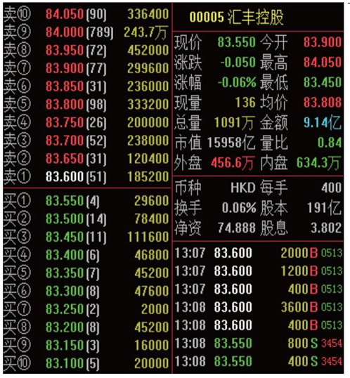
汇丰控股 “买一” 和 “卖一” 均有挂单，“买一” 价格为83.55，“卖一” 价格为83.6，该股的最小变动单位是0.05。
客户委托买入，最低委托买入价 = 83.55 -（0.05 * 24）= 82.35，
最高买入委托价 = 83.6 +（0.05 * 9）= 84.05；
客户委托卖出，最低卖出委托价 = 83.55 -（0.05 * 9）= 83.1,
最高卖出委托价 = 83.6 +（0.05 * 24）= 84.8;
在香港证券市场术语中，“手” 即一个买卖单位。不同于内地A股市场每买卖单位为100股，在香港，每只上市证券的买卖单位由各发行人自行决定，可以是每手100股、500股或1000股等。投资者如果想了解某只证券的买卖单位，那么可以登录联交所网站（https://www.hkex.com.hk），在 “投资服务中心” 栏目内，选择 “公司/证券资料”，输入股份代号或上市公司名称查询。
港股交易每个买卖盘最大为3000手，同时，最大股数限制是99,999,999股。由于港股的每手股数是由上市公司决定，因此，理论上可能出现因某公司每手股数过大使得在未达到3000手的情况下就达到99,999,999股的上限规定。可以说，港股交易的最大交易手数以99,999,999股/每手股数和3000手中的较小者为准。
少于一手，即少于一个完整买卖单位的证券，香港市场称之为 “碎股” (内地称 “零股” )。联交所的交易系统不会为碎股提供自动对盘交易，而是在系统内设有 “碎股/特别买卖单位市场” 供碎股交易。目前，碎股买卖在联交所通过半自动对盘的方式进行，价格通常有所折让。提示投资者，港股通投资者持有的碎股只能通过联交所半自动对盘碎股交易系统卖出，不能买入。
提示投资者，碎股/特别买卖单位市场 不接受输入价高于或等于完整买卖单位最低价下限（如股票为0.01元）且股数等于或超过一个完整买卖单位（即一手）的买卖盘来进行半自动对盘。
此外，价格低于港币0.01元的证券即使属于完整的一手，但是因为价格已低于完整买卖单位市场中的最低按盘价，也在 “碎股/特别买卖单位市场” 交易。
举个例子，如果一只股票的按盘价已低至港币0.01元，那么投资者在碎股市场输入的买卖价仍然可以低至系统设定的最低输入价：港币0.001元。不过，当一只股票的按盘价已低至港币0.01元，那么有关证券的输入价上限同样不得偏离按盘价9倍或以上。
三、交易委托指令
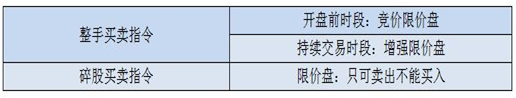
四、交收规则
1、投资者买卖港股通股票，实行T+0回转交易，T+2交收。
T日卖出某股票，一般T日可以买港股，T+2日可以买A股 ，T+3日资金可取。
2、特殊情况：对于T日卖出股票后，T+2日买A股的资金规则，如果香港市场因天气等原因造成延迟交收，将根据中国结算发布的延迟交收的时间，对卖出港股通股票的可用于买A股但不可取的资金进行全额冻结，可以买A股的时间根据资金交收时间相应顺延。
五、额度控制
试点初期，对人民币跨境投资额度实行总量控制，并设置每日额度。在试点初期，遵循有序可控的原则，港股通总额度为2500亿元人民币,略小于沪股通总额度的3000亿元人民币。同时，港股通的每日额度为105亿元人民币,略低于沪股通的每日额度即130亿元人民币。
交易期间，上交所证券交易服务公司在其指定网站暂定每分钟更新当日额度余额显示信息。如果港股通当日额度余额使用完毕而停止买入申报，上交所证券交易服务公司将在其指定网站予以披露。投资者应关注网站登载的相关额度余额信息。
在额度控制机制方面，由上交所证券交易服务公司对港股通交易每日额度的使用情况进行实时监控，并在港股通交易日终对港股通交易总额度的使用情况进行监控。上交所证券交易服务公司于交易结束后在其指定网站公布额度使用情况。
在额度统计口径方面，以投资者在交易环节发生的比如申报、成交金额等事项作为计算依据进行港股通额度控制。至于支付交易手续费、公司派发现金红利、利息等非交易事项的资金流量均不占用额度。
其一，港股通交易当日额度余额的计算公式如下：
当日额度余额 = 每日额度 - 买入申报金额 + 卖出成交金额 + 被撤销和被联交所拒绝接受的买入申报金额 + 买入成交价低于申报价的差额。
该公式中的买入申报金额、卖出成交金额、被撤销和被联交所拒绝接受的买入申报金额、买入成交价低于申报价的差额，按照中国结算每日交易开始前提供的当日交易参考汇率，由港币转换为人民币计算。
提示投资者,当日额度控制机制在不同的交易时段安排如下：
（1）在联交所开市前时段内，当日额度用尽的，上交所证券交易服务公司将暂停接受该时段后续的买入申报，且在该时段结束前不再恢复，但仍然接受卖出申报；
（2）在联交所持续交易时段内，当日额度用尽的，上交所证券交易服务公司停止接受当日后续的买入申报，但仍然接受卖出申报。在上述时段停止接受买入申报的，当日不再恢复，上交所另有规定的除外。
其二，港股通总额度余额的计算公式如下：
总额度余额 = 总额度 - 买入成交总金额 + 卖出成交对应的买入总金额
该公式中的买入成交总金额、卖出成交对应的买入总金额，按照中国结算每日交易结束后提供的当日交易结算汇率，由港币转换为人民币计算。 其中，卖出成交对应的买入总金额是指对卖出成交的股票按其买入的平均价格计算的总金额。
上交所可以根据市场需要，对总额度的计算方式进行调整。
提示投资者，总额度控制机制安排如下：
如果总额度余额少于一个每日额度，那么上交所证券交易服务公司自下一港股通交易日起停止接受买入申报，但仍然接受卖出申报。总额度余额达到一个每日额度时，上交所证券交易服务公司自下一港股通交易日起恢复接受买入申报。
六、港股通交易常见问题
1、投资者交易港股通股票是否需要存入港币？
答：不需要，港股通交易以港币报价，买入时收取人民币，卖出时支付人民币，系统会自动换汇。
2、确定港股通交易日，交收日的原则有哪些？
答：
港股通交易日、交收日的确定遵循以下几条原则：
（1）“最小交集”：仅在沪港两地均为交易日且能够满足结算安排时开通。
（2）内地放假、香港放假的均不作为交易日和交收日。
（3）香港市场规定，若圣诞、元旦及农历新年的前一日为工作日的，则该日上午半天交易，为非交收日，简称“半日市”；遇“半日市”，但当天为非交收日，也非港股通交易日。
（4）对于内地放假香港不放假的情况，为避免无法完成资金交收，内地放假首日之前的两天不作为港股通交易日。
3、港股通能否办理非交易过户？哪些情况下可办理？
答：可以，港股通投资者可参照中国结算A股相关业务规则，办理因继承、离婚、法人资格丧失、投资者向基金会捐赠及经国家有权机关批准等情形涉及的港股通股票非交易过户业务。
提示投资者注意，中国结算不办理港股通投资者因协议转让涉及的非交易过户业务。
4、开市前时段，港股通客户只能使用竞价限价盘报单，由于普通港股帐户是可以提交竞价盘委托，是否会有优于港股通客户成交的现象？
答：竞价盘优先于竞价限价盘对盘。
5、如果港股通股票的A股停牌，那么其作为港股通股票的H股是否同时停牌呢？
答：
A+H公司股票因重大信息（股价敏感信息）未披露，上交所对A股进行盘中停牌时，联交所同步实施H股盘中停牌。
两地规则中其他停牌规定情形暂不实施同步停牌。
6、港股通与A股交易规则有哪些差异？
答：
（1）不同于A股有涨跌幅限制，港股通无涨跌幅限制，因此，短时间内可能出现大幅盈利或亏损；
（2）不同于A股，港股通实行T+0回转交易，同一交易日内可以无限制次数的买卖，与此同时，港股通交收时间为T+2个工作日，如果投资者对港股通交收时间不清楚，可能会对交易作出错误安排。
7、沪港两地关于股票交易的时间不一样，那么港股通投资者要注意哪些风险呢？
答：
（1）交易日方面：由于只有当两地市场都可进行正常交易和结算的交易日，才被定为“港股通”交易日，这样，就存在港股交易，而港股通不交易的情况；另外在内地长假期间，由于港股通业务暂停，而无法对持续交易的港股产生的股价剧烈波动及时应对的> 风险。
（2）沪港两市交易时间上还存在较为明显的区别，港股交易时间主要包括开市前时段及持续交易时段。其中，在9：00-9:30的开市前时段内，港股通投资者仅能在9：00-9：15输入竞价限价盘，且不能修改订单，仅能先撤单再申报。此外，香港市场的持续交> 易时间为9：30-12：00；13：00-16：00，较沪市股票（大宗交易除外）连续竞价时间多一个半小时（即11：30-12：00，15:00-16:00）。
（3）此外，港股通投资者可以在12：30-13：00的时段撤销早市未成交的申报。
（4）香港出现台风或黑色暴雨等事件时，联交所将可能临时停市，投资者将面临在停市期间无法进行港股通交易的风险。投资者应当关注香港市场因台风等恶劣天气造成的临时停市等处理，做好投资安排。
交易风险
原文: 港股通交易风险
一、制度差异风险
香港证券市场与内地证券市场存在诸多差异，投资者参与港股通交易需遵守内地与香港相关法律、行政法规、部门规章、规范性文件和业务规则，对香港证券市场有所了解。
二、股价波动风险
香港市场建立了市场波动调节机制，但对股票交易价格不设置涨跌幅限制，且港股实行T+0交易机制，加之香港市场结构性产品和衍生品种类相对丰富，因此，个股股价受到意外事件驱动的影响而表现出股价波动的幅度相对A股更剧烈。
三、交易时间差异风险
每个港股通交易日的交易时间包括开市前时段、持续交易时段和收市竞价交易时段，具体按联交所的规定执行。圣诞前夕（12月24日）、元旦前夕（12 月31日）或除夕日为港股通交易日的，港股通仅有半天交易，且当日为非交收日。
四、停市风险
香港出现台风、黑色暴雨或者联交所规定的其他情形时，联交所将可能停市，投资者将面临在停市期间无法进行港股通交易的风险；出现深交所证券交易服务公司认定的交易异常情况时，可能暂停提供部分或者全部港股通服务。
五、碎股交易限制风险
港股通投资者持有的碎股只能通过联交所半自动对盘碎股交易系统卖出。
六、T+0回转交易风险
投资者当日买入的港股通股票，经确认成交后，在交收前即可卖出，投资者应当关注因此可能产生的风险。
七、订单申报差异风险
与内地证券市场相比，联交所在订单申报的最小交易价差、每手股数、申报最大限制等方面存在一定的差异，投资者应当关注因此可能产生的风险。
八、报价颜色差异风险
在香港证券市场，股票价格上涨时，股票报价屏幕上显示的颜色为绿色，下跌时则为红色，与内地证券市场存在差异。
九、证券交收期差异风险
香港证券市场与内地证券市场在证券资金的交收期安排上存在差异，港股通交易的交收期为T+2日。如果投资者卖出证券，在交收完成前仍享有该证券的权益；如果投资者买入证券，在交收完成后才享有该证券的权益。
交易费用
原文: 港股通交易费用
一、港股通交易时主要包括以下费用（四舍五入保留两位小数）
二、请投资者留意参考汇率和结算汇兑比
内地投资者通过港股通买卖港股通股票，以港币报价成交，而投资者实际支付或收取人民币。因此，需要将港币按一定汇率换算为人民币，这就是通常所说的换汇处理。交易所会公布参考汇率和结算汇率来计算客户买卖收取的人民币金额。
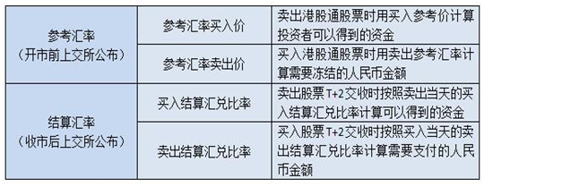
例如：某客户以港币5.38元买入两手建设银行00939，成交金额为10760港币，则各项费用收取如下（建设银行1手=1000股，假设某券商收取的佣金费率为千分之1.5，参考汇率卖出价为0.8596，卖出结算汇兑比率为0.83905）
交易佣金=10760*0.15%=16.14港币
印花税=10760*0.1%=10.76=11港币（因不足1元向上取整，故收取印花税11港币整，若分笔成交的则分笔计算印花税并不足1元向上取整后再相加。此案例假设1笔成交。）
交易征费=10760*0.0027%=0.29港币
交易费=10760*0.005%=0.54港币
交易系统使用费=0.5*1=0.5港币
股份交收费=10760*0.002%=0.22港币，实际收取2港元
证券组合费=日终港股市值*0.008%/365
客户买入当天冻结资金=（10760+16.14+11+0.29+0.54+0.5+2）*0.8596=9275.48元人民币
T+2交收时交收资金=10790.47*0.83905=9053.74元人民币
三、港股通交易费用与换汇常见问题
1、参考汇率与结算汇兑比率有何不同？
答：参考汇率不等于结算汇兑比率，结算汇兑比率一般都会优于参考汇率。即一般投资者买入时，按卖出结算汇兑比率所计算出的实际需要支付的人民币，通常将少于证券公司日间按卖出参考汇率所冻结的金额。反之，投资者卖出时，按买入结算汇兑比率所计算出的实际可以得到的人民币，通常将多于证券公司日间按买入参考汇率所计算出的金额。当然，出于风险管理的需要，可能有证券公司会在参考报价的基础上再加减一定比例来控制客户资金，投资者应事先咨询指定交易证券公司了解详情。
提示投资者注意，极端情况下离岸人民币市场发生大幅度波动时，有可能出现结算汇兑比率劣于参考汇率的结果。
2、交易日与T+2 交收日之间汇率发生波动，对投资者有影响吗？
答：没有影响。投资者T日通过港股通买卖港股，T日日终已经锁定交收日的换汇汇率。
3、什么是证券组合费？如何收取？
答：证券组合费是指香港结算根据中国结算名义持有账户每自然日日终港股持有市值，所计收的存管和公司行为服务费用，如果持有港股通证券，即使不交易，也需每日缴纳证券组合费，投资者应避免因此发生资金匮乏。
持有港股的市值（币种：港币） 年费率 小于或等于港币 500亿元 0.008% 大于港币500亿元，小于或等于2,500亿元 0.007% 大于港币2,500亿元，小于或等于5,000亿元 0.006% 大于港币5,000亿元，小于或等于7,500亿元 0.005% 大于港币7,500亿元，小于或等于10,000亿元 0.004% 大于港币10,000亿元 0.003%
4、证券组合费是不是投资者港股通交易的额外成本？
答：目前，香港结算针对香港本地市场收取的证券存管、代理人服务等收费项目有4、5 项之多，计算标准比较复杂，而且收取时间不统一，香港当地也有简化收费标准的呼声。香港结算正在推动统一采取组合费代替现有收费标准。因此，对投资者而言，证券组合费并非进行港股买卖的额外成本。
股票分红
原文: 【基础知识】股票分红是怎么回事，分红到底是亏了还是赚了？
整理自: 2022-01-25 17:54:27
什么是分红？
投资者购买一家上市公司的股票，对该公司进行投资，同时享受公司分红的权利，股票分红是上市公司在年终（年中）结算后，将盈利的一部分作为股利按股额分配给普通股股东的行为，一般有两种形式：派发 现金股利 和 股票股利，上市公司可根据情况选择其中一种形式进行分红，也可以两种形式同时用。
现金股利 是指以现金形式向股东发放股利，称为派股息或派息；
股票股利 是指上市公司向股东分发股票，红利以股票的形式到账，又称为送红股或送股。
另外，公司想要给股东分配红利须满足以下基本条件：
- 公司当年有税后利润；
- 已经弥补公司亏损；
- 已经提取10%的法定公积金；
- 最近三年以现金方式累计分配的利润不少于最近三年实现的年均可分配利润的30%。
当然还有一些其他复杂的条件和程序要求，这里就不赘述了。
股票分红为何要除权？
上市公司以 股票股利 分配给股东，也就是公司的盈余转为增资时，或进行配股时，就要对股价进行除权（XR），XR 是 EXCLUD（除去）RIGHT（权利）的简写。
上市公司将盈余以 现金股利 分配给股东，股价就要除息（XD），XD 是 EXCLUD（除去）DIVIDEN（利息）的简写。DR 表示当天是这只股票的 除息、除权日，D 为 DIVIDEN（利息）的简写，R 为 RIGHT（权利）的简写。
当一家上市公司宣布送股或配股时，在红股尚未分配，配股尚未配之前，该股票被称为含权股票。
要办理除权手续的股份公司先要报主管机关核定，在准予除权后，该公司即可确定股权登记基准日和除权基准日。
凡在股权登记日拥有该股票的股东，就享有领取或认购股权的权利，即可参加分红或配股。
A股 分红一般为两次，半年报和年报，年报分红居多。分红方式也是两种：现金 和 股票。
分红: 现金
现金分红很简单，分多少股价里面扣多少。这里有个误区是不要以为是直接送钱给你，而是把股票中本身含有的部分价值，折现给你，同时股价会下跌。
注意:
现金分红是要交个税的，基本原则是持有时间越长，交税越少：
- 持股一年以上，收红利的5%的税， (持股 >= 1年, 5% 个税)
- 持股低于一年超过一个月，收红利的10%的税，(1年 > 持股 >= 1月, 10% 个税)
- 持股不足一月，收取红利的20%的税。 (1月 > 持股, 20% 个税)
分红: 股票
我们经常听到 送转 ，其实还有一个派 。送转派 三个方式。很多人不理解为什么要分为三个词，送转都是给股票，派是给现金。
例如10转5送5派1,每10股给你10股，另派1元现金。
转和送的区别在于交税，转不缴税，送每股缴纳1元。
这里也有个误区是不要以为你股票多了你岂不是资金翻一倍？想得美，无论转送你多少股，除权后股价会按转送比例下调，10送10,20的股价第二天成10块。只不过你就是股票多了而已。
股票分红意义
- 只有真正盈利有保障，现金流稳定，债务可控的公司才能持续大比例分红。所以，通过分红能力，可以排除掉大量财务注水公司。
- 只要分红能力稳定，分红除权、股价变低的股票更有投资价值，所以会大概率填权。假设有一只可以每年稳定分红10元的股票，现价100元，分红率10/100；分红后，股价变90元，但依然可以每年分红10元，分红率10/90，显然更值得投资了。
- 当然，有些公司增长快，资金利用效率高，选择不分红。如果你能找到这样的公司，并且对自己的判断有把握，可以忽略高分红股票。
分红送股是利好还是利空?
很多股民以为分到的红利或者红股就是自己的纯获利，其实不然，因为股票分红后，交易所在权益登记日次一交易日(也就是除权除息日)会对该股票作除权除息处理，形成除权除息价，以保持股东持有该股的前后总权益不变。
分红前的持股市值 = 分红后的持股市值 + 现金红利【如遇除权除息价需四舍五入的，开盘前账户显示会与计算所得有出入，但不影响客户实际资产，因为开盘前的市值只是短暂的过度，后续行情还是按照实际计算所得的除权除息价变化的。】
就像前面提到过，上市公司分红是需要达到规定的盈利条件，从这个层面来看可以在一定程度上体现该公司的运营状况良好。另外，除权除息后，股价会变低，能增加流动性，对于一些之前盘桓在高位不敢下手的客户来说也不乏是一种机会。
所以，你选择除权除息前获利了结，我选择持有到分红以待后市填权获利，都是根据股民个人投资习惯和判断来取舍。
这些分红“套路”需要警惕
值得注意的是，一些上市公司虽有大比例现金分红，但多数现金最终都流进了大股东的腰包。部分高额现金分红的公司，偶尔分红之后，却面临亏损、无红可分的窘境。
经营较好的年份，为何吝于分红？分红政策为何会出现剧烈波动？深圳某私募人士分析称，通过对业绩、分红的调节，可以达到拉升、打压股价，或者为后续运作铺路，以往已经出现类似情形。但对于上述情况，不好过多猜测。
武汉科技大学教授董登新分析，现金分红有利于价值投资、长期投资，但分红要有均衡的节奏，不能忽高忽低，长期不分红、分红剧烈波动的，都要引起警惕，需要监管层加强监管力度，对相关公司的财务真实性加强监控。
如何挖到高分红潜力股？
对于投资者来说，股票属于绝对的高风险投资品种，需要警惕但股息的差异化税收，以及除息规则，否则，就会面临拿了红利仍然赔钱的处境。
“打铁还需自身硬”，投资者炒股需要“火眼金睛”，认清高分红潜力股的这5大特征：
- 高分红历史
“良心企业”都有良好的高分红历史，比如，双汇发展、华电国际、上汽集团 和 中恒集团 的分红率还呈现逐年递增的态势，其中 双汇发展、浙江永强、奥瑞金、华能国际 和 大秦铁路 历年平均分红率超过50%。
- 现金充裕，业绩稳定
现金资产相对充裕，未来现金收入可期，是公司维持高分红水平的基础。未分配利润较为充足，才能足以支撑高分红的预期。
- 资产负债率较低
负债水平不高，当公司现金充沛，毋须更多资金补充扩张的情况下，把钱通过高分红的形式分掉，就是合理的选择。
- 存实际控制人，第一大股东持股比例较高
从股东意愿角度来看，大股东的高持股比例是高分红的动力，大股东也实际拿走了分红的大部分收益。
- 国企或央企背景
这些公司相较其它公司，有为母公司推进国企改革提供资金的意愿，也有配合监管层鼓励分红、提高分红比率、加强A股价值投资取向的意图。
原文: https://zhuanlan.zhihu.com/p/80040843
什么是集合竞价
港剧《大时代》的情节历历在目。靠炒股发家致富，这或许是大多刚进股市的股民的梦想吧。很多股民也对股市充满了期待，开了股票账户，万丈豪情、意气风发的想在股市里大发一笔，然而现实却是骨感的，给了无数个巴掌。炒股到底能不能发家致富？
股市是提款机，股市是造富地，但股市又遍布着陷阱，是屠宰场。我相信大多数的人都早已陷入了股市的陷阱之中，能够靠着股市发家致富的人毕竟是少数，究其原因，你知道是为什么吗？
一个故事引发的深思
在 龟兔赛跑的故事中，兔子因为睡了一觉，最终败给了乌龟。很多人会想：下一次兔子总结经验，就不会败给乌龟了。于是乎，上帝给兔子创造了一个机会，册于了兔 子极快的速度，但为了公平，同样给予了乌龟很长的寿命。结果，乌龟能活数百年，而且，乌龟可以把自己的赛场设在江河湖海里。以一生的时间来较量，它一定比 兔子跑得远得多、也深广得多。
在人类的故事中，龟兔赛跑，老鹰是看客，是拉拉队。但在上帝的赛场上，龟兔赛跑，旁边的老鹰随时都有可能将兔子叨走吃大餐。这时候，对兔子来说，连输的资格都没有，因为你连命都没有，还说什么输赢?
在股票市场中，通常有人在说，赚的太少，别人都是好几倍好几倍的赚的，我就很好奇，为什么要在股市中比较赚钱的速度呢？有什么意义吗？
在 股市中，不像你的日常生活那样，就比如这个月你拿1万的工资，那么一年后，你就可以拥有12万。但在股市中，你这个月可能拿1万，下个月可能拿5万，但再 往下呢？可能你在第三个月时就会赔10万了。所以说，就算你在牛市中赚了钱，也不代表你在未来不会把你所有赚来的钱赔光甚至搭上你所有的积蓄。
一个时间的赚钱效率说明不了任何问题，正如股市常说的：快就是慢，慢就是快，你赚得快赔得快，你的快就是慢。
你少赔或不赔，你的慢就是快。如果你第一年赚40%，第二年赔20%，第三年又赚40%，第四年又赔20%，如此十年下来，你一共才赚了76%，如果你的雄心不那么大，你每年都赚10%，10年下来，你净赚了159%。比较一下，什么叫做慢就是快。真正的威力在于积累。
说起来，炒股是最无聊的、毫无美感与激情的活儿，如果你炒得很HIGH，炒出了速度和激情，呵呵，那说明你离接下来的痛苦不远了！
想在股市赚钱先想明白这五个问题
炒股，大家都是为了一样东西：赚钱！然而在股市里真正能够赚钱的却只有少部分人。之所以会亏钱，因为大部分股民炒股都会遇到下面几个问题：
赚钱没卖反亏钱卖掉；
选好却没买的股票大涨；
卖掉的股票大涨；
买入重仓的股票不涨反跌，轻仓股票大涨；
套住的股票始终不涨
……
其实，问题看似多，基本上都是因为执行力不够导致的！想要做到盈利，必须先清楚为什么执行力差。
下面是股民执行力差的5大原因：
-
不知道做什么！
股民没有明确能够落地的操作规划，也没有明确的选股策略，随意的买入卖出；还有一些股民操作规划经常变，策略反复改，买入即亏，卖出既涨，到最后只好靠惯性和自己的理解去操作股票。
这就使股民的操作与入市初衷相违背，股民在之后的股市道路上无从盈利，更别说做到复利增长。
-
不知道怎么做！
美国股民数量与中国相当，但是美股散户所占的成交量与A股散户所占成交量的比例为3/8，因为大多数美国股民炒股都是交由专业的金融公司来打理；
美国专业金融公司员工接受过专业的学习和实践训练，而中国股民完全相反，95%以上进入股市没有经验，甚至有很多买入股票都是在他人指点下完成，更妄谈技术分析、投资分析。完全是凭一腔赚钱的热血进入股市。
在实际操作中，对于买入、持有、卖出股票根本不知道该怎么做，到最后结局就一个：“亏损”，且亏损都不知道背后真正的原因在哪里。
-
做起来不顺畅！
如果士兵在前线打仗，后勤补给供应不上，请求支援但是指挥部没有反应，负伤了得不到快速的救护，那士兵的斗志显然会受到很大的影响。
做股票亦然，开户买入股票，但是后续方法跟不上，盈利不知道什么位置止盈，亏损不知道止损，赚钱的时候只是虚拟的数字，亏损的时候发现钱少了，就这样热情被一次一次的亏损所消耗，慢慢的就变得不主动。
越做越不顺，还是不知道原因在哪里。
-
不知道怎么做才是对自己有好处的！
90%股民做股票都是看眼前的利益，这是由于人性导致的。当眼前的利益看不到时，自然没有太大兴趣去做。
举个例子，让股民先花掉10万元，未来三年能有获得30万元的回报。大多数股民是不会选择去花掉10万元，而是宁愿把所有的钱放在股市中，跟着感觉走。
因为直接花掉10万元是眼前的利益受损，而直接炒股说不定还会涨呢！只注重眼前，而不注重未来，结果是没有磨刀，误了砍柴功！
股市恰恰是对未来的一个投资，在A股，谁都能去做，但没多少人想过“做好”，能给自己带来多少的好处。
-
觉得做不好没什么坏处！
A股没有建立完善的退市机制，所以导致多数股民坚定了这么一条信念“管他呢，迟早会涨回来的”。
此时，做的好不好都无所谓，股民已经忘记了入市的目的，早就已经把执行力丢到脑后跟。跟周边做股票朋友一沟通，哎呀，感觉自己的想法就跟天才一般，太佩服自己了。
“无所谓”精神，在A股股民心中有相当高的占比。但做股票的“初衷”是什么呢？
这五个问题，大家看看自己有没有这样的情况，有则改之，无则加勉！
清楚了执行力差的原因，解决的办法也就变得明朗。做一个有执行力的股民，成为那10%盈利的股民！
集合竞价
集合竞价是指在股票每个交易日上午9:15-9:25，由投资者按照自己所能接受的心理价格自由地进行买卖申请，集合竞价所有交易在9点25分以同一价格成交，且为开盘价。也就是说，盘前集合竞价是确定当天开盘价的一个过程。虽然盘前集合竞价只有短短的10分钟时间，但这十分钟也分为下边几种情况：
9：15-9：20可以挂单也可以撤单
9：20-9：25只能挂单，不能撤单
9：25-9：30不能挂单也不能撤单
9：25-9：30不能挂单也不能撤单，指的是交易所对证券公司，在这5分钟里，股民可以正常下单，但只是暂存在券商的系统里，9：30才提交到交易所、
路径是这样的：股民（9：25-9：30下单）—— 证券公司（暂存）—— 交易所（9：30接收）
集合竞价的产生
价格优先？时间优先？ NO！是“最大成交量”优先。
也就是说开盘前买卖双方都在挂单，挂10元买和卖的人有100个，挂9.9元买和卖的人有1000个，那么，咣！开盘价就是9.9元。此时，高于9.9元买入委托全部成交，低于9.9元卖出委托全部成交。
如果挂10元买的人100个，挂10元卖的人10000个呢？
那成交价还是9.9元。因为在10元这个价格还是只能撮合100个成交，而9.9元有1000个。与成交价相同的买卖双方中有一方委托全部满足。
如果9.9元、10元、10.1元能成交的数量都一样呢？
沪市取这几个价格的中间价格为成交价，深市则取离前一交易日收盘价最近的价格为成交价格。
多空首战
集合竞价是当日交易多空搏杀的第一个回合，也是当日行情的预演。 集合竞价成交就是个股的当日开盘价，主要有高开、平开和低开三种方式。其技术要点包括以下三个方面：
集合竞价多空力量的对比的常态表现为以下几点：
-
一、高开集合竞价
（1）买量较大，卖量较小显示了当日多头强势。
（2）买量较小 卖量较大极可能高开低走。
-
二、低开集合竞价
（1）卖量较大，买量较小显示了当日空头强势。
（2）卖量较小 买量较大极可能低开高走。
-
三、平开集合竞价
（1）表明了多空力量的均衡状态。
（2）买量较大，卖量较小显示了当日多头强势。
（3）买量较小，卖量较大显示了当日多头强势。
对集合竞价的量价状态的分析必须与市场行情、个股历史走势相结合，否则这集合竞价的常态表现对于当日看盘的技术意义不大。
当集合竞价与市场行情、个股的趋势状态相一致时，才会显示集合竞价的预期价值，否则集合竞价对盘中走势预期无法发挥实战价值。因为，个股大多数的市场表现往往与集合竞价显示的状态相悖。
集合竞价显主力意图
集合竞价最易被人为操纵。绝大多数集合竞价是主力操纵的市场行为。主力往往通常集合竞价表明市场意图，试探市场对该股当日初步反应。
集合竞价往往对主力当日盘中骗线的第一个阴谋，主力往往利用集合竞价进行凶狠的反技术操作。有的主力巨量买单高开集合竞价，随后即大幅高开低走；有的主力大幅低开，却低开高走；有的当日强势上涨的个股，却在集合竞价中表现的极度的弱势。这些都是主力为了掩饰其真实的市场意图在集合竞价中所进行的反技术操作的表现。
总之，集合竞价充满了诱惑，又充满了危险，对于超级短线的交易是最初的一道门槛。除非集合竞价与市场行情、个股状态相一致时，超级短线交易者才可以集合竞价作为短线第一交易点，否则应观望为宜。
对开盘方式产生影响最大的因素主要有以下五个方面：
-
昨天的走势状态对开盘方式产生重要影响。
-
昨天的尾盘状态对开盘方式产生重要影响。
-
个股趋势结构的性质对开盘方式产生重要影响。
-
大盘和板块的昨天的整体表现对开盘方式产生重要影响。
-
当日突发性重大消息面的刺激对开盘方式产生重要影响。
如何通过集合竞价定强弱
1）板块定强弱
这种方法的前提是，你已经有标的股，在考虑是否要进场或者已经拿了一段时间，考虑是否要出场，特别是强势股，因为强势股涨的快，枪头也调转的快，一不留神，就是10个点没了，所以特别要留意。
将你关注的股加入自选，同步加入关联度极高的相关股1-2只，再加上板块龙头1-2只，观察集合竞价的走势，如果板块龙头都开的不及预期，那么安全起见，就可以先考虑撤了，因为题材中，龙头的示范作用还是很明显的。
当然，什么是符合预期？什么是不及预期，这得根据前一天的走势和板块强度来定义，没办法量化，只能依靠经验。但有几点，比如昨天强势涨停（一根线），并且是板块率先涨停的，第二天预期就是至少高开，板块热的话，要在5个点以上，如果平开或者低开，那就是不及预期。这个比较抽象，热股哥后边有机会再说，否则今天就说不完了。
2）竞价图定强弱
首先，竞合竞价都有竞价图，各种操盘软件都有，就在分时图上。热股哥简单举几个例子。
（1）弱转强

上图，红框部分时间就是集合竞价图，前面有说到9：15-9：20，可以撤单，所以9:20分之前的重要性，不及9:20分之后，因为之后才是真正的成交量。
由上图可以看出，竞价价格在9:20之前，有较高的价格，明显是玩的成分比较大。一旦过了9:20，竞价开始往下走，大概过了9:22分，竞价价格开始往上，说明有买单在不断的进场，最终使得从竞价价格-2.79%，到了0附近，这时典型的弱转强模式，说明竞价的后期，多方在不停的挂单。
黄色框框，下方为成交匹配量，上方为未匹配量，红色代表买方，所以这样说明了竞合竞价的强势。这股就是0300466赛摩电气，大家可以回去认真看下。
（2）强转弱

集合竞价开始是平开，9:20分之前的不那么重要，在20分之后，刚开始还是买盘占优，显示红柱，但是在9:20分之后，卖单挂出，瞬间变成绿色，竞价价格也是进一步拉低，这是典型的弱势竞价，但算不上强转弱。
集合竞价选涨停的操作条件
1、股票波段涨幅小于25%。
2、早盘集合竞价必须高开，一般要求高开在2%以上为宜，即股价至少要符合强势高开标准。
3、符合巨量的八个标准 （详见涨停板战法第六篇）
4、开盘一小时股价处于强势中，回调不破开盘价、均价线或前日收盘价
5、个股均线系统多头排列最佳，仅生命线、决策线、趋势线多头排列次之，仅攻击线和操盘线金叉最次，均线完全空头排列慎用。
6、大盘处于牛市或波段上涨行情中最佳，大盘处于牛市小级别调整行情或平衡市中次之，大盘处于熊市或牛市大级别二浪调整中慎用。
开盘有主力想直接把价格顶高做引导 ,这时候很多昨天买入的人 故意也去往上面加单去拉高 做引导, 所以说前五分钟的单子很多都是假的,到了九点十九分,不出意外的撤单了。
真的竞价水平就是图中横着的那一段. 在之后从九点21分的时候,不断的有资金进场去抢筹,直到24分的时候, 资金要直接去堵涨停板的盘口了, 很多人也就直接挂涨停的单子去抢筹了. 然后集合竞价涨停开盘, 前几笔交易都是大单在前面堵着的. 随后全天硬板 没打开. 明天高开个2% 不难吧.....
看下面成交量在一分钟内急剧放大了三倍 价格上去的同时 量能一定要有效放大才好用。

开盘后的大单抢筹堵单：
股市二八定律
股市二八定律：赢家和输家之间的区别在这8条
二八定律应用很广，在股市里面二八定律也很实用，今天就跟大家来分析一下股市二八定律，赢家和输家区别就在这里。
二八定律简单介绍
二八定律也叫巴莱多定律 ，是 19世纪末 20世纪初意大利经济学家巴莱多提出的 。该定律认为 ，在任何一组事物里 ，最重要的只占其中一小部分 ，约为20% ，其余的80%尽管是多数 ，却是次要的 ，因此又称二八法则 。二八定律揭示的是事物的普遍现象和规律 ，在社会学、经济学、管理学等许多领域都得到了广泛运用 。其宗旨是提醒人们将主要精力和资源用在影响事物变化的关键部分 ，这部分只占全部因素的一小部分 ，比如20% 。
从哲学的角度来看 ，就是要用80%的资源解决只占全部因素20%的主要矛盾 ，用20%的资源去打理80%的次要矛盾 。当然 ，其中的20%或80%并非是绝对数字 ，是一个大概率的数字，主要是表达一种比率关系 。

股市二八定律
二八定律在股市里面也很实用，在股市上一直有”一赚二平七亏损“的说法，真正能在股市盈利还是少数。要成为市场赢家，很关键就是要做股市中的少数 ，我们先来了解股市里的 ”二八定律“ 。
股市里的二八定律
-
规律 1：股市里的投资者 ，到最后真正能赚钱的只占20% ，80%是不赚钱的 。因为只有20%的投资者在投资之前考虑出现与预期相反时的应对措施 ，而80%的人认为市场总是与预期相同 。
结论 ：股市投资的目的是为了赚钱 ，但前提得保持资金安全 。
-
规律 2：市场20%的大盘权重股，对指数影响力却是80%的作用 。
结论 ：沪指主要就是由大盘权重股来影响，指数主要就是看关键指标股，不能反映小盘股的情况，尤其是出现我们说的二八现象（大盘股涨小盘股）这时看大盘指数会失真的。
-
规律 3：当80%的人看好后市时 ，市场已经接近顶部 ；低于20%的人看好后市时 ，股市已经离底部不远 。
结论：炒股来说不要随大流，当市场很多人都看好的时候，反而要时刻注意风险；反过来，但行情连续下跌，大部分都开始绝望的时候，行情反而要来了。
-
规律 4：券商80%的佣金来自于20%短线客的交易 ，股民80%的收益却来自于20%的交易次数 。
结论：短线对大部分来说操作难度很大，操作不在于次数，最关键是要抓住大波段行情机会。要是没有娴熟的短线投资技巧 ，不要贸然去参与短线交易 。
-
规律 5：一轮行情只有20%的个股能成为明星 ，80%的个股会随大盘起伏 。
结论：炒作主要还是在明星股里面挖掘，要是错过了低位上车的时候，那就等待吧。抓到明星股、强势有部分是靠缘分 ，要好好把握，没做上也没关系 ，做好自己的事。
-
规律 6：投资收益有80%来自于20%的交易 ，其余80%的交易只能带来20%的利润 。
结论：投资者需要用80%的资金和精力关注投资的最关键的20%个股和20%的交易 。
-
规律 7：成功的投资者用80%的时间学习研究 ，用20%的时间实际操作 ；失败的投资者用20%的时间实盘操作 ，用80%的时间后悔 。
结论：要成为一个成功的投资者，要用大量的时间去复盘学习，而不是去后悔。
-
规律8：股价在80%的时间是处于震荡或下跌 ，仅在20%的时间内是处于上涨状态。
结论：操作的话，尽量都选择上涨趋势，避免震荡或下跌的阶段，这样时间效率就高很多。
总结，这几条都还挺经典的，在股市里面一定要充分把握这些规律，让自己成为市场赢家。
最后总结
我一直坚信走着一句话：不能摧毁你的，只会让你变得更强大。
你可以被市场打败，但千万不能被市场消灭。
交易这条路，注定是孤独的，我们可以选择结伴而行，但是如果你想要成功，最终你还是要自己战斗。大到掌握几千亿的基金经理，小到只有几千块的个人投资者，看似无数的人参与到市场，其实，真正的对手只有一个，就是你自己。有时候你会发现参与到市场中的你不是那个原来的你，市场中的你带着无数的情绪，贪婪、恐惧、狂热、暴躁。如果你战胜不了市场中的你自己，割舍不掉这些情绪，将这些情绪弱点暴露，那么市场打败你，是迟早的事。想要成为一个能持久稳定盈利的操盘手，你必须在炼狱中重生。
市场就像大海，强大到让人窒息。而你只能屏住呼吸自保，无数次黑夜的狂风暴雨摧残着那仅有的心志，只要一次的血本无归，就有可能让你放弃重新再来一次的希望，留下来的根本就是少数。十倍的杠杆就是放大十倍的人生，有人会认为这是一个能创造无限可能的地方，也有人会认为这是一个能快速进入地狱的地方......
然而，这并不代表市场就那么的可怕，宝藏就那么的遥不可及。只是在这个市场中，没有任何教科书式的方法和理论能让你持续而稳定的盈利，当你带着真金白银投入到市场中，所有的理性和看似真理性的理论都阻止不了你一次又一次的冲动。难道就没有成功的投资者么？有，但我无法去界定，假如有个人赚了几百万，你会说他是成功的么，但如果他之前赔了一千万么？所谓的成功只是把时间暂停了，以现在的状况来界定他是否成功。国际公认的投资大师彼得林奇就是因为在他事业最巅峰的时候，他退役了，所以给世人留下的就是他最辉煌的战绩。我相信能量守恒理论，成功的投资者是会让所有人羡慕，可光鲜亮丽的背后，付出的艰辛，经历的各种百转回肠，恐怕只有自己才能体会的到。
天空不曾留下飞鸟的痕迹，但我，已飞过。
投机活动算是一项事业么？我曾经一度怀疑过自己的职业，每天的行情波动让我的情绪疲惫不堪，年纪轻轻地我却需要用大师级的智慧和感悟去理解这个世界上最难的金融市场，有时候曾经一度自信心膨胀，感觉自己所向披靡，完全能够战胜市场，但市场总能给我一记闪亮的耳光。也一度想要放弃，去寻求一份安稳、平静的职业，但内心还是不甘的，庆幸的是，我坚持了下来，脑海里99%的放弃念头最后还是被那1%的信念击败。市场遵循着物竞天择，适者生存的自然法则，我们唯一可以做到的就是改变自己，我们需要更强大，才能在凶狠的市场中占有一席之地，我们更需要在炼狱中重生，才能做到顶级职业操盘手。天将降大任于斯人也，必先苦其心志，劳其筋骨，饿其体肤。如果有幸，有一天你顿悟了，进入到了大师行列，那么恭喜，你是全世界最自由的职业，享受着全世界最快的赚钱速度。
只是，这其中的苦难，真的是只有经历了才能体会。
科创板
近日，上交所集中发布了关于设立科创板并试点注册制的配套规则，有很多投资者对此非常关注。接下来，就让大明带着我们一起走近科创板，了解相关内容。
持续完善的交易所配套业务规则
本次集中发布的配套规则，具体包括6项主要业务规则，即《上海证券交易所科创板股票上市规则》和《上海证券交易所科创板股票交易特别规定》，以及关于科创板股票发行上市审核、科创板股票发行与承销和科创板股票上市委员会、科技创新咨询委员会工作管理规则。
4项配套指引主要是科创板股票交易风险揭示书必备条款和关于科创板上市保荐书的内容与格式、科创板股票发行上市申请文件受理以及科创板股票盘后固定价格交易的指引。
差异化的科创板企业上市条件
上交所科创板股票上市规则从发行后股本总额、股权分布、市值、财务指标等方面，明确了多套科创板上市条件。
提示投资者，不同于上交所主板，科创板企业可能存在首次公开发行前最近3个会计年度未能连续盈利、公开发行并上市时尚未盈利、有累计未弥补亏损等情形。
市场化的科创板发行承销机制
科创板新股发行价格、规模、节奏等坚持市场化导向，询价、定价、配售等环节由机构投资者主导。
- 科创板新股发行全部采用询价定价方式，询价对象限定在证券公司等七类专业机构投资者。
- 科创板企业普遍具有技术新、前景不确定、业绩波动大、风险高等特征，市场可比公司较少，传统估值方法可能不适用，发行定价难度较大，科创板股票上市后可能存在股价波动的风险。
- 首次公开发行股票时，科创板发行人和主承销商可以采用超额配售选择权，超额配售选择权实施结束后，发行人可能会增发股票。
审慎的适当性管理条件
-
符合法律法规及上交所业务规则规定的机构投资者；
-
符合50万资产、24个月投资经验等科创板适当性管理条件，经过证券公司适当性综合评估的个人投资者。
-
★ 不符合适当性管理要求的中小投资者，可以通过公募基金等产品参与科创板。
需关注的交易特别规定
- 沪市A股证券账户;
- 较宽的涨跌幅限制：首次公开发行上市的股票，上市后的前5个交易日不设涨跌幅限制；其后施行20 %的涨跌幅限制；
- 3种交易方式：竞价交易、盘后固定价格交易、大宗交易；
- 差异化的单笔买卖申报数量和申报价格最小变动单位：
单笔申报数量不小于200股（卖出时，不足200股的部分，应一次性申报卖出）；
上交所可以依据股价高低，实施不同的申报价格最小变动单位。
严格的退市制度
较主板更严格、 退市时间更短、退市速度更快
- 退市情形更多：新增市值低于规定标准、上市公司信息披露或者规范运作存在重大缺陷导致退市的情形；
- 执行标准更严：明显丧失持续经营能力，仅依赖与主业无关的贸易或者不具备商业实质的关联交易维持收入的上市公司可能会被退市。
精要
- 意义重大：是实施创新驱动发展战略、深化资本市场改革的重要举措。
- 主要服务科技创新企业：符合国家战略、拥有关键核心技术、市场认可度高。
- 市场化发行承销机制：以机构投资者为参与主体的市场化询价、定价和配售机制。
- 个人和机构投资者：
- 50万以上资产、24个月以上投资经验、通过适当性综合评估的个人投资者；
- 符合法律法规及上交所业务规则的机构投资者。
- 交易账户：
- 沪市A股证券账户
- 三种参与交易方式：
- 竞价交易
- 盘后固定价格交易
- 大宗交易
- 放宽涨跌幅限制：
- 20%
- 首次公开发行上市的股票，上市后前5个交易日不设涨跌幅限制。
- 竞价交易单笔申报数量：
- 余额不足200股的，一次性申报卖出。
- 新增两种市价申报方式
- 本地最优价格申报
- 对手方最优价格申报
- 合规交易：
- 审慎开展股票交易，不得影响股票交易价格正常形成机制。
- 可能对市场秩序造成重大影响的大额交易，应当根据市场情况分散进行。
市场版块
介绍
原文: 市场板块介绍
主板市场对发行人的营业期限、股本大小、盈利水平、最低市值等方面的要求标准较高，上市企业多为大型成熟企业，具有较大的资本规模以及稳定的盈利能力。中国大陆主板市场的公司在上交所和深交所两个市场上市。主板市场是资本市场中最重要的组成部分，很大程度上能够反映经济发展状况
中小板块即中小企业板，是指流通盘大约1亿以下的创业板块，是相对于主板市场而言的，有些企业的条件达不到主板市场的要求，所以只能在中小板市场上市。中小板市场是创业板的一种过渡，在中国的中小板的市场代码是002开头的。中小板属于深圳交易所设立的板块。
是指
主板之外的专为暂时无法上市的中小企业和新兴公司提供融资途径和成长空间的证券交易市场，是对主板市场的有效补给,股票代码为300开头。在创业板市场上市的公司大多从事高科技业务，具有较高的成长性，但往往成立时间较短规模较小，业绩也不突出。 创业板市场的风险要比主板市场高得多。当然，回报可能也会大得多。对二板市场的监管更为严格。其核心就是 “信息披露”。
“新三板”市场 原指 中关村科技园区非上市股份有限公司进入代办股份系统进行转让试点，因挂牌企业均为
高科技企业而不同于原转让系统内的退市企业及原STAQ、NET系统挂牌公司，故形象地称为 “新三板”。新三板的意义主要是针对公司的，会给该企业，公司带来很大的好处。目前，新三板不再局限于中关村科技园区非上市股份有限公司，也不局限于天津滨海、武汉东湖以及上海张江等试点地的非上市股份有限公司，而是全国性的非上市股份有限公司股权交易平台，主要针对的是中小微型企业。
所谓的 “老三板” 指的是包括从原来两个法人股市场退下来的 “两网股”股票 和从主板市场终止上市后退下来的 “退市股”股票。其中：“两网股”是指1992年7月1日在STAQ系统（全国证券交易自动报价系统）法人股流通转让试点运行和1993年4月28日投入试运行的NET系统（中国证券交易系统有限公司开发设计），并在1999年9月9日关闭STAQ和NET系统后遗留下来的股票。“退市股”则是因为连续多年亏损等原因（前后政策有微调）被强制性从主板市场终止上市后退到代办系统转让的股票。
基金
基金的定义
原文： 基金的定义
证券投资基金是一种利益共享、风险共担的集合证券投资方式，即通过发行基金单位，集中投资者的资金， 由基金托管人托管，由基金管理人管理和运用资金，从事股票、债券、等金融工具的投资， 并将投资收益按基金投资者的投资比例进行分配的一种间接投资方式。 在我国，证券投资基金的基金托管人必须由合格的商业银行担任，基金管理人必须由专业的基金管理公司担任。
基金的特征
原文： 基金的特征
作为一种现代化投资工具，证券投资基金所具备的特点是十分明显的。
（1）集合投资。基金的特点是将零散的资金汇集起来，交给专业机构投资于各种金融工具，以谋取资产的增值。
（2）分散风险。以科学的投资组合降低风险、提高收益是基金的另一大特点。
（3）专业理财。将分散的资金集中起来以信托方式交给专业机构进行投资运作，既是证券投资基金的一个重要特点，也是它的一个重要功能。
基金的分类
原文： 基金的分类
按照不同的方式，基金有多种分类：
（1）按基金的组织形式不同，可分为契约型基金和公司型基金。
（2）按基金运作方式不同，可分为封闭式基金和开放式基金。
（3）按投资标的划分，可分为债券基金、股票基金、货币市场基金等。
（4）按投资目标划分，可分为成长型基金、收入型基金和平衡型基金。
（5）按投资理念不同，可分为主动型基金和被动型基金。
（6）特殊类型的基金，包括ETF、LOF、保本基金 、QDII基金、分级基金。
基金的交易方式
原文： 基金的交易方式
- 开放式基金：产品在发行的时候是认购，基金成立以后只能申购和赎回，投资者的交易对象直接是基金的发行者。
- 封闭式基金：只有产品在产品发行的时候可以认购，基金成立以后就不能在从发行者那里购买，只能在二级市场内投资者之间买卖交易。也有一些封闭式基金在基金管理期限到期以后转变为开放式基金，也就是“封转开”。
- 特殊类基金：ETF和LOF这类特殊基金，既可以在一级市场上申购赎回，也可以在二级市场上买卖交易。
基金赎回时间
原文： 基金赎回时间
常规的来说，普通的开放式基金赎回时间，T日操作赎回，T+2日确认是否成功，若赎回成功，一般情况下，货币式基金T+2日资金到账；
QDII基金T+10日左右资金到账；
除上述基金外，其余品种赎回资金T+5日左右到账。部分特殊基金可以参考基金合同查看交收时间。
基金的相关费用
原文： 基金的相关费用
（一）与客户直接相关的交易费用
1、场内基金
（1）场内基金买卖需收取佣金，标准为不超过成交金额的千分之三，起点5元，具体按所在证券公司设置的费率标准收取。
（2）场内基金申赎需收取申购费、赎回费，按基金公司规定的费率标准收取。
2、场外基金
场外基金交易费用包括在募集期进行认购产生的认购费，基金成立后的正常申购期进行申购、赎回、转换产生的申购费、赎回费、转换费，相关费用按基金公司规定的费率标准收取。
（二）其他费用
以下费用从基金财产中列支，无需客户直接支付：
1、基金管理人的管理费；
2、基金托管人的托管费；
3、基金合同生效后的信息披露费、会计师费和律师费；
4、基金份额持有人大会费用；
5、基金的证券交易费用；
6、按照国家有关规定和基金合同约定，可以在基金财产中列支的其他费用。
基金管理人定义
原文： 基金管理人定义
基金管理人通常就是指基金公司，是指凭借专门的知识与经验，运用所管理基金的资产，根据法律、法规及基金章程或基金契约的规定，按照科学的投资组合原理进行投资决策，谋求所管理的基金资产不断增值，并使基金持有人获取尽可能多收益的机构。
基金管理人在不同国家（地区）有不同的名称。例如，在英国称投资管理公司，在美国称基金管理公司，在日本多称投资信托公司，在我国台 湾称证券投资信托事业，但其职责都是基本一致的，即运用和管理基金资产。
基金托管人的定义
原文： 基金托管人的定义
基金托管人是投资人的权益代表，是基金资产的名义持有人或管理机构。为了保证基金资产的安全，基金应按照资产管理和保管分开的原则进行运作，并由专门的基金托管人保管基金资产。
ETF和LOF概念
原文： ETF和LOF概念
1、LOF概念
LOF基金又称“上市型开放式基金”是一种既可以同时在场外市场进行基金份额申购或赎回，并通过份额转托管机制将场外市场与场内市场有机联系在一起的一种开放式基金。
2、ETF概念
“交易型开放式指数证券投资基金”（Exchange Traded Fund，以下简称ETF），简称“交易型开放式指数基金”，又称“交易所交易基金”。即以追踪某一特定指数走势为投资目标，采用一篮子股票进行申购赎回，基金份额在证券交易所上市交易的开放式基金。
两市ETF代码：上海以510开头，深圳以159开头。
ETF和LOF的交易规则
原文： ETF和LOF的交易规则
-
ETF交易交收规则
- 上海：
- T+0交易，T+1交收的：债券ETF、黄金ETF、交易型货币基金
- T+1交易,T+1交收的：其余剩下的ETF
- 深圳：
- T+0交易，T+1交收的：债券ETF
- T+1交易,T+2交收的：其余剩下的ETF
- 上海：
-
ETF开盘集合竞价
- 方式与中小企业板的开盘集合竞价方式相同，在开盘集合竞价期间，深交所即时揭示ETF的开盘参考价格、匹配量和未匹配量；每个交易日9:20至9:25不接受ETF份额买卖委托撤单。
-
ETF在什么情况下不能办理跨系统转托管
- ①处于基金募集期或封闭期；
- ②权益分派前R-2日至R日（R日为权益登记日）；
- ③处于质押、冻结状态。
-
LOF基金报价
- 场内：和股票报价一样,申报价格最小变动单位为0.001元人民币;场外：每个交易日公布净值。
-
认购LOF的流程
- T日，申请；
- T+2验资；
- T+3退回无效申请；
- 认购截止日+4日，确认。
-
LOF申购赎回
- T日申请；
- T+1确认；
- T+2申购份额可用；
- T+N日（2≤N≤6），赎回资金可用。
-
LOF买入数量限制
- 100份或其整数倍，申报价格最小变动单位为0.001元人民币。
-
LOF涨跌幅限制
- 有。±10%，自上市首日起执行。
-
ETF的除权除息与分红
- ETF在权利登记日当天就做除权除息，T+3发放。投资者通过深交所交易系统买入的基金份额只能选择现金分红；通过基金管理人或其代销机构买入的基金份额可以选择现金分红或红利再投资方式。
-
LOF停牌
- ①交易日公布年度和半年度报告或者收益分配公告（或预告），当日上午开市起停牌一小时，上午十点三十分复牌；或者其他可能造成巨大影响价格变动的情况，详见公告。
- ②在交易时间内，基金管理人如要停止上市开放式基金的赎回业务，必须预先申请其同时停牌。
ETF和LOF的区别
原文： ETF和LOF概念
| ETF | LOF | |
|---|---|---|
| 适用基金类型 | 指数型基金（基于上证１８０指数或上证５０指数的一种被动投资的基金产品） | 多样（被动投资的基金产品、积极投资的基金产品） |
| 申购、赎回的标的 | 基金份额和一揽子股票 | 现金 |
| 申购、赎回的场所 | 交易所 | 交易所、代销网点 |
| 申购、赎回的限制 | 基金份额一般在100万份以上，适合大投资者 | 申购份额1000份为起点，适合中小投资者 |
| 管理费用 | 低，管理费仅约为普通股票基金的三分之一、普通指数基金的二分之一 | 高，如我国内地现有积极管理型股票基金费率一般为1.5%以上 |
| 交易费用 | 低，不高于封闭式基金佣金水平（0.3%） | 高，如我国内地现有股票基金一般申购费为1.5%，赎回费为0.5% |
| 投资组合透明度 | 高，每日公告投资组合 | 低，每季度公告持股前10名 |
| 净值报价 | 15秒/次 | 一天一次或几次 |
| 套利方式和成本 | 实时套利，T+0交易，交易成本除交易费用外主要是冲击成本 | 跨越申购赎回市场与交易所市场进行交易必须经过系统之间的转托管,需要两个交易日的时间,所以LOF套利还要承担时间上的等待成本,进而增加了套利成本 |
QDII基金
原文： QDII基金
QDII即合格境内机构投资者的英文简称，是指在一国境内设立，经该国有关部门批准，从事境外证券市场的股票、债券等有价证券投资的一项制度安排。QDII基金，就是指投资境外证券市场股票、债券等有价证券的基金。
一般情况下，QDII基金的名称中常含有“海外、全球、亚太、大中华、标普……”以及代办国家或地区的文字。您所持基金是否属于QDII，还需以基金合同为准。
QDII基金的申赎规则大致与普通开放式基金相同，确认时间一般为T+3日。但由于其投资于海外，所以其赎回资金的到账时间要晚于普通开放式基金，一般为T+10交易日左右到账，具体时间可参见各基金公司公告。
基金中的基金（FOF）
原文： ETF和LOF概念
基金中的基金（FOF）与开放式基金最大的区别在于基金中的基金是以基金为投资标的，而基金是以股票、债券等有价证券为投资标的。它通过专业机构对基金进行筛选，帮助投资者优化基金投资效果。
FOF（Fund of Fund）是一种专门投资于其他投资基金的基金。FOF并不直接投资股票或债券，其投资范围仅限于其他基金，通过持有其他证券投资基金而间接持有股票、债券等证券资产，它是结合基金产品创新和销售渠道创新的基金新品种。
一方面，FOF将多只基金捆绑在一起，投资FOF等于同时投资多只基金，但比分别投资的成本大大降低了；
另一方面，与基金超 市和基金捆绑销售等纯销售计划不同的是，FOF完全采用基金的法律形式，按照基金的运作模式进行操作；FOF中包含对基金市场的长期投资策略，与其他基金一样，是一种可长期投资的金融工具。
基金中的基金风险性相对较小
投资风险是每一个投资者最关心的问题，对于新基民来说，面对市场上几百种差别不小的基金，个人挑选的难度和风险都不小，而为了规避风险，总想什么类型的基金都买一点。某资深理财师说：FOF实际上就是帮助投资者一次买“一篮子基金”的基金，通过专家二次精选基金，有效降低非系统风险的特点。
挑选单只基金的风险高和难度大，而FOF通过对基金的组合投资，则大幅度降低了投资基金的风险。FOF将自己的投资人群锁定在风险偏好较低者这一行列，也显示了其相对于基金的稳定性。
基金中的基金收益率稍低
尽管推出FOF的券商都声称自己的产品是有“费用省，收益高”的特点，由于FOF在投资基金中不可能全部投资股票型基金，需要配置一定的货币或者债券型基金，收益肯定没有股票型基金的收益高，尤其是在牛市。专业人士认为，如果你具有专业的眼光，或者身边有可靠的投资专家指点，在市场行情持续看好的情况下，大可不必太过谨慎。基金是长期投资产品，今年的收益率虽然无法和去年相比，但是投资股票型基金的盈利几率从理论上讲还是会高于相对保守的FOF。
私募基金
原文： ETF和LOF概念
私募基金是指通过非公开方式发现，面向少数机构投资者募集自己而设立的基金。由于私募基金的销售和赎回都是通过基金管理人与投资者私下协商来进行的，因此它又被称为向特定对象募集的基金。
私募基金的特点就是不能进行公开的发售和宣传推广，投资金额要求高，投资者的资格和人数常常受到严格的限制。相对于公募基金，在运作上具有较大的灵活性，它既可以投资于衍生金融产品进行买空卖空交易，也可以进行汇率、商品期货投机交易等。私募基金的投资风险较高，主要以具有较强风险承受能力的高净值人群为目标客户。
私募基金的风险点：
（1）信息不透明的风险。私募基金没有严格的信息披露要求，凡是涉及投资运作及管理的过程，都存在信息披露不充分的风险。
（2）与投资者抗风险能力不匹配的风险。投资者期望获得私募基金的高收益，但未必具备相应的抗风险能力，私募基金如忽视适当性管理，则容易造成风险错配。
（3）基金管理人导致的私募基金风险。由于缺乏严格的行业准入标准，基金经理的管理能力、行业地位及市场认同度等都存在着明显的差异，同样的市场环境，一部分基金经理能够凭借精准的投资为投资者带去收益，而一部分基金经理则可能造成投资者的损失。
（4）非法吸收公众存款的风险。部分私募基金会通过故意夸大收益、隐瞒项目等来吸引投资者参与投资，使基金面临非法吸收公众存款的风险。
交易型货币市场基金
原文： 交易型货币市场基金
交易型货币市场基金，是指符合交易所上市条件并在交易所交易系统以竞价方式进行交易，以基金净值申购或者赎回的货币市场基金，基金份额总额不固定且永久存续。
目前，在上交所和深交所都有该类货币基金上市交易，例如上交所的产品有华宝添益（511990）、银华日利（511880）等；深交所的产品有保证金（159001）、招商快线（159003）等。
基金买卖的交易规则：基金当日买入，当日即可卖出或者赎回。买卖申报数量，资金交收同股票交易规则。上海市场的该类基金当日买入，当日开始享受收益。当日卖出，当日开始不享受收益；深圳市场该类基金当日买入，下一交易开始享受收益，当日卖出，下一个交易日开始不享受收益。
基金申赎规则：当日申购，下一个交易日开始享有收益，当日赎回，下一个交易日开始不享有收益。上海市场的该类基金当日申购，两个交易日以后（T+2）可以赎回或卖出，当日赎回的，自己也要两个交易日（T+2）资金到账；深圳市场该类基金当日申购，当日即可赎回或者卖出，当日赎回，本金当日可用，两个交易日可取。委托申报数量无起点。
实时申赎货币基金
原文： 实时申赎货币基金
实时申赎货币基金是指货币基金通过交易所场内系统进行实时申购和赎回业务。场内货币基金实时申购业务是指投资者在上交所规定的交易时间提交符合规范的货币 基金申购申报，上交所系统实时确认申购申报是否有效，确认有效申购的基金份额当日享受基金收益，下一交易日可赎回；实时赎回业务是指投资者在交易时间提交 符合规范的赎回申报，上交所实时确认赎回申报是否有效，确认有效赎回的基金份额对应的资金款项当日可用，下一交易日可提取。
目前在上交所上市的该类货币基金有6支：
| 证券代码 | 证券简称 |
|---|---|
| 519800 | 保证金A |
| 519808 | 嘉实宝A/B |
| 519858 | 广发现金宝场内货币 |
| 519878 | 国保A |
| 519888 | 添富快线 |
| 519898 | 现金宝A |
办理货币基金实时申购、赎回业务的时间为9:15至11:30，13:00至15:00。
货币基金实时申购、赎回，采用“金额申购、份额赎回”的申报方式。
每笔申购金额应当为0.01元的整数倍，但不得低于1000元且不得高于999,999,900元。
每笔赎回数量应当为1份或其整数倍，但不得高于99,999,999,999份。
当日实时申购的货币基金份额，下一交易日起可以赎回。赎回资金当日可用，次日可取。
根据基金管理人在基金开放日每个交易日日初设定的当日基金净申购和净赎回总额规模分别进行前端控制，并根据基金管理人设定的单个账户净申购和净赎回额度进行前端控制。
基金管理人应当于基金开放日每个交易日日初，及时披露货币基金实时申购、赎回的额度限制情况。
申购当日开始计算收益，赎回当日开始不计算收益。
基金定投
原文： 基金定投
基金定投是定期定额投资基金的简称，是指在固定时间以固定金额投资到指定的开放式基金中，类似于银行的零存整取方式。
一般开通基金定投，可以去券商营业部，或者通过相应的电脑软件或者手机应用就可以操作，根据提示选择需要定投的产品、每期投资金额、发送日期等，即可完成定投设置。
开通基金定投需要开通对应的基金账号，通常基金账号需要两个交易日确认才能操作。
基金转托管
原文： 基金转托管
基金转托管是指您将在某个销售机构（券商、银行、基金公司等）持有的基金份额全部或部分转出，并转入另一个销售机构（券商、银行、基金公司等）。
基金转托管根据转出转入的交易场所，还分为系统内转托管和跨系统转托管。
“系统内转托管”：即登记在一个券商的场内份额转为另一个券商的场内份额、或登记在一个销售机构的场外份额转为另一个销售机构的场外份额；
“跨系统转托管”：即登记的场内份额转为场外份额、或登记的场外份额转为场内份额。
转托管成功以后一般需要两个交易日到账，有部分基金需要前往转入机构进行认领基金。
什么是基金的最新净值和累计净值
原文： ETF和LOF概念
刚刚入门的新基民经常会被各种名词难倒，最简单的要数单位净值和累计净值，更高层级的还有复权累计净值，这些到底是什么？
首先什么叫做单位净值？投资者可以简单理解为买一份基金的价格，比如你今天买入1万元基金，需要明确的是，你下单时并不知道自己以什么价格买了多少份，因为根据规定，我们提交申购申请若是交易日下午3点钟之前，应以当日基金净值申购，但这一净值一般来说在晚上七点或者更晚才能公布，若是非交易日或者交易日下午3点收市后提交申请，则申购基金的价格是下一个交易日的单位净值。
因此，只有在收市之后，基金净值公布了，有了净值，我们才可以轻松计算自己买了多少份基金了，具体的公式为：基金份额=(申购资金-手续费)/单位净值，若基金净值当天为1元，则投资者花1万元，申购的基金份额为1万份。计算好份额之后，未来想要知道自己拥有的基金市值，直接通过基金净值乘以份额就可以了，非常简单。
那么累计净值又是什么东西？基民都知道，一些基金年度或多或少会有分红，那么通过基金单位净值就无从知道基金往常的盈利情况，看累计净值就能弥补，根据公式，累计净值=单位净值+累计分红，把分出去的红利计算在内了，累计净值更能反映基金的收益情况，通过比较两个净值，就可得知该基金成立至今的累计分红。
也有一些基金还公布了复权累计净值，那又是什么东东？它主要是考虑到有些基民收到分红之后没有离场，选择再投资之后的收益。
基金的复权累计净值的意义在于，它统计出来分红再投资的收益。若基金分红后不离场，选择红利再投资，持有人持有的每份基金，可以多获得高达更多的收益。这也从一个侧面说明，遇到好基金，投资者不如设定为分红再投资更加合算。
看到这么高的净值，有些刚买基金的投资者就感觉有些“畏高”，感觉买高价基金不合算，宁愿买那些净值不足1元的基金，这样的想法实际上是错误的。请投资者记住，无论基金净值高低，买入当天你手中持有的基金市值是相同的，决定的未来投资收益的，并非基金的净值高低，而是基金未来的赚钱能力高低。因此，投资者应该把精力放在寻找最能为你赚钱的基金经理或者基金产品上。实际上，目前市场上的一些明星基金，净值居高不下，赚钱能力着实不弱。
分级基金概述
原文： 分级基金概述
一、分级基金的基本概念
分级基金是指通过基金合同约定的风险收益分配方式，将基金份额分为预期风险收益不同的子份额，其中全部或者部分类别份额在交易所上市交易或者申赎的基金。根据基金合同的约定，分级基金的基础份额和子份额之间可以通过分拆、合并进行配对转换。
根据沪深两市分级基金业务管理指引要求自2017年5月1日起，未开通分级基金操作的相关权限的投资者将无法买入分级基金子基金份额或分拆基础份额。未开通权限的原先持有份额的客户可自主选择继续持有或者卖出。
开通条件：个人投资者申请权限开通前20个交易日账户日均证券资产不低于人民币30万元，风险承受能力为非保守型。
份额结构：分级基金包括母基金（基础）份额、A 份额和B份额，其中 A份额和 B份额的基金份额配比始终保持约定的比率不变。
收益约定：A份额获得按照基金合同约定的年收益率，基金收益首先分配给 A份额， 剩余的收益归 B份额。
分级基金中三类基金份额的净值关系如下：基础份额净值= A份额参考净值× A 份额所占比例+ B 份额参考净值× B份额所占比例。
二、分级基金的运作机制
分级基金通过在契约中约定收益的方式，将基础份额（母基金）分拆为A、B两种风险收益特征不同的基金。份额配对转换业务，包括分拆和合并两个方面，即指基础份额按约定比例分拆成两类份额；以及两类份额按照约定比例进行配对合并成场内基础份额的行为。因此，分级基金的三类份额可通过份额配对转换业务来实现相互之间的份额转换。
三、二级市场交易 分级基金份额在深交所上市后，投资者可在深交所交易时间使用深圳证券账户通过任意证券公司买卖基金份额，以交易系统撮合价成交。 买入基金申报数量应当为100份或其整数倍，申报价格最小变动单位为0.001元人民币。基金交易实行价格涨跌幅限制，涨跌幅比例为 10%。
四、场内申购赎回
开放式分级基金的母基金份额可以通过交易所场内进行申购赎回。分级基金的子份额不能单独申购赎回。投资者可在交易时间内使用证券账户通过具有基金销售业务资格的证券公司进行母基金份额的申购、 赎回申报。基金管理人或者其委托的登记结算机构负责基金份额申赎结果的确认。
五、分拆合并
开放式分级基金的交易所场内份额可以进行配对转换，具体包括分拆和合并两个方面:分拆是指分级基金份额持有人将其持有的交易所场内母基金份额按约定比例分拆成两类子基金份额的行为；合并是指基金份额持有人将其持有的两类子基金份额按照约定比例合并成交易所场内母基金份额的行为。
分级基金折算
分级基金份额折算，指基金份额、净值按照一定比例调整，目的是为了恢复杠杆、保护A类份额持有人、兑现部分A类收益、并防止B类归零的发生。具体调整比例以基金公司公告为准。
分级基金折算一共分为三种：
-
定期折算，指在某一个固定日期将A类份额的约定收益折算为母基金份额。一般情况下，一年定折一次、无论基金净值多少，都会进行相应折算；
-
不定期折算-上折，一般发生在母基金净值达到1.5元以上时，折算后,A、B份额持有人均有机会获得母基金；
-
不定期折算-下折：一般发生在分级B份额基金净值跌破至0.25元时，折算后,A类份额持有人获得母基金份额，B类份额持有人份额按一定比例缩减。
分级基金上折是不定期折算的一种，一般发生在母基金净值达到1.5元以上时，折算后,A、B份额持有人均有机会获得母基金。
分级基金下折是不定期折算的一种，一般发生在分级B份额基金净值跌破至0.25元时，折算后,A类份额持有人获得母基金份额，B类份额持有人份额按一定比例缩减。
当您持有的分级基金发生下折时，交易安排如下：
- T日（折算基准日）：A、B份额均于10：30起可交易，母基金暂停申赎、拆分、合并等功能；
- T+1日：A、B份额均不可交易，母基金暂停申赎、拆分、合并等功能；
- T+2日：A、B份额均于10：30起可交易，母基金恢复申赎等功能，且A份额持有人得到母基金；
当您持有的分级基金发生上折时，交易安排如下：
- T日（折算基准日）：A、B份额均可交易，母基金暂停申赎、拆分、合并等功能；
- T+1日：A、B份额均不可交易，母基金暂停申赎、拆分、合并等功能；
- T+2日：A、B份额均于10：30起可交易，母基金恢复申赎等功能，且A、B份额持有人得到母基金。
黄金ETF概述
原文： 黄金ETF概述
1、什么是黄金ETF？深交所黄金ETF有什么特点？
黄金ETF，是指在深交所上市交易，投资于上海黄金交易所（以下简称“金交所”）黄金现货实盘合约（以下简称“黄金现货合约”），跟踪黄金现货合约价格的交易型开放式基金。
深交所黄金ETF主要有以下特点：
（1）在深交所上市交易；
（2）有两种申购赎回模式：黄金现货合约申赎和现金申赎；
（3）被动投资，跟踪黄金现货合约价格。如，易方达黄金ETF以Au99.99收盘价为业绩比较基准。
2、投资者有哪些方式投资黄金ETF？需要开通什么账户？
投资者可以认购、交易、申购赎回黄金ETF。认购、申购赎回可分别采用现金或黄金现货合约方式。
投资者参与黄金ETF的现金认购和二级市场交易，需要使用深圳A股账户或证券投资基金账户。
投资者参与现金申购赎回，需使用深圳A股账户。
投资者参与黄金现货合约认购、申购赎回，需同时具有深圳证券账户和上海黄金交易所黄金账户，并提前通过金交所代理会员进行账户报备，以确保证券账户与黄金账户的真实性以及账户持有者的身份一致性。具体报备> 流程参照金交所和基金管理人相关规定。
需要注意的是，投资者进行黄金现货合约认购、申购赎回时，需填写证券账户所在交易单元。如果该交易单元以 “0”开头，需截取整数部分（即去掉前导“0”）填写，比如，交易单元是“000100”，投资者黄金现货合约> 申赎时交易单元应填写“100”。如果该交易单元不是以“0”开头，则填写完整的交易单元。
3、投资者如何认购黄金ETF？
投资者可采用两种方式认购黄金ETF：现金或黄金现货合约方式。
（1）现金认购。基金募集期内，投资者可在深交所交易时间，使用深圳证券账户，通过基金管理人指定的发售代理机构进行现金认购。现金认购以人民币办理，认购金额为每基金份额1元人民币。投资者可在相关证券公> 司（名单见基金份额发售公告）通过深交所交易系统办理，以份额申报，不可撤单。单一账户每笔认购份额需为1,000份或其整数倍，最高不得超过99,999,000份。投资者可以多次认购，累计认购份额不设上限。
（2）黄金现货合约认购。投资者进行账户备案后，在基金募集期内，每交易日9：30-11：30，13：30-15：00， 投资者通过金交所代办会员提交黄金现货合约认购申请，并备足相应的黄金现货实盘合约。认购期末，> 基金管理人根据投资者认购过户的黄金现货合约，申请深圳结算进行份额登记。
投资者认购前应认真阅读基金招募说明书及发售公告，详细了解认购的具体规定。
4、投资者如何现金申购赎回黄金ETF？应注意哪些事项？
投资者可通过申购赎回代理证券公司办理基金的现金申购赎回。应注意以下事项：
（1）现金申购赎回办理时间为深交所交易时间，基金管理人公告暂停申购或赎回业务时除外。
（2）现金申购赎回均以份额申报，且每笔申报必须是最小申购赎回单位的整数倍。
（3）投资者应按基金管理人当日公布的申购赎回清单备足对价。基金管理人代为买卖黄金现货合约，买卖成本由投资者承担。
（4）申购赎回申请提交后不得撤销。
5、投资者如何以黄金现货合约方式申购赎回黄金ETF？应注意哪些事项？
投资者可通过金交所的申购赎回代办会员办理基金的黄金现货合约申购赎回。应注意以下事项：
（1）黄金现货合约申购赎回的开放日为深交所和金交所的共同交易日，具体时间为9:30-11:30和13：30-15：00，基金管理人公告暂停黄金现货合约申购或赎回业务时除外。
（2）黄金现货合约申购赎回均以份额申报，且每笔申报必须是最小申购赎回单位的整数倍。
（3）申购对价、赎回对价包括黄金现货合约、现金差额及其他对价。
（4）投资者以黄金现货合约方式申购基金份额时，可以Au99.95，也可以Au99.99，或者以Au99.95和Au99.99的组合申购；投资者以黄金现货合约方式赎回基金份额时，基金管理人可以Au99.95、Au99.99、或黄金> 现货合约的组合支付赎回对价。其中，两种黄金现货合约对应不同的现金差额。
（5）黄金现货合约申购赎回申请提交后不得撤销。
6、投资者如何买卖黄金ETF，应注意哪些事项？
黄金ETF上市后，投资者可在深交所交易时间，通过证券公司委托买卖ETF份额，以交易系统撮合价成交。
深市黄金ETF的上市交易遵照深交所有关规定：
（1）交易日和交易时间为深交所的交易日和交易时间；
（2）买卖黄金ETF以份额申报，价格最小变动单位为0.001元，最小买入单位为100个基金份额（即“1手”），最小卖出单位为1个基金份额，同时可适用大宗交易的相关规则；
（4）黄金ETF交易实行价格涨跌幅限制，涨跌幅比例为10%，自上市首日起执行。
为什么说分级基金B级有杠杆功能
原文： 为什么说分级基金B级有杠杆功能
在众多的基金产品中，分级基金一直被认为是最迷人也最难把握的品种，这主要是因为分级基金中包含了杠杆的元素，属于创新的基金品种。而提到杠杆，很多人都觉得它晦涩难懂。这让人又爱又怕的杠杆到底是这么回事呢？我们就从最基本的两个方面来说说杠杆，让你更清楚地了解其运行机制。
有人说，杠杆是分级基金最大迷人之处。我们认为，分级基金之所以迷人，主要是因为它将一只母基金分拆成为两只适合不同投资者风险偏好的子基金。由于这种分拆，从而产生了杠杆，形成了以小博大的利器—分级B。
1. 杠杆是怎么计算的呢？
先来给大家举个例子：A和B共同出资合伙做生意，A特别害怕承担风险，但是又觉得这个生意不错，未来能挣钱，就跟B约定：“不管将来挣多少，我每年只分10%，剩余的都是你的。”而B很大胆，心想这生意每年至少能挣50%，利润只用分给A 10%，自己能留40%，收益很乐观。就这样，两人一拍即合。对于B来说怎么才能收益最大化呢？B肯定想最好一分钱，空手套白狼。但A不能同意，本着朋友义气，B最终出了3万元，A出了7万元。这样，B是在用3万元做10万元的生意，还享有远高于A的收益分成的权利，同时也承担着更大地风险。
但是杠杆到底是怎么计算的呢？投资毕竟是个专业的事情，该用公式还得用公式，也方便大家记忆！
份额杠杆=(A份额份数+B份额份数)/B份额份数
(注：此外，还有价格杠杆和净值杠杆等，但份额杠杆是最经常提到，也是最容易理解的。)
以申万证券行业指数分级 (163113)为例，该基金在发行时约定分拆比例为1:1，也就是说有1份A，就得有1份B，那初始杠杆=(1+1)/1=2。
那么，在做生意的这个例子中，如果以出资额计算，B的杠杆就应该是(7+3)/3=3.33，比上面杠杆为2的更高。如果你记不住公式，那么你只要明白一个道理就行----B份额的数量越少，杠杆就越高，以小博大就是这个道理！
2. 杠杆是始终不变的吗？
绝对不是！准确的说，份额杠杆是指基金发行时的杠杆比例，但是随着AB份额的买卖，杠杆会发生变化。但是也有一些分级基金会事先约定份额配对的比例使份额杠杆恒定不变，即使有新资金进入买卖母基金，分拆也按原定比例进行。
于是有基民问了：“如果我单独在交易所买卖A或B呢？不就影响份额了吗？”
有这种想法的基民，其实是没搞明白上市交易的特性。A和B上市交易之后，就相当于股票了。你买，就会有人卖；你卖，就会有人买。投资者互相之间的买卖就像股票的换手，股票交易并没有改变流通股的数量，因此这样的基金买卖并没有改变基金的份额。
私募基金投资风险提示词条
原文： 私募基金投资风险提示词条
（一）辨真伪·识风险 做理性私募投资者。
（二）私募基金登记备案不是行政审批，不构成对私募基金管理人投资能力、持续合规情况的认可，不作为对基金财产安全的保证。
（三）切莫被“私募备案”忽悠，警惕“伪私募”挖坑，避免非法集资陷阱。
（四）私募投资要淡定，多一分怀疑，少一分侥幸。
（五）你看中的是别人的收益，别人惦记的却是你的本金。
（六）私募投资重匹配，了解你自己，了解你的产品：知道买的是谁的产品，与谁签约，资金划到何处，具体投向何方。
（七）私募基金不是法外之地，不能任性妄为，必须严守行业规范，只能面向合格投资者募集资金；不得公开推介、宣传、打广告；不得承诺保本保收益。
（八）远离“伪私募”，守住“钱袋子”。
（九）正确认识私募，远离非法投资。
（十）私募基金承诺高收益，投资一定要警惕。
（十一）讲学习，重识辨，远离非法私募。
（十二）审慎评估风险，理性投资私募。
（十三）投资私募，卖者有责，买者自负。
（十四）投资私募要仔细阅读，签署风险揭示书。
（十五）投资者投资私募基金至少100万元。
（十六）仔细阅读私募合同，维护自身投资权益。
（十七）私募募集必须识别投资者风险收益属性。
（十八）私募募集必须履行说明义务和合理注意义务。
（十九）私募基金不得公开推介。购买时请查询登记信息（中国证券投资基金业协会官网），细看合同条款，警惕保本保收益陷阱，防范投资风险。
“伪私募”有哪些特点？
原文： “伪私募”有哪些特点？
公开募集。通过公众传播媒体或者讲座、报告会、分析会和布告、传 单、短信、微信、博客、电子邮件等方式向不特定对象宣传推介。没有投资者适当性管理制度，向非合格投资者募集资金。
保本保息。虚构或夸大投资项目，以投资标的大股东个人担 保、投资标的关联机构担 保等方式，承诺给予投资者保本、承诺给予投资者固定收益、承诺定期付息等。
名基实贷。没有主动的风险管理，约定由基金管理人关联方、投资标的大股东或关联方溢价回购，从而达到变相从事放贷业务的目的。
未到协会备案。以私募基金名义宣传、募集，但并未到基金业协会办理产品备案手续。
私募基金的定义、类型和特点是什么？
私募投资基金（以下简称私募基金），是指在中华人民共和国境内，以非公开方式向投资者募集资金设立的投资基金。私募基金财产的投资包括买卖股票、股权、债券、期货、期权、基金份额及投资合同约定的其他投资标的。
私募投资基金的类型：主要分为私募证券投资基金、私募股权投资基金、资产配置类私募基金。私募证券基金主要投资于公开交易的股份有限公司股票、债券、期货、期权、基金份额以及中国证监会规定的其他资产；私募股权投资基金主要投向未上市企业股权、上市公司非公开发行或交易的股票以及中国证监会规定的其他资产；资产配置类私募投资基金，主要采用基金中基金的投资方式，主要对私募证券投资基金和私募股权投资基金进行跨类投资。
私募投资基金运作主要分为募、投、管、退四个阶段，主要具有以下特点：
一是私募基金姓“私”。不得向合格投资者之外的单位和个人募集资金,不得通过公众传播媒体或者讲座、报告会、分析会和布告、传 单、短信、微信、博客和电子邮件等方式向不特定对象宣传推介。
二是私募基金要登记备案。各类私募基金管理人均应当向基金业协会申请登记,各类私募基金募集完毕,均应当向基金业协会办理备案手续。但基金业协会的登记备案,不构成对私募基金管理人投资能力、持续合规情况的认可;不作为对基金财产安全的保证。
三是私募基金非“债”。私募基金不得向投资者承诺资本金不受损失或者承诺最低收益，私募基金往往不具有固定收益证券之特点。
四是私募投资重“匹配”。私募基金投资确立了合格投资者制度，从资产规模或收入水平、风险识别能力和风险承担能力、单笔最低认购金额三个方面规定了适度的合格投资者标准。同时，监管制度要求对投资者的风险识别能力和风险承担能力进行评估,并由投资者书面承诺符合合格投资者条件;要求私募基金管理机构自行或者委托第三方机构对私募基金进行风险评级,选择向风险识别能力和风险承担能力相匹配的投资者推介私募基金;要求投资者如实填写风险调查问卷,承诺资产或者收入情况;要求投资者确保委托资金来源合法,不得非法汇集他人资金投资私募基金。
五是私募运作要“透明”。制定并签订基金合同，充分揭示投资风险；根据基金合同约定安排基金托管事项,如不进行托管,应当明确保障私募基金财产安全的制度措施和纠纷解决机制；坚持专业化管理、建立防范利益冲突和利益输送；按照合同约定如实向投资者披露信息。
私募基金投资有哪些注意事项？
原文： 私募基金投资有哪些注意事项？
做为私募基金的投资人，应具有一定的经济实力，了解资本市场的规则体系，能结合自身的分析判断作出投资决策，并在投资之后对私募管理机构和托管机构给予持续关注和监督。
1．宣传“套路”要警惕。高风险是私募基金的本质属性，揭示风险是私募机构的义务。推介业务时过度包装、过度宣传，且不敢或刻意回避讲风险、讲隐患的私募机构投资者要警惕。私募基金销售中往往存在如下宣传“套路”：
一是以“登记备案”不当增信。一方面，私募机构的登记备案不是行政审批，仅是事后登记备案，管理人宣传私募机构是证监会或基金业协会批准的正规持牌金融机构，私募基金是合规的投资产品，属于误导投资者，莫轻信。另一方面，登记备案是对申请文件的形式审查，只对申请文件的完整性和规范性做出要求。基金业协会对私募机构并不做实质审核，也不设许可门槛，基金管理人利用投资者的认识偏差，宣传中将登记备案等同于监管部门的信用背书行为，利用备案信息自我增信是违法行为。
二是以“托管人托管”不当增信。私募基金不强制要求托管，托管人职责不完全等同于管理人职责，基金托管也不等于资金进入了“保险箱”，投资者不应迷信“托管”，谨防管理人以“XX银行/券商托管”为宣传噱头，不当增信。
三是其他违规宣传“套路”。如宣传承诺保本保收益或者高收益、定期付息；虚构或夸大投资项目、以虚假宣传造势、利用亲情诱骗等手段，骗取投资者的资金；宣传基金产品设置多重增信，尤其是投资标的大股东个人增信、关联机构增信；利用传销式销售方式，构建庞大的销售队伍、众多分支机构和销售网点，高额销售奖励，介绍身边人买基金，即可得高额佣金，或者针对老年人群体，买基金送诸如iPhone、电视机等礼品。
2．购买渠道要正规。切记通过非法渠道购买，警惕披着“金融创新”外衣的违规募资。私募基金管理人及其产品应当在基金业协会登记备案，建议投资者在购买私募产品前，先在基金业协会官网进行查询。在购买私募产品时，应仔细阅读相关产品介绍，了解买的是谁的产品、到底与谁签约、资金划到何处以及具体投向何处等，切勿被所谓的高收益蒙骗，切记“你看中的是别人的收益，别人惦记的却是你的本金”。如发现异常，应及时咨询基金业协会或监管部门。
3．投资要量力而行。一是对本人资质进行判断。私募基金的投资者，除单只私募基金投资额不低于100万元外，单位净资产不低于1000万元，个人金融资产不低于300万元或者最近三年个人年均收入不少于50万元，同时应当具备足够的风险识别和承受能力。投资者要从自身实际出发，判断是否符合合格投资者的标准。二是对风险承受能力进行评估。私募基金有高风险、高收益的特征，同时还有初始投资额的门槛要求。因此在认购私募基金时，应对本人的风险承受能力进行评估，如不能承受或承受风险能力较弱时，应审慎购买。
4．事前要摸清底细。目前登记的私募机构众多，投资者在认购前可在中国证券投资基金业协会官网上查询私募机构及其备案的私募基金的基本情况、在全国企业信用信息公示系统上查询工商登记信息。
一是初步判断合规水平。投资者可以登陆基金业协会网站查阅相关信息，结合登记备案信息的质量对私募机构的合规运作情况进行初步判断，同时还应查看监管部门是否对私募管理人采取过监管措施等情况。
二是了解执业能力。目前，不少没有证券从业经验，也无任何专业背景的人员转行从事私募基金行业，其初衷即是打着私募基金的招牌从事非法活动，博取违法收益，从其设立之初即伴随极高的风险隐患。因此，对公司执业能力的判断不能仅仅依据办公场所的装 修档次及工作人员的着装品质，投资者更应关注公司高管人员的教育背景及从业经历，对从业人员无执业能力的私募机构应持谨慎态度。
三是细看合同。包括但不限于：①查看合同时，要注意合同约定的权利义务是否合理，合同是否完整，是否存在缺页漏页等异常情况，要仔细阅读条款，对于不懂的概念、模糊的表述及时要求管理人解释说明，警惕短期限、定期付息，切勿被各种夸大、虚假宣传忽悠、蒙蔽。对一式多份的合同，还应检查每份合同内容是否完全一致。②关注期限与收益的匹配，私募基金尤其是私募股权基金投资期限较长，“短期高利”往往不符合股权投资特征，存在“庞氏骗局”等较大违法违规风险，需提高警惕。
5．决策要理性谨慎。许多机构以高收益为噱头吸引投资者，甚至打着私募基金的名义诈骗、非法集资。因此投资者要保持清醒的头脑，切勿因高收益的吸引而放松警惕、盲目投资，自觉抵制“一夜暴富”、“快速致富”、“高收益无风险”“保本保收益”等噱头诱惑，多一分怀疑，少一分侥幸，牢固树立“投资有风险”的理念，在充分了解风险的基础上，审慎投资，避免上当受骗。
6．投后要持续关注。投资者在认购私募基金产品后，要持续关注私募基金产品投资、运作情况，要求私募基金管理人按照约定履行信息披露义务。投资者若发现管理人失联、跑路，基金财产被侵占、挪用，基金存在重大风险等情况，要及时向基金业协会或私募基金管理人注册地所在地证监局反映，或者在纠纷发生后及时通过仲裁、诉讼途径维护自身合法权益；若发现私募基金管理人涉嫌诈骗、非法集资等犯罪线索的，要及时向公安、司法机关报案。
什么是非法集资？
原文： 什么是非法集资？
我国的“非法集资”犯罪，在私募基金领域主要有非法吸收公众存款罪、集资诈骗罪两种。根据2010年《最高人民法院关于审理非法集资刑事案件具体应用法律若干问题的解释》，非法吸收公众存款是指违反国家金融管理法律规定，向社会公众（包括单位和个人）吸收资金的行为，同时具备四个条件：
一是未经有关部门依法批准或者借用合法经营的形式吸收资金；
二是通过媒体、推介会、传 单、手机短信等途径向社会公开宣传；
三是承诺在一定期限内以货币、实物、股权等方式还本付息或者给付回报；
四是向社会公众即不特定对象吸收资金。
而集资诈骗罪与非法吸收公众存款罪区别主要在于犯罪的主观故意不同：集资诈骗罪是行为人采用虚构事实、隐瞒真 相的方法意图永久非法占有社会不特定对象的资金，具有非法占用的主观故意。
非法集资有哪些特点？
原文： 非法集资有哪些特点？
（1）募集对象。非法集资通常向社会不特定对象吸收资金，没有合格投资者标准、人数限制。
（2）募集方式。非法集资通常通过媒体、推介会、传 单、手机短信等途径向社会公开宣传，特别是组织者发展下线，下线再发展同事、朋友、亲属等，以吸取公众资金。
（3）运作方式。非法集资一般没有真实的投资项目，通常以月、季、年为期，给付本金和利息。
（4）风险承担方式。非法集资通常保本保息，以高息、返利为诱饵，承诺在一定期限内还本付息或者给固定回报。
投资者维护自身合法权益有哪些正规途径？
投资者应学法遵法懂法守法用法，若出现私募基金管理人跑路、涉嫌非法集资等违法违规情况，或者投资者与管理人在履约过程中发生争议，投资者应通过以下途径理性维权：
1．通过邮件、现场投诉等方式向基金业协会反映；
2．第一时间向管理人所在地公安机关报案；
3．通过司法途径向法院起诉。
基金入门
“理财”这个词汇近几年在网络上悄然兴起，进而在社会上形成了一股热潮，突然意识到，这个时候需要理财，真的是你不理财，财不理你。但很多金融知识储备很少，很多理财知识都是从自媒体上学习，很多人只注重收益，却不懂得什么是风险，想赚钱，却不愿意承担过多的风险，希望得到专业的知识，却又不想花时间来学习。
本文将聊一聊投资基金前的一些 困惑、基金与其他投资种类的 区别、基金投资所需要的 心理素质、基金投资的 目标设定 等这几方内容。
投资前的困惑
为什么投资基金
CPI，也就是 居民消费价格指数，近两年每一年的CPI大约在 2% 左右，现在银行一年期存款利率只有 1.9% 左右。也就是说，普通老百姓如果靠存钱，资产不能增值，甚至购买力在下降，钱越来越不值钱。
通货膨胀 意味着货币贬值，货币贬值要求大家不能只是把钱存起来，应该尽可能的 将货币变为能增值的金融资产 。使得家庭资产 保值 甚至 增值 。通常来说，抵御通胀的手段有以下几种途径：
第一种，购买实物资产。房地产、黄金等都属于实物资产，这些资产都或许会因为通货膨胀而涨价，但是目前来看，国内房地产已经远不如几年前那么景气，未来投资预期很难判断。另外，实物资产有一个弊端，就是卖出变现相对较麻烦，例如现在您买个房子很简单，但想赚钱卖掉，有时候会出现有价无市的情况。
第二种，购买国债或银行理财，目前国债及银行理财的利息要高于银行存款利息，可以 实现资产保值增值，但这两款投资产品的收益率是有限的，不会有太大的惊喜，简单说，是个好的投资方式，但不会让资产升值太多。
第三种，基金投资，这个可能是适合绝大多数人的投资渠道，货币超发引发的通货膨胀会带动金融类资产跌的上涨，最明显的例子就是股市，很容易在未来成为投资房地产资金的去向。对于上班族来说，不具备专业的投资技能，也没有时间看盘，此时将资金交给专业的基金或者是一个很好的选择。
基金投资特点
想投资 基金，首先要了解什么是 基金，基金 就是指把一群人的钱集中起来，交给专业的基金经理来进行一系列的投资，基金经理会把钱投入到证券市场，为大家带来一定的投资收益。他具有以下特点：
- 专业投资，基金经理 利用其专业的知识对行业、公司进行充分的了解，选择优质的投资品种，选择合适的机会进行
买入、卖出，把握市场机会，为投资者带来收益。 - 多元化投资，也就是我们常说的资产配置，把鸡蛋放在不同的篮子里，基金经理在做投资的时候都是会采用
投资组合的形式，进行分散投资，比个人投资1-3只个股风险要小很多。 - 投资门槛低，本金是限制投资的主要因素，相比万元起购的理财产品，基金的
投资门槛很低，有的基金是1元起购，给资产量少的投资者带来了投资机会。 - 投资方式简单，也就是
节约时间成本，投资者大多数都是上班族，很少有时间去关心自己的投资品种，相对而言，基金省时省力，不需要投资者每天时时刻刻盯盘，节约了很多时间。 - 流动性好，基金的流动性非常好，也就是说买卖都是随时的，成交价就是当天收盘后的基金单位资产净值，买卖成功户，资金也会快速到账。
基金投资于其他投资方式的区别
市场上的产品与投资渠道很多，尽管基金是大众直接、简单的途径，但还是有很多人感到困惑，基金投资于其他投资方式有什么区别，下面给大家做下对比：
与股票投资相比
股票 是市场上最常见的投资品种，股票投资收益与风险都比较大，不一定适合普通投资者参与，如果将股票与股票型基金来对比，两者有以下区别，
基金 由专业人投资，采取组合投资等方式，降低了个人买卖股票的风险，收益也较股票来说稳定一些。
股票 是投资者自己去买，风险较大，收益也不像基金那样稳定。
与国债投资相比
国债 是固定期限，分为三年和五年，会根据不同的档次进行利息计算。
国债 和 储蓄 类似，利息稍微高一些，
而 债券基金 则是隔了一层，由基金管理人在 债券市场 操作，风险肯定大于国债，收益通常也会高于国债。
与银行理财相比
银行理财 目前已经成为大众投资的重要渠道，之前银行发行的产品大都承诺收益，让老百姓比较安心。
但未来这个现象会变的不一样，根据监管要求，现在的 银行理财产品 不允许承诺收益，意味着银行理财也会有风险。
两者具体区别是：
- 门槛不同，普通银行理财大多数五万起投，基金不同，1元起步。
- 收益风险不同，银行理财主要投资于
国债、货币等低风险品种，风险较低，收益也较低，基金可以投资债券、股票等等，风险较大，收益也会比较客观， - 期限不同，银行理财产品 大多数有
固定期限，基金比较灵活，随时申购、赎回。
基金投资者需要具备的心理
市场上将 股票投资者称为股民，将 基金投资者称为基民，那么一名合格的基民需要具备哪些心理素质呢。
合理理性投资
实践证明，冲动下做出的投资决策往往是会亏损的，投资品种不同，收益自然不同，购买了低风险的债券基金，自然不能期望它会带来20%的上涨，因此，理性看待涨跌，不盲从，选择适合自己的投资基金，不随波逐流。
资本市场变化无常，满仓搏杀的投资模式不可取，很容易失败。基金 可以通过正确投资让资产保值增值，但靠基金一夜翻倍暴富的可能性几乎没有。
数据证明，基金投资的资产是不影响自身生活开支的资产，满仓搏杀的投资者往往会适得其反，也会严重影响家庭生活开支。
长期价值投资
长期价值投资 对应的是 短期投机，基金不像股票，有很多高抛低吸的机会，基金短线投机频繁操作，是一种常见的错误心理。
有投资者很关心自己买的基金的涨跌，妄图以高抛低吸的操作，抓住市场每次波动的机会，从而实现快速积累财富的目的，这种心理其实是基金投资的大忌，因为 基金投资是需要长期投资的，基金投资了很多品种，不会因为单一市场、单一品种的变化而导致净值未来大幅变动，简单说其实本身不具备投机性。
投资者反复短线投机，非但不能为其带来超额收益，相反 高频投机操作会额外产生交易费用，增加大家投资成本。
基金投资要设定的目标
基金投资 是一种理财手段，既然参与，当然要为自己设定一个合理的目标，如此方能不忘初心。这个目标要设定为多少比较合适呢？根据实践经验，可以参考以下三点设定目标：
跑赢银行固定利息
银行存款是大家感觉最安全、最放心的投资方式，到现在大家都会把钱存银行，那么银行存款收益率如何呢？
我们以一年期定期存款为例，平均为 2%，有些商业银行略高于这个，最多也就是2.2%左右，大家可以将每一年做基金投资的 收益目标设定为高于银行存款利率。
超越通货膨胀率
通胀很好理解，假如你有100元人民币，今年通胀是2%，意味着100元只能买98元的东西，货币的购买力下降，让自己的财富无形中遭遇损失。
近几年，我们国家通胀率总体也在2%左右，但在前几年也到过3%左右，所以大家也可以将每年的 CPI作为基金投资的目标收益率。
超过市场平均水平
前面的两个目标，其实可以将是投资的基本目标，也可以这样讲，完成了前两个目标，也就达成了 保值 的目的，接下来最重要的是 增值，也就是要 超过市场平均收益。
想要做到这一点，除了 坚持长期价值投资 外，最重要的是要在众多基金中，选择优质的基金，让它帮助我们实现增值的目标。
每年市场总会有一些基金，可以比平均赚得多，我们可以找到他们，或者在不同基金之间配置不同的比例，也可以实现比平均赚的更多，当然这样都是有一定难度的，但并不是完全做不到，需要大家不停的学习，进步。
基金常识
“理财”这个词汇近几年在网络上悄然兴起，进而在社会上形成了一股热潮，让大家在衣食住行、柴米油盐酱醋茶之外，突然意识到，这个时候需要理财，真的是你不理财，财不理你。但很多金融知识储备很少，很多理财知识都是从自媒体行学习，很多人都只懂收益，不懂得什么是风险，想赚钱，却不愿意承担过多的风险，希望得到专业的服务，又不想花费很多时间来学习。想做好投资，必须要了解一些基金常识。
基金概念
基金管理公司
所谓 基金管理公司，简单说就是 在国家法律框架下，对各类基金活动进行管理的公司。
我国对设立基金公司的要求与审核很严格，相关部门制定了 《证券投资基金法》，对基金管理公司的各个方面都进行了详细的规范，旨在真正保护投资者的合法权益。可以这样理解，只要是在正规的基金公司参与投资的投资者，其权益都是受法律保护。
基金业协会 曾做过统计，现在我们国家有基金公司的数量已经非常庞大，最新统计，已经有160多家 基金公司。我们买基金，首选要选择一家信誉良好、业绩优秀的基金公司，只是面对这么对的公司，大家难以抉择，这边我给大家提供以下几个方面参考：
- 看基金公司的形象，一家真正优秀的基金公司一定会注重公司的形象、信誉、服务质量，因为它能从侧面反映公司的形象，有了良好的形象与口碑，不出现影响公司形象的负面新闻，投资者才会认同公司及旗下的产品。
- 看基金公司的规模及团队，首先我们要选择基金管理规模大的公司，其次要选择一个优秀投资团队的产品，如何选择一个优秀团队，这一点比投资本身还要重要。
- 基金公司的业绩表现，公司的历史业绩很重要，他能让我们了解这家公司过往是否为投资者赚过钱，如果一个基金公司投资管理制度完善，决策规范，那么他的投资相对比较严谨，历史业绩也会不错，这种基金公司值得考虑。
基金经理
所谓投资基金，主要看 基金经理，基金经理能力的强弱直接决定了投资者的收益。
现在市场上有很多明星基金经理，他们负责基金的具体投资，也形成了一定的品牌效应。
基金经理如同一只基金的灵魂，能够吸引大批资金的追随，最著名的例子就是2020年火爆互联网的张坤。
普通投资者在选择基金经理的时候，除了关注他的明星光环外，还应该从哪几方面考虑呢，判断基金经理优劣是一个很复杂的工程，这里只是简单的给大家举两个方面供参考。
- 看基金经理的择时能力，指的是基金经理在投资的时候对仓位的把控，
能力强的基金经理能在市场大涨前加仓、在大跌前减仓，或者在市场情况不好的情况下，将现金投入到债券市场，规避风险。如此一来，投资效率会更高，回报也会更好。但我们要说明的是，判断市场涨跌真的很难，如果基金经理能够做到在股票获利后及时了结，在股票下跌之前及时调整仓位，也就是说能够控制好基金净值的回撤，也就可以说这个基金经理的择时能力已经很强了。- 看基金经理的择股能力，所谓择股能力是指基金经理挑选股票的能力，这里包含两个因素，第一个是基金经理能否找到好的公司，第二个是能否在这个公司上面获得最大收益。
基金经理公司选的好，基金的业绩自然也就会好，那么怎么找到这样的基金经理呢？
太过专业的方式大家肯定是学不会的，这里给大家讲一个非常简单的办法，能够进行简单分析。
一看基金经理的
从业时间，稳定压倒一切，对于基金经理来说，从业时间越长，他的投资经验越丰富，尤其是经历过牛熊市场考验的基金经理，对于不同风格的市场变化由丰富的经验去适应。二是看基金经理管理的产品
盈利能力，看业绩，用业绩说话，尤其是考察基金经理在短期、长期不同阶段的盈利能力，比如在大盘下跌中是否抗跌，在牛市行情是否能超过指数收益。这个里面有一个指标，叫做四分位排名。三看基金经理的
回撤控制能力，国内市场向来牛短熊长，在牛市赚钱一般人都能做到，考验一名基金经理的能力最好的阶段是熊市，如何在市场低迷的阶段，能够比指数跌的少，比同类型的其他基金经理跌的少，是考验基金经理的主要因素，这方面大家可以查看基金经理所管理产品的回撤情况，在某一阶段的回撤与指数相比，与同类产品相比。
四分位排名是把同类的基金产品按涨跌幅大小来进行排序，然后分为四个等份，每一个部分大约含有四分之一的基金，基金按相对排名的位置高低分为：
优秀、良好、一般、不佳。可以说四分位排名是把基金涨幅数字化了，大家很直接的能够在软件上看到基金在某一阶段的表现。
基金规模
所谓 基金规模，指某个 基金公司 管理了多少资金，别小看了这个规模，这是选择基金很重要的指标，他 反应了基金公司在行业的地位，只有管理规范、信誉良好、服务优质，并能给投资者带来回报的公司才能收到青睐。口碑宣传下，大家也会愿意购买该基金的产品。
上面我们说的是 基金公司的管理规模，不是单只基金的规模，单只基金的规模并非越大越好，在选择具体基金的时候，还要综合其他因素来选择。
代销机构
代销机构 是指 第三方机构与基金公司签订了代销协议后，在自己的网点或者平台上进行产品销售。
传统的第三方机构，指银行、证券公司等，现在一些网络平台也可以成为第三方机构，比如支付宝，但大家需要注意的是，三方机构必须有基金代销牌照，才算合法经营，如果没有业务牌照，就不属于正规销售机构。
基金评级
随着基金市场规模的不断扩大及种类的不断增加，投资者已经很难深入了解到市场的全部，因此迫切需要有一个专业的第三方机构，对市场的基金产品做出一份客观公正的评价，投资者也可以据此做出投资决策，这就是 基金评级 产生的背景。
所谓 评级，就是 基金评级机构 通过分析手段，对市场的基金产品进行收益与风险的排名，让投资者了解自己投资某只基金后可能承受的风险，以及可能获取的预期回报。
在此只跟大家分享下，公募基金的评级，对于公募，美国晨星评级、国内的上海证券基金、天相投顾评级都算是比较权威的评级体系，能够分析判断基金未来的成长潜力。
每个基金产品的评级，大家都能在基金网或者基金介绍页面能看到，有一点提醒大家，评级结果只是一个参考，评级体系不同，每一家得出的结论自然不同。
基金种类
当大家准备去投资基金的时候，面对的第一个问题就是 基金种类，基金有很多种，如果选择一个适合自己的就变的非常重要，选对基金很关键。
按募集途径分类，一个是 公开募集，叫做 公募。一个是 不公开募集，叫做 私募。公募门槛低，1元起投，私募起点很高，而且面向特定投资者，起点很高。
按投资标的分类，简单说就是按基金买什么分类，大体上可以分为以下几类，
货币基金
这类基金主要是购买 国债、逆回购、银行票据等货币产品。
债券基金
这类基金会将资金的80%之上投入债券市场，包括国债、公司债等等，剩余20%资金做其他方向的投资。
如果只投债券，那就是纯债基金，如果还投其他市场，又称为偏债基金。
稳健 是债券基金的特点，但不代表债券基金是保本的，因为债券也有波动，债券基金也会有亏损的情况。
股票基金
这类基金会将资金的80%投入股票市场，这些基金的特征就是风险与收益都很大，因为股票型基金有股票投资的仓位限制，所以就算熊市，也可能不能降低太多仓位，就算不看好市场，也会亏损。
混合类基金
这类基金顾名思义，任何产品都可以投，债券、股票、货币等等。
指数基金
这类基金不投股票，而是将某一指数作为标的，通过买入很多个股来模拟这个指数的走势，例如沪深300指数基金、中证500指数基金等等，指数基金又分为 被动指数基金 与 增强型基金基金。
FOF基金
这类基金就是基金中的基金，FOF基金的 主要投资对象还是基金，也就是说FOF基金是去买其他基金，通过持有其他基金来获得投资收益。
基金常识
想做好投资，必须要了解一些基金投资常用术语。
交易术语
基金认购
投资者在 基金募集期间购买的基金份额叫做基金认购，简单说就是大家在 购买首发基金的时候，就叫做 基金认购。新基金认购一般都会有封闭期，在这个封闭期内，投资者是不能够卖出赎回的，因为基金经理一般都是在这个时间对基金进行建仓买入 股票、债券等。
基金申购与赎回
投资者买入基金的行为叫基金申购，卖出基金的行为叫做基金赎回，基金认购与赎回与股票的买卖意义是一样的。
基金申购又分为两种方式，分别是前端申购与后端申购.
前端申购指基金公司在投资者申购时扣除申购费用。
后端申购指投资者申购费率会随着投资者持有时间而递减，来鼓励投资者尽可能长期持有。
基金交易时间
基金的交易时间与股票是一致的，都在每个工作日的9点30——11点30，下午1点——3点。
需要注意的是 基金净值 以15:00收市为界，15点前下单的按当天净值算成交价，15点后下单的就按第二天交易日净值成交。
基金交易费用
基金交易费用是指基金交易时发生的费用，包括认购费、申购费、赎回费等等。
认购费
新基金发售，投资者进行认购时候交的叫做
认购费，通常认购费低于申购费，认购费是按照不同的认购资产收取，例如低于100万元为1.2%，100万——200万为1%，超过500万元收1000元一笔，也就是说认购金额越大，费用会越低。另外，新基金认购后，会有一定的封闭期，不能赎回，在这段期间，投资者是可以获得认购利息的，这部分资金通常会被 转化为认购的基金份额。
申购费
在基金存续期间，也就是大家 买老基金 的时候，向公司缴纳的手续费就是申购费，申购费与认购费一样会采取按金额不同，收取不同的费率，最低的一般为1.5%，有时候基金公司或者代销机构会进行打折销售，比如国泰君安证券就有一折基金，也就代表申购费会变成千分之1.5。申购费用相差10倍，是不是很给力。
赎回费
赎回费顾名思义就是当基金上涨后，投资者准备卖出了，卖出的时候给基金公司缴纳的手续费，赎回手续费一般不会按照资产来分档收取，而是按照投资者持有的时间来分档，比如投资者持有1年内会手续0.5%，持有1-2年会收取0.25%，当持有2年之上，免赎回费。
这也是为了鼓励大家长期持有，基金公司设立的赎回费率是持有时间越长，赎回费越低。
另外，大家还比较关心申购基金的时候，是选择A类还是C类。
A类 份额是前端收费，在申购时时收取申购费，赎回时收取赎回费。
C类 份额在申购赎回时都不收取费用，但在基金存续期内按日计提销售服务费。
总结一下就是 长期持有就买A类，短期持有就选择C类。
基金份额
基金份额, 也叫 基金单位, 就是投资人购买基金时得到或持有的数量单位，比如您买股票买了100股，基金称之为买了100份。
我们把基金比作某一个商品，净值 就是这个商品每天的单价，你想买1万块钱的这个商品，用总金额来除以单价得出你买入了多少份。
净值术语
基金单位净值
可以说基金的核心资产是 基金净值，基金投资就是围绕 基金净值 展开的，一切买卖交易都是为了基金净值的增长。
单位净值 就是指 基金总资产与基金份额的比值。
基金交易随时都在进行，每一次买卖都会造成基金份额的变动，但这个变动仅限于市场价格，结算时投资者需要一个客观公允的依据，这就是 基金单位净值 。
每天收市后，基金公司都会计算出基金产品的单位净值，单位净值可以比作股价，净值上涨 代表投资者的总资产也会上涨。
新成立的基金，单位净值 都是1元。假如过了一段时间后，基金的单位净值是
1.31元，即相当于每一份基金当前的价值是1.31元，我们是在1元净值时购买的。如果现在卖掉，市场会按照
1.31元进行交易，扣除原来购买的成本，投资者相当于每一份赚了0.31元，相当于赚取了31%的收益。
基金单位累计净值
累计净值 是指 该基金自成立以来所有的收益。
从累计净值上可以看出该基金历史上给投资者分过多少红利，因此累计净值更能准确地体现一只基金的赚钱能力。
我发现很多投资基金的朋友都患有“净值恐高症”，觉得这支基金净值已经很高了，没有了上涨的空间。其实，基金净值的高低并不是我们选择基金的主要依据。
我们要知道，基金净值高，不一定涨不动，反而代表基金经理管理得好。如果一支基金净值低，可能分红或拆分了，也有可能是一直以来表现都不好，并不代表可以抄底买入。
货币基金每万份收益
货币基金 的收益计算办法和一般开放式基金不同。
基金公司通常每日公布当日每万份基金单位实现的收益金额，也就是万份基金单位收益。
因为货币式基金的每份单位净值固定为1元，所以万份单位收益通俗地说就是 投资1万元当日获利的金额。
货币基金7日年化收益率
它是指 一个货币基金在过去7天内每一万份基金份额取得的净收益折算的年化收益率。
这个概念很好理解，假设某货币基金当天7日年化为3%，如果未来一年内都能是这个基准，那该基金一年的收益率就是3%，但例子只是个假设，7日年化是个短期的指标，只能将其作为一个参考。
基金分红
基金分红 是指 基金将收益的一部分以现金方式派发给基金投资人，这部分收益原来就是基金单位净值的一部分。人们平常所说的基金主要是指 证券投资基金。
基金分红 主要有两种方式：一种是现金分红，一种是红利再投资。
根据 《证券投资基金运作管理办法》，若投资者未指定分红方式，则默认收益分配方式为 现金分红。投资者可以在权益登记日之前去您购买基金的机构处进行分红方式的修改。
例如
持有一基金
10万份，现每基金份额分红0.05元：假设选择 现金分红 方式，那么基民可以得到
0.5万元的现金红利；假设选择 红利再投资 方式，分红基准日基金份额净值为
1.25元，那么，基民就可以分到5000元÷1.25元/份=4000份基金份额，基金份额就变为10.4万份。
开放式基金默认的分红方式为现金分红，但基民可以根据个人的具体情况以及基金行情的变化自主更改。
指数基金
投资取胜的关键就是要选择合适自己的基金，基金种类很多，且特点各异，充分了解每一种基金的优劣是必须要做的功课。
近年来，指数基金因其简单好懂，成本低廉，不依赖于单只公司等诸多优势，而成为投资者最青睐的工具之一。那么什么是指数基金？
什么是指数基金
指数基金 指 以特定指数为标的，以指数成分股为投资对象，通过购买指数全部或者部分成分股构建一个投资组合，跟踪指数的表现的基金产品就叫做指数基金。
指数基金投资 的出发点就是复制相关指数走势，根据复制程度的不同，可以分为 被动指数基金 与 指数增强基金。想了解指数基金，首先要了解什么是指数。
什么是指数
指数 指 股票价格指数，按一定选股规则，选出代表性的股票，来编制计算，反应这些股票的平均价格走势。
例1
一个班主任想了解本班学生的学习水平，就可以把班里所有学生某次考试的成绩平均计算，得出的就是班级平均水平。
如果老师想了解这个班级优等学生的水平，班主任就可以把其中考的好的学生成绩进行平均计算，这相当于就是指数编制计算，得出的平均分就是指数。
例2
沪深300指数 是 按市值规模选择上交所、深交所上市最靠前的
300家公司，这300家公司覆盖了沪深市场60%的市值，非常有代表性。在交易软件上，我们就可以输入
000300，就可以看到 沪深300指数 的实时行情。除了 沪深300指数，市场还有很多种指数，比如 中证医药指数 这种
行业指数。
指数基金的特点
指数基金 的投资标的是指数成分股，因此属于股票型基金，但与普通股票基金又有很多区别，有自己很多特点：
指数长期跟国家发展一致
巴菲特说过，大部分投资者最后都会发现最好的投资方法就是购买低成本的指数基金，指数基金 代表了 某些指数或者某些行业，买入指数基金，其实就是看好自己国家经济的发展，相信国家未来的发展前景，相对于买入单只股票投资，远不如买入指数基金来投资国运更可靠。
交易成本低
指数基金 费用低体现在 管理费用 与 交易成本 两方面，不用主动投资，管理费用自然比其他基金要低，交易申购赎回费等，指数基金一般申购费在1%，低于普通股票基金，赎回费与持有时间有关系，大于两年，基本上不收取费用。
风险分散
指数基金 样本股选择多行业、全覆盖，属于 广泛分散投资策略，所以 单只股票的波动对基金整体业绩影响比较小，另外，指数基金是跟踪指数，指数的走势往往比个股更容易判断。
指数基金 有缺点吗，当然也有。指数基金很明显的缺点就是波动不大，指数基金跟指数一样，相比个股或者一些股票基金来说，波动率很小，不适合短线交易性投资者。
指数基金的分类
行业指数基金
行业指数很好理解，成分股就是行业，比如刚才我们举例的医药行业指数基金，还有消费行业指数基金等等。
当然还可以根据某个主题概念来编制指数，例如军工行业指数、互联网行业指数、养老行业指数等。
每个行业的盈利能力是不一样的，所以导致每个行业指数的走势也有所不同。
近十年，A股经历了多轮牛熊，数据来看，医药行业与消费行业的赚钱能力最强，这两个也都被称为可以穿越牛熊的行业，其余有些周期性行业，受经济周期影响比较大，或者某些行业受利空事件，比如白酒的塑化剂、奶粉的添加剂等事件，也会大幅下跌，波动也更大。
宽基指数基金
市场是最常见的 宽基指数 是上证50指数、沪深300指数、中证500指数，创业板指数。
宽基指数最大的优势就是包含各行各业，选取的都是质量高的公司，也就代表行业的盈利也会更加稳定，投资回报也会更稳健。
从长期投资的角度，更鼓励大家去关注宽基指数基金，它能反应出整个市场的平均收益，也更适合投资者定期投资。
当然，配置 指数型基金 的意义就是获取市场平均收益，不能买入很多相似走势的指数基金，这样就失去了配置的意义，可以以宽基指数为主，再配置适当阶段性看好的行业指数基金或者指数增强基金。
指数增强型基金
大家都应该知道，我们A股市场的波动率是比较大的，也就是说涨跌幅度大，散户投资者多，容易追涨杀跌，也就导致指数型投资在牛市的时候涨幅会低于平均水平，或者说在震荡市的时候，投资者希望比指数能多赚一些，在这个背景下，指数增强基金就出现了。
指数增强基金更依赖基金经理的主动判断，不完全按照指数的成分股进行复制投资，而是通过量化操作的方式，在部分复制指数走势的前提下，去追求获得超过指数的收益，寄希望与涨的比指数多一点，跌的时候比指数少跌一点。指数增强基金 按规定只要求80%的仓位从指数成分股去选取，所以给了基金经理很大的空间去做增强收益。
如何选择指数基金
目前市场上指数基金越来越多，如何选择成了一个非常重要的问题，投资者可以简单参考以下几个维度
如何挑选一个宽基指数基金
- 选 宽基指数 风格，宽基指数主要有两类，分别是
价值和成长，大盘和小盘，其中 大盘股 最有名的就是沪深300价值指数，中小盘股 有中证500、1000指数、创业板指数、双创指数等。 - 该指数基金拟合所跟踪的指数是否精准。这是评价 指数基金 的一个最核心的标准。优秀的 指数基金 的涨跌和它所跟踪的 指数 应该完全重合。这样基金的收益就直接与跟踪指数相关，投资人只需关注 指数 的上涨与下跌，就可以合理的控制盈亏比例。
- 该指数基金的费率是否低廉。一般来说，由于 指数基金 不涉及
股票选择和分时才做，所以费率一般较低。目前 指数基金 的管理费包括两个方面：交易费用和管理费用，交易费用包括申购费和赎回费。管理费用包括基金管理费和托管费。 - 该指数基金规模、基金经理的从业时间。基金规模太小，抗风险能力差，太大也不好，一般选择
5-50亿的最好，不过一些优秀的放宽一点。好的基金经理很重要，选择的标准一般是：从业5年之上最佳。
以上就是如何挑选 宽基指数基金 ，对于希望获得一定超额收益的投资者来说，该行业增强型的 指数基金 相对更值得考虑。
如何挑选一个行业指数基金
- 选 行业或者主题指数，“男怕入错行，女怕嫁错郎”，如果选择了一个不适合自己的行业，很有可能几年下来，一事无成。如果不做宽基的指数，想投 行业指数基金，选择好的
朝阳行业及受经济周期影响比较小的行业尤其重要，比如消费、医药等行业都是不错的长牛行业。 - 选择 在该行业的低估值的时候投资，行业与股票一样，也有
估值一说，简单说投资的性价比，如果该行业目前处于高估值状态，这个时候其实就不值得投资，如果该行业处于低估值，投资更具有性价比，估值的判断是一个难度非常大的事情，市面上有很多种估值方法，大家在买基金的时候都能在软件上查询到目前行业的估值情况，投资 行业指数基金 前一定要关注下行业的估值。
后面的方法与刚才我们提到的宽基指数投资方法差不多，还要继续去看该基金模拟指数的误差、基金的收费、基金规模、基金经理等等。
总结
配置指数基金是一个非常简单、有效的方式，配置 指数型基金 的意义就是获取市场平均收益。
首先 不能买入很多相似走势的指数基金，这样就失去了配置的意义。
然后 不能在行业高估值的时候买入，要在行业低估值的时候定期投资。
可以 以宽基指数为主，再配置适当阶段性看好的行业指数基金，如果对 宽基指数 带来的收益不满意也可以适当将指数基金改为配置指数增强基金。
债券基金
如果你只想进行低风险的理财配置，那么低风险的债券基金是一个不错的选择。
什么是债券
提到 债券基金，一定先说 债券，所谓 债券 就是各类机构面向社会筹措资金时，向投资者发行的、承诺按一定利率支付利息并到期偿还本金的债权债务凭证。我们通常说的 债券 指的是 国债 以及上市公司发行的 高信用等级 的 信用债。
什么是债券基金
顾名思义，专门投资于债券的基金，就是 债券基金，按监管要求，80%之上资金投资于债券的基金才成为债券基金，债券基金主要投资对象就是各类国债、不同类型的金融债、企业债。由于有固定的利息汇报并能到期还本，相比股票基金来说，债券基金具有稳定、风险较低的特点。
债券的种类
国债
国债包括1年期内的短期债，1-10年的中期债、10年之上的长期债，因为有国家信用担保，国债信用风险极低，可以说基本上都会兑付，收益率大约在2%—4%之间。
信用债
信用债 顾名思义，没有任何资产作为担保，债券的发售完全建立在债权人对借债主体信任的基础上，风险大，收益相对也更高。中高等级信用债是指信用评级在AA级之上，违约的风险相对较小，评级在这个级别之上的大多数是大型企业，资金实力比较雄厚，投资者对这种公司有信任才会认购公司发的债券。一般来说，信用评级越高，信誉度也就会更高，违约风险越小。
可转债
可转债，做股票的朋友肯定不陌生，是上市公司发行的一种可转换债券，债券一般期限不到5年，流动性好，可以直接在股票市场上买卖交易，债券基金可以通过购买可转债，来获得价差，增强基金收益。
债券基金的分类
按投资方向不同，可以划分三个类型。
纯债基金
这种基金只能将资金投资于债券市场，不能投入其他市场。
非纯债基金
非纯债基金 还可以把资金的20%拿出来去购买非债券产品，也就是大家还经常听说一级债基与二级债券。
这个也很好理解:
一级债基代表基金可以参与新股申购与个股增发、可转债。
二级债券可以购买股票或者可转债。
在市场好的时候，非纯债基金的优势就会体现出来，因为可以配置一少部分的股票或者可转债，就收益来看，取得的回报肯定会大于纯债基金，但权益市场不好的时候，收益也会比不过纯债基金了。
可转债基金
可转债基金 其投资的标的主要是可转债与可交换债，如果遇到股票市场行情上涨，可转债价格也会上涨，那么可转债基金也会获得超额收益。
简单总结下，如果说风险与收益是相对的，那么这几种类型的风险收益比是，可转债基金 大于 二级债基 大于 一级债基 大于 纯债基金。
债券基金的费用
同其他基金一样，债券基金也有申购赎回费、管理费等等，一般债券基金分为A\B\C三类，分别代表不同的收费方式，A类为前段收费，B类为后端收费，C类为无申购赎回费收取销售服务费。
投资者可以根据自己投资期限来选择不同的品种，简单说短期买卖选C，长期小资金选B，大资金选A类。
债券基金的收益来源
很多投资者会问，债券基金的怎么赚钱的呢，一般来说有以下几个收益来源。
票息收益
这个是 债券基金买债券的主要收益来源，所谓 票息收益 就是 债券持有到期所获得的利息收入。
假设一个基金持有一张债券，面值为100元，三年前，票面利息是每年4.9%，那么基金持有这一张债券的收益就是100*3*4.9%=14.7元。
债券价差收益
债券价差收入，债券交易主要是在银行间市场与交易所，受市场利率、流动性等影响，债券价格是在波动的，波动就有价差，当然债券主要靠基金经理的运作来获得。
权益市场投资收入
二级债基 可以投资股票、可转债等等，也就是可以通过股票投资增厚收益，一般来说基金会根据股票市场的行情调整股票投资占比，获得股票上涨的收益。
债券基金的风险
债券基金投资也有风险，除了债券（股票）价格涨跌的风险外，还有债券的信用风险。
如果这个债基持有的债券，债务人不能及时还钱，那么基金收益肯定会收到影响。这几年大家也能听过一些债务违约新闻，现在机构对地方政府、企业发行的债券都会持怀疑态度，特别是公司发的债券，很多公司表面经营状况不错，但不排除出现突发事件导致财务状况恶化的结果。
债券基金的优劣势
优势
- 分散持仓，分散风险
- 流动性好：急用钱直接卖就可以
- 持有成本是相对于股票基金来说比较低。
- 收益稳健，波动小，对于一些追求稳健回报的投资者来说，债券基金是不二之选。
劣势
- 债券基金具有
回报率低、波动小的特点。这决定了债券基金一直是小步慢跑的姿态，短期内难以获得相对满意的收益。 - 股票牛市时会大幅跑输股票基金，拉长时间来看，债券基金能实现年化4%的收益，但在股票牛市中，债券基金 `真的连股票基金的陪跑选手都算不上。
如何选择债券基金
债券基金波动比较小，所以在自己投资的资产组合里加入债券类资金，能降低我们投资组合的波动。
- 选大基金公司的债基产品。
- 看基金的 成立时间和规模：成立时间太短，说明运作还没有稳定，业绩没办法评估。
- 看基金的 历年的收益率：因为这是一只激进的保守型基金，所以看它的最高收益和最低收益非常重要。激进，看它有没有 超越市场平均水平。保守，看股市、债市暴跌时，它的最低收益是多少。这样能对比出其中的风险和预期收益。
- 看基金经理的 变动情况。基金经理经常变动，不建议选择。因为业绩得不到保证。
- 看费率：费率太高，持有成本就高，最好比较一下，选费率低的，节约长时间投资的成本。
总结
债券基金的
收益率和风险（年化波动了、最大回撤）都小于股票基金。其中 二级债基金 配置了不高于
20%仓位的股票，收益和风险均有一定程度放大。所以，债券基金比较适合那些追求稳健回报的低风险偏好投资人。
此外，债券基金可以有效平滑投资组合的收益曲线，降低回撤。
债券基金 在资产配置中是不可或缺的一项，很多投资者会把自己资产的一部分来买入
债基，这样获得一定稳定的收益。一部分来买股票基金，来增强收益。想购买债基的朋友，可以打开
国泰君安君弘APP，在理财栏目找到基金页面，选择里面的人气债基，了解即可。
- 基金理财二十问
- 1.公募基金是什么？
- 2.基金有哪些优势？
- 3.基金有哪些分类？
- 4.混合型基金如何进一步区分？
- 5.基金还分主动型、被动型？有什么区别？
- 6.基金有风险吗？
- 7.我适合购买哪一类基金？
- 8.我要去哪里买基金？
- 9.买卖基金时的价格是多少？
- 10.买了基金后我在哪里可以看到净值和定期报告？
- 11.赎回后我的资金何时到账？
- 12.基金名称里的 “封闭” “定期开放” “**年/个月持有” 有什么区别？
- 13.为什么买基金时有的是 “认购”、有的是 “申购”？有什么区别？
- 14.基金名称后跟着的A、C等字母代表什么？有什么区别？
- 15.什么叫做定投？
- 16.什么是基金分红？基金分红对基金投资有何影响？
- 17.基金转换是什么？
- 18.什么是LOF？
- 19.什么是ETF、ETF联接？
- 20.什么是FOF？
原文:
- http://www.xinhuanet.com/finance/2021-06/02/c_1127520901.htm
- http://www.xinhuanet.com/finance/2021-06/02/c_1127520905.htm
- http://www.xinhuanet.com/finance/2021-06/02/c_1127520922.htm
基金理财二十问
1.公募基金是什么？
公募基金 的全称是 公开募集证券投资基金，公募基金通过发售基金份额，将众多不特定投资者的资金汇集起来，形成独立财产，委托 基金管理人 进行投资管理，基金托管人 进行财产托管，由 基金投资人 共享投资收益、共担投资风险。
公募基金 在发达国家已有上百年历史，在国内的发展也超过20年，其独特的制度优势促使其不断发展壮大，在金融体系中的地位和作用也不断上升。
2.基金有哪些优势？
（1）集合理财、专业管理
一方面，基金汇集众多投资者的资金，积少成多，有利于发挥资金的规模优势，降低投资成本；另一方面，将资金交给 基金管理人 管理，使中小投资者也能享受到专业化的投资管理服务，基金管理人一般拥有专业的投资研究人员团队、丰富的信息资料和研究资源，能够更好地对证券市场进行动态跟踪与深入分析。
（2）组合投资、分散风险
中小投资者由于资金量小，通常无法购买数量众多的股票来分散投资风险。基金以 组合投资 的方式进行投资运作，通常会购买几十种甚至上百种股票，投资者购买基金就相当于用很少的资金购买了一篮子股票。在多数情况下，某些股票价格下跌造成的损失可以用其他股票价格上涨产生的盈利来弥补，因此可以充分享受到组合投资、分散风险的好处。
（3）严格监管、规范透明
为切实保护投资者的利益，各国(地区)基金监管机构都对证券投资基金业实行严格的监管，对各种有损于投资者利益的行为进行严厉的打击，并 强制 基金进行及时、准确、充分的信息披露。
（4）独立托管、保障安全
基金管理人只负责基金的投资操作，并不参与基金财产的保管，基金财产的保管由独立于基金管理人的 基金托管人 负责。这种相互制约、相互监督的制衡机制为投资者的利益保护提供了重要的保障。
3.基金有哪些分类？
按照《公开募集证券投资基金运作管理办法》的规定，根据基金投资标的和投资比例的不同，基金有以下类别：
（1）80%以上的基金资产投资于股票的，为 股票型基金；
（2）80%以上的基金资产投资于债券的，为 债券型基金；
（3）仅投资于货币市场工具的，为 货币市场基金；
（4）80%以上的基金资产投资于其他基金份额的，为 基金中基金（即 FOF）；
（5）投资于股票、债券、货币市场工具或其他基金份额，并且股票投资、债券投资、基金投资的比例不符合第（1）项、第（2）项、第（4）项规定的，为 混合型基金。
不同类的基金风险和收益不同。股票型基金的风险较高，但预期收益也较高；债券型基金的波动性通常要小于股票基金；货币市场基金具有风险低、流动性好的特点；混合型基金的风险低于股票型基金，预期收益则要高于债券型基金。
4.混合型基金如何进一步区分？
混合型基金 关于投资比例的规定相对灵活，实践中可以结合基金投资运作特点，按照股票比例的不同，把混合型基金进一步细分为：
（1）偏股混合型基金：基金合同中约定投资于股票的资产占基金净值60%以上；
（2）偏债混合型基金：基金合同中约定投资于债券的资产占基金净值60%以上，或者约定投资于股票的资产占基金净值不超过40%；
（3）平衡混合型基金：基金合同中约定投资于股票的资产占基金净值的比例一般在30%-80%之间，从实际运作和投资策略看，此类基金长期股票投资比例在40%-60%；
（4）灵活配置混合型基金：基金合同中约定投资于股票的资产占基金净值0%-95%之间。投资者可以参考业绩比较基准，或者基金实际组合情况来了解此类基金的风险收益特征。
理论上 投资股票比例越高，其风险和预期收益水平也越高。
投资者在购买基金产品前，需要对自己投资的基金有所了解，尤其要了解基金的 投资范围（如 股票、债券、货币市场工具、商品 等）、投资比例（如投资于股票、债券的比例等）、投资方法（如主动、被动、量化等）等等，同时充分认识自身的投资目标、投资期限、投资经验、风险承受能力等因素，选择和自身偏好及风险承受能力相匹配的基金进行投资。
5.基金还分主动型、被动型？有什么区别？
根据投资理念可以将基金分为 主动型基金 与 被动型(指数)基金。
主动型基金 是一类力图取得超越基准组合表现的基金。
被动型基金 并不主动寻求取得超越市场的表现，而是试图复制指数的表现。
被动型基金 一般选取特定的指数作为跟踪的对象，因此又被称为 指数基金。以股票指数基金为例，它投资于某一股票指数所包含的全部或者一部分股票，追求达到与该股票指数相近的收益水平。近年来发展很快的 ETF（交易型开放式指数基金），一般采用被动式投资策略跟踪某一标的市场指数，因此属于指数基金。
6.基金有风险吗？
由于 基金主要投资于股票、债券等资产，而这些资产的价格是波动的，因而基金投资有风险。基金不同于银行储蓄，当您购买基金产品时，既可能按持有份额获得基金投资所产生的收益，也可能承担相应带来的损失。
您在做出投资决策之前，请仔细阅读 基金合同、基金招募说明书 和 基金产品资料概要 等产品法律文件和风险揭示书，充分认识基金的风险收益特征和产品特性，认真考虑基金存在的各项风险因素，并根据自身的投资目的、投资期限、投资经验、资产状况等因素充分考虑自身的风险承受能力，在了解产品情况及销售适当性意见的基础上，理性判断并谨慎做出投资决策。
7.我适合购买哪一类基金？
投资者应当在了解产品或者服务情况，听取基金募集机构适当性意见的基础上，根据自身能力审慎决策，选择风险适配的基金产品。
基金产品的风险等级按照风险由低到高顺序，至少划分为R1、R2、R3、R4、R5五个等级，等级越高风险越大。
基金募集机构会以纸质或者电子文档形式提供风险测评问卷，对普通投资者的风险承受能力进行测试并分为 C1、C2、C3、C4、C5五种类型，数字越大表示风险承受能力越强。
根据普通投资者风险承受能力和基金产品的风险等级，进行适当性匹配：

8.我要去哪里买基金？
公募基金 由 基金管理人 以及取得 基金代销业务资格 的其他机构（简称代销机构）进行销售。
基金管理人 即指基金公司，具有代销资格的机构主要包括：商业银行、证券公司、期货公司、保险公司、证券投资咨询机构、独立基金销售机构等等。需注意 并不是每家代销机构都代销市场上所有基金。
投资者可以登录基金公司的官网、APP购买该公司管理的基金，也可以通过代销机构的官网、APP查询和买卖基金。
9.买卖基金时的价格是多少？
对于认购而言，通常是以1元/份的初始面值进行认购。
对于申购或赎回而言，投资者在申购和赎回基金时通常不能即时获知买卖的成交价格，申购、赎回价格只能以申请当日收市后计算的基金份额净值为基准进行计算，即按照“未知价”交易原则成交（每日按照面值进行报价的货币基金除外）。
10.买了基金后我在哪里可以看到净值和定期报告？
投资者可通过原购买基金的销售机构或者基金公司官网查看基金的净值以及自己账户的资产状况。
基金公司应按规定披露基金的定期报告（季报、中报和年报等）。投资者可通过规定网站、规定报刊或基金公司官网查阅这些报告。
11.赎回后我的资金何时到账？
基金赎回 需要一定的清算时间，资金到账时间的长短通常跟基金类型相关，通常如下：
货币市场基金：投资者赎回申请成功后，基金管理人将指示 基金托管人 按有关规定将赎回款项于T+1日从基金托管账户划出，经销售机构划往投资者银行账户。
QDII、FOF：投资者赎回申请生效后，基金管理人将在T＋10日（包括该日）内支付赎回款项。
其他类型基金：投资者者赎回申请生效后，基金管理人将在T＋7日（包括该日）内支付赎回款项。
12.基金名称里的 “封闭” “定期开放” “**年/个月持有” 有什么区别？
一般情况下，开放式基金在交易所正常交易日均可办理申购和赎回（新基金成立后通常会有不超过3个月的封闭期，在这段时间内无法赎回）。
“封闭” “定期开放” “**年/个月持有”均是对基金运作方式的描述。“封闭” 表示在基金合同期限内不开放申赎；“定期开放” 表示定期开放申赎；“**年/个月持有” 表示开放申购但投资者购买的每份基金份额须满足最短持有时间要求后才能赎回。
（1）写明 “封闭” 的基金，在封闭运作期内无法申购、赎回、转换转出。
（2）写明 “定期开放” 的基金，运作期可以分为 “封闭运作期” 和 “开放运作期”，在封闭运作期内无法申购、赎回、转换转出；每个封闭运作期结束后，进入开放运作期，在开放运作期内可以申购、赎回、转换转出。
（3）写明 “**年/个月持有” 的基金，正常开放日可以申购，但对每一基金份额设定最短持有期限。即对每份基金份额，当投资者持有时间小于最短持有期限，则无法赎回或转换转出；当投资人持有时间大于等于最短持有期限，则可以赎回或转换转出。
13.为什么买基金时有的是 “认购”、有的是 “申购”？有什么区别？
认购和申购都是指购买基金的行为。
认购是在基金募集期内购买基金份额的行为，俗称 “购买正在发行期的新基金”；
申购是在基金合同生效后，申请购买基金份额的行为，俗称 “购买老基金”。
基金认购与基金申购的 区别 在于：
（1）认购是在基金募集期间购买，申购是在基金合同生效后购买；
（2）通常情况下，投资者的 认购申请一经受理不允许撤销，但 申购申请可以在基金合同及销售机构规定的时间内撤销；
（3）认购通常是按1元/份的初始面值进行认购，而申购通常遵循 “未知价” 原则，即申购价格按申请当日收市后计算的基金份额净值为基准进行计算（每日按照面值进行报价的货币基金除外）；
（4）认购份额要在基金合同生效时确认，并且通常有封闭期；而申购份额通常在T+3日之内确认，确认后可以按照基金合同约定进行赎回。
14.基金名称后跟着的A、C等字母代表什么？有什么区别？
基金名称后缀的A、C等字母表示基金的不同份额类别。不同基金份额类别的资产一起合并投资运作，风险收益特征并无实质差别，它们主要差别是费率结构不同。
一般情况下，A类份额收取认/申购费，不收取销售服务费；C类份额不收取认/申购费，收取销售服务费。认/申购费为一次性费用，一般在购买基金时从申购金额中扣除；而销售服务费每日计提，按照基金合同约定频率从基金资产中支付。
投资者在购买基金时，可在购买渠道查看产品费率说明，根据自己投资期限及具体基金的费率，计算比较购买A类份额还是C类份额更为合适。
15.什么叫做定投？
定投，一般指定期定额投资业务，投资者可向销售机构提交申请，约定每期扣款时间、扣款金额，销售机构在每期约定扣款日自动完成扣款，并提交基金申购申请。
定期定额投资 是引导投资者进行长期投资，平均投资成本的一种投资方式。投资者应充分了解基金定期定额投资和零存整取等储蓄方式的区别，定期定额投资并不能规避基金投资所固有的风险，不能保证投资者获得收益，也不是等同于储蓄的理财方式。
16.什么是基金分红？基金分红对基金投资有何影响？
基金分红是指在符合有关基金分红条件的前提下，基金管理人根据基金可供分配利润等实际情况，按照基金合同约定向基金份额持有人进行收益分配。基金进行分红会导致基金份额净值下降，但对投资者的利益没有实际影响。
基金分红有两种方式：现金分红和红利再投资。
现金分红指投资者直接获得现金的分红方式。
红利再投资，也称分红再投资转换为基金份额（部分销售机构可能显示为 “红利转投” ），是指投资者选择将所获分配的现金收益，按照基金合同有关基金份额申购的约定自动转为基金份额形式进行再投资。
根据《公开募集证券投资基金运作管理办法》规定，封闭式基金的收益分配，每年不得少于一次，封闭式基金年度收益分配比例不得低于基金年度可供分配利润的百分之九十。开放式基金的收益分配，由基金合同约定。基金收益分配应当采用现金方式，但中国证监会规定的特殊基金品种除外。开放式基金的基金份额持有人可以事先选择将所获分配的现金收益，按照基金合同有关基金份额申购的约定转为基金份额；基金份额持有人事先未做出选择的，基金管理人应当支付现金。
投资者可以根据自己的意愿，通过原购买基金的销售机构修改分红方式。
（提示：少数基金只有一种分红方式，具体可通过基金合同了解）
17.基金转换是什么？
基金转换 是基金管理人向投资者提供的一种服务，指基金份额持有人按照基金合同和基金管理人规定的条件，申请将其持有基金管理人管理的、某一基金的基金份额转换为同一基金管理人管理的其他基金的基金份额的行为。
基金转换 将投资者持有的基金份额直接转换成同一基金公司管理的其他基金的基金份额，比起常规的 “先赎回再申购”，可以减少操作步骤、节省了等待赎回款项到账的时间。
由于不同基金的申购费率可能不同，如果转入基金的申购费率高于转出基金的申购费率，一般应在转换时补齐差额；但如果转入基金的申购费率低于或者等于转出基金的申购费率，就不需要再次支付申购费了。虽然基金转换常常还收取一定的转换费用，但由于不需要先赎回再去申购，综合费用仍较低。
因此，投资者如果想将持有的基金换成同家基金公司管理的另一只基金，可以按照规定的条件，选择办理基金转换业务（具体基金能否办理转换及转换的规则，请详阅基金合同、基金管理人及销售机构的规定）。
18.什么是LOF？
LOF，“Listed Open-Ended Fund” 即上市开放式基金，它是我国对证券投资基金的一种本土化创新。LOF 既可以通过基金销售机构进行基金份额申购或赎回，又可以通过证券账户在交易所进行基金份额申购或赎回，还能够在交易所像买卖股票一样进行基金份额交易。
LOF 可以是指数基金，也可以是主动管理基金。
19.什么是ETF、ETF联接？
ETF：“Exchange Traded Fund” 即 交易型开放式指数基金，是指以某一选定的指数（标的指数）所包含的成份证券（股票、债券等）为投资对象，依据成份证券的种类和比例，采取完全复制或抽样复制，进行被动投资的指数基金，以实现对标的指数的紧密跟踪。我国首只ETF——上证50ETF就是完全复制上证50指数进行投资。
ETF 具有独特的实物申购、赎回机制，这也是ETF与 普通指数基金 的最大区别。投资者申购 普通指数基金 是以现金进行申购，并根据基金份额净值采取 “金额申购、份额赎回” 的原则，赎回时也是获得现金；而ETF采取 “份额申购、份额赎回” 的原则，投资者根据基金公司每日公布的PCF清单（申购赎回清单）中指定的一篮子证券来申购，赎回时得到的也不是现金，而是相应的一篮子证券（部分ETF可以采用全部或部分现金替代模式进行申赎）。因此，ETF的运作机制和申赎规则比普通指数基金更复杂。
此外，ETF的申购赎回有一定的门槛限制，投资者需按基金合同和基金招募说明书规定的最小申赎单位或者其整数倍进行申报（每只ETF的最小申赎单位不尽相同，具体可查阅相关基金的招募说明书），但 ETF的场内交易没有上述门槛限制，开立证券账户后就可以像买卖股票一样进行ETF份额的买卖交易。
投资者投资于ETF前须认真阅读证券交易所、登记结算机构和基金招募说明书中关于ETF 的申赎、交易及结算相关业务规则及其不时的更新，并在充分了解相关风险的前提下审慎参与。
ETF联接基金 是指将绝大部分（通常情况下不低于90%）基金财产投资于跟踪同一标的指数的ETF（即目标ETF），并采用开放式运作方式的基金。ETF联接基金与目标ETF的投资目标类似，紧密跟踪标的指数表现，追求跟踪偏离度和跟踪误差最小化。
对于无法开立场内证券账户的投资者，ETF联接基金提供了一种间接投资于目标ETF的方式。目标ETF作为一种特殊的基金品种，可将全部或接近全部的基金资产，用于跟踪标的指数的表现；但ETF联接基金作为普通的开放式基金，需将不低于基金资产净值5%的资产投资于现金或者到期日在一年以内的政府债券，所以ETF联接基金与目标ETF在业绩表现上可能存在差异。
20.什么是FOF？
FOF 的英文全称为 “Fund of Funds”，即 “基金中基金”。公募FOF将80%以上的基金资产投资于经中国证监会依法核准或注册的公开募集的基金，这类产品的基本特点是将大部分资产投资于“一篮子”基金，而不是股票、债券等金融工具。
FOF 挑选多只基金进行组合配置，可以进一步分散风险，我国首只公募FOF基金成立于2017年。
FOF 既可以投资于基金管理人自身管理的其他基金，也可以投资于其他基金公司管理的基金。对投资于基金管理人自身管理的其他基金的情况，FOF具有避免双重收费的机制：基金资产中持有的自身管理的其他基金部分，不收取FOF的管理费；FOF管理人申购自身管理的其他基金（ETF除外），应当通过直销渠道申购且不收申购费、赎回费（按照规定记入基金财产的赎回费用除外）、销售服务费等销售费用。
EFT基金精要
原文: https://zhuanlan.zhihu.com/p/120930639
简介
ETF 全称是 Exchange Traded Funds，ETF 中文是交易型开放式指数基金或交易所交易基金。港澳称为交易所买卖基金。台湾称为指数型证券投资信托基金。
ETF 是一种在证券交易所``交易并提供投资人参与指数表现的指数基金。ETF 是将指数证券化，投资人透过持有代表指数标的证券权益的受益凭证来间接投资，实现与传统方式直接进行一篮子证券投资几乎等同的效果。
世界上最早的指数型ETF是1993年发行的标准普尔500指数ETF。
世界上最早的债券型ETF是2001年由加拿大证券交易所推出的5年期政府公债基金。
因为ETF同时具备开放式基金的申购、赎回的特性和封闭式基金的交易特性，所以，被认为是过去几十年中最伟大的金融创新之一。
不管是选择券商开户还是股票投资，我们都要清楚他的主要收入来源是什么，这样我们就可以清楚认识到这个投资是否可行。接下来我们就看看ETF的收入来源是什么？
ETF收益来源
股票型ETF
被动式基金的成份股的现金与股票股利配息。- 如果基金有被证券监管开放借券，则可以在市场进行
博弈。 - 当指数成分股及权重调整时，被动式基金交易中的
买卖价差金额或能成为该基金的损益来源。
债券型ETF
- 通常通过持有债券的
固定利息回报作为基金收益 - 透过信评机构对市场上的债券进行
升评或降评 - 使的债券型ETF经理人或经理团队可以透过
公开市场操作来调整其债券持股，从中进而获取交易利益或损失。
投资者如何从ETF中获利呢？etf是如何赚钱的？
- 通过
ETF净值的涨跌获得其中的差价(多数投资者的方式) - 通过
ETF净值与所跟踪标的物价值的偏离进行套利（我会另写一篇文章进行介绍）
为什么选择ETF投资？ETF的优势在哪里？
- ETF的交易方式与股票一样
- ETF的交易成本低
- 持股组合比较稳定
- 单只
ETF持多只股票或标的，风险往往比较分散 - 流动性很高，比共同基金有更好的流动性
- 单笔投资便可获得多元化投资效果，节省大量之时间及金钱
- 比较适合于中长线投资者
ETF种类
- 跟踪大盘指数
- 跟踪行业指数
- 跟踪其它国家股市
- 追踪债券价格
- 追踪黄金价格
- 追踪石油价格
- 追踪外汇价格
- 追踪农产品价格
- 追踪其他能源或金属价格
- 还有杠杆式的ETF，可
多倍做多或做空以上各品种的ETF
如何选择ETF基金？
ETF 是属于基金的一类，因此，我们选择ETF的方法就和基金类似，以中长线投资为主，选择我们认为中长线看好的指数、行业指数、能源等ETF，进行逢低买入，逢高做空。
ETF怎么买？
ETF的买卖与股票一样，在您的券商账户中可以直接购买。如果您还没有开户，可以找个券商APP线上开户。
指数基金家族
股神巴菲特曾多次提到：
“大部分投资者，包括机构投资者和个人投资者，早晚会发现最好的投资股票的方法，就是购买管理费用很低的指数基金。”
“对于绝大多数没有时间研究上市公司基本面的中小投资者来说，成本低廉的指数基金是他们投资股市的最佳选择，甚至能够战胜大部分专业投资者。”
很多初涉基金的朋友虽然经常听人提起投资指数基金的优点，却并不了解这具体是什么。一会宽基指数基金、一会行业指数基金，一会ETF、一会ETF联接，看得人眼花缭乱。
其实指数基金就是以某个指数的成分股为投资对象，全部或部分购买该指数的成分股，以期复制指数表现的一类基金。而近期大热的ETF，其实就是最常见指数基金。
今天我们就用最简单的方法，带你一文弄懂，连巴菲特也看好的指数基金到底是什么。
根据资产类别区分
根据资产类别的不同，我们可以把指数基金分为股票指数基金、商品指数基金、债券指数基金等。
股票指数基金
它是跟踪 股票指数 走势的一类基金。比如跟踪
沪深300、中证500、红利指数、中小板等指数类型的基金。
商品指数基金
它是跟踪 商品指数 走势的一类基金。比如跟踪
黄金、白银、原油等指数类型的基金。
债券指数基金
它是跟踪 债券指数 走势的一类基金。比如跟踪
国债、金融债、信用债、城投债等指数类型的基金。
根据指数的代表性来分类
在所有的指数基金中，大家经常接触就是股票指数基金。如果把这些股票指数进行细分，我们可以把这些股票指数基金细分为综合指数、宽基指数、窄基指数。
综合指数
这类指数是
反映所有股票整体走势，比如大家熟悉的上证综指就是反映上海交易所里面所有股票表现的指数。
宽基指数
这类指数是
从整个市场里面选择标的指数，它不会偏爱某个行业、也不偏爱某个主题，比如像上证50指数、沪深300指数、中证500指数等。
窄基指数
这类指数是
从特定范围内选择标的指数，比如行业指数（医药、消费、银行、证券公司）、主题指数新能源车、5G、芯片、食品饮料）等。
根据投资策略来分类
根据指数基金投资策略的不同，我们可以把 指数基金 分为完全复制型的指数基金和增强型的指数增强型基金和Smart Beta指数基金。
完全复制型指数基金
它是以跟踪指数的成份股为投资对象，通过购买该指数的全部或部分成份股构建投资组合，力求获得和跟踪指数一样收益的基金。
指数增强型基金
它代表基金公司在被动跟踪指数的基础上，会进行一定程度的主动管理（比如拿一小部分资金进行
择时、主动选股、打新股等），进而希望能够提供高于原有指数回报水平的基金。
Smart Beta指数基金
听名字很高大上的样子，其实翻译过来就是 “聪明的指数基金”。那么它 “聪明” 在哪儿呢？
与普通的指数通过市值进行加权不同，SmartBeta指数可以通过某些因子或者某些策略（比如成长、价值、动量、波动率等）来优化成分股或调整权重，以获得特定因子带来的收益。比如创业板动量成长指数（简称：创成长，代码：399296），就是在创业板这个股票池里选最具备 “成长” 和 “动量” 特征的股票，创成长指数的收益既取决于创业板的表现、也取决于成长和动量这两个因子。对应的Smart Beta指数基金就会紧密跟踪创成长指数的表现。
这里需要注意的是，指数增强型基金的超额收益主要来自
主动管理，由于种种不确定的因素（比如基金规模、主动管理是否真的有效等），所以这类基金并不一定能超越指数的表现。而Smart Beta指数基金相较普通指数基金，可能的超额收益主要来自因子和风格的选择，也会受到市场风格切换的影响。
ETF基金简介
上一篇文章讲解了指数基金的三种分类，事实上，我们还可以根据交易场所来对指数基金进行区分，有只能在场内交易的、也有只能在场外交易的，更有场内、场外通吃的品种。
“场外” vs “场内"
首先介绍场内和场外，这里的 “场” 指的就是沪深交易所。
-
场外：可以理解为 股市以外的市场，比如
银行、券商、互联网代销平台以及基金公司的直销渠道，基金份额不能交易只能申赎。因为这些渠道从本质上来说，我们都是在跟基金公司进行交易，不需要通过证券交易所，因此是场外。 -
场内：投资者之间也是可以互相交易的。比如小华持有一份基金，这时他想卖，而另一个投资者小夏想买，他们之间可以直接在交易所进行交易，不需要通过基金公司。这便是
场内交易。场内买卖基金需要你有一个证券账户，在交易所开市时间操作，和买卖股票几乎一样。
根据场内或场外又可以分为如下三类指数基金：
-
如果只能在
场内交易的指数基金，那就是ETF基金； -
如果只能在
场外交易的指数基金，那就是 普通型指数基金 和 ETF联接基金 ； -
如果
既能在场外交易也能在场内交易的指数基金，那就是 LOF基金。
ETF是什么？
搞清了场内场外，我们再来看看ETF。 ETF是最常见的指数基金，是Exchange Traded Fund的英文缩写，中文全称为 “交易型开放式指数基金”。它本身属于指数基金，代表一篮子证券的所有权。投资者买卖一只ETF，就约等于买卖了它所跟踪的指数，可取得与该指数表现近似的收益水平。以沪深300ETF为例，在最理想的情况下，沪深300指数成分股包括哪些股票，权重分别是多少，沪深300ETF就要尽量按这个比例进行配置，去复制指数的表现。
“交易型” ，就是说*ETF可以在二级市场像股票一样买卖交易*；”开放式”，就是说它像一般的开放型基金一样，可以通过场外渠道申购或赎回基金份额。但是ETF的申购赎回可不是那么简单的，比如我们想申购沪深300ETF，我们可能需要持有300只按特定比例配置的股票篮子去跟基金公司交换，动辄需要百万量级的资金，所以一般只有机构投资者可以直接去跟基金公司交易。
因此，散户参与ETF投资一般都是在场内买卖的，买入的是他人转让的份额。跟炒股一样，1手最低100股。按照沪深300ETF一般几元的“单价”，最低投入也就小几百元，这就给我们个人投资者提供了一个低门槛的操作机会。
那有的投资人没有证券账户也想投资ETF怎么办呢？ 为了解决这个问题， ETF联接基金应运而生。此类基金名字里带 “联接” 二字，是一个场外基金，没有证券账户也能买。投资人通过银行、券商、互联网代销平台或者基金公司直销渠道，以现金申购的方式把钱给到基金公司，再由基金公司拿着联接基金的资金去投资相应的ETF，相当于代投资者进行了交易。
LOF又是什么？
LOF 全是 Listed Open-Ended Funds,即上市型开放式基金。这种基金既可以在场外用现金像普通基金一样进行基金份额的申购和赎回（通常最低买入10元即可），也可以像ETF那样在场内买卖，或者通过转托管机制将场外和场内市场有机联系在一起，是一种经过本土改良的创新品种。
对于ETF来说，个人投资者主要在场内买卖，而LOF场内流动性一般不如ETF，场外申购赎回又没有ETF那么高的门槛，因此大部分投资者都是以场外参与为主。
【敲黑板】
讲完了以上几个概念，总结一下，我们投资指数基金，如果选择场外，那么选择对象是：ETF联接、LOF，普通指数基金。如果选择场内，主要就是ETF。
关于ETF是什么，主要记住以下四点即可：
ETF可以像普通开放式基金一样申购和赎回。但ETF的申赎需要 “实物”，比如股票ETF在申购时，需要用一篮子股票（比如50只股票）向基金公司换取ETF份额；在赎回时，用ETF份额再换回一篮子股票。而涉及的资金量动辄百万级别，一般只有大户和机构投资者参与。ETF可以像股票一样在二级市场进行交易，这也是个人投资者买卖ETF的主要渠道。输入场内代码和数量下单即可，最小交易单位是100股，起投门槛只需百元级别。ETF的主要投资策略是跟踪/复制某一个特定的指数，因此一般情况下，ETF的涨跌和指数的涨跌几乎同步变化。- 买
股票ETF等同于买了一个有多只股票的投资组合，不需要分析个股，关注行业/主题或者大盘的走势即可。
ETF基金优势
作为最常见的指数基金，
ETF可谓是基金市场的“当红炸子鸡”。2018年市场跌到几乎无人问津的底部区域之后，ETF就循序渐进地火了，越来越多的ETF产品开始进入了投资人的视野。以最受投资者关注的股票ETF为例，2018年初，全市场一共只有112只股票ETF产品，合计规模不过2000＋亿元；仅仅2年后，到2020年底，全市场股票ETF产品共315只，合计规模突破了7800亿元，产品数量增加了1.8倍，规模增加了2.8倍。进入2021年，即便是市场震荡的一季度，全市场股票ETF规模也逆势激增了254亿元。（数据来源：Wind，截止2021—3—31）
华夏基金
ETF基金为什么如此受到投资者的关注和青睐，这和它自身的优势密不可分。ETF具备指数化投资的所有优势并且优于普通的指数基金，比如分散投资、透明度良好、操作简单等，被人们称为四省基金！
省钱：费用相对较低
对于 基金管理人 而言，由于ETF基金一般采取的是跟踪指数的投资策略，基金管理人 不需要花大量的时间和精力来选择投资工具的种类、判断买入与卖出的时机，这样就在一定程度上减少了基金的主动管理费用，因此管理费用相对较低廉，通常为普通开放式基金的 三分之一。
对于 普通投资者 而言，ETF的交易成本相对于普通指数型基金也更低。在二级市场交易时，ETF不涉及申购费和赎回费，交易费用只按照证券公司的交易佣金来收取（最高为成交金额的0.3％）。并且既不需要缴纳印花税（目前股票印花税为0.1％），所获得的基金分红和差价收入也免缴分红所得税。
省心：风险分散、操作透明
ETF为投资者提供多样化的投资组合，比如：上证50ETF跟踪上证50指数，其投资组合由沪市规模大、流动性好的最具代表性的50只股票组成，主要定位于投资大盘蓝筹股票；而跟踪科创50指数的科创50ETF，标的指数作为科创板的代表性指数，其投资组合的成分股主要分布在新一代信息技术、生物、高端装备制造以及新材料等新兴产业，具备很高的科技含量。投资ETF基金一方面免去了投资者选股的烦恼，另外一方面，产品的原理是通过专业编制，筛选具有代表性的各领域龙头企业构成一个股票组合，避免 “把鸡蛋放在一个篮子里”，对风险进行了再分散，受 “黑天鹅” 事件影响极低。
ETF基金的收益率透明度较高，对个人投资者而言，可以从行情软件中查到ETF基金在二级市场的实时成交价格，也可以通过券商交易软件随时看到持仓的浮盈／浮亏情况。此外，ETF还每日公布申购赎回清单（投资组合），具有公开透明的优点，减少了基金管理人潜在的道德风险。
省时：交易迅速
ETF的交易结合了股票交易的特性，卖出ETF的资金当日可用，第二日可取。与一般的开放式指数基金相比，借助ETF进行指数化投资可实时交易，随时把握价格，灵活度更高。此外，跨境、商品、货币和债券四类ETF还可实现T＋0交易，有效提升资金使用的效率。
省力：实物申赎好处多
ETF采用实物进行申购赎回，比普通指数基金能更紧密的跟踪指数。ETF给付的是按目标指数构成的一篮子股票，避免了普通开放式基金现金申购后的建仓成本和赎回时基金资产变现成本，也不存在巨额赎回压力，基金资产预留现金头寸比例小，资产组合结构稳定，买卖活动少，管理成本低，有利于保障ETF基金份额净值有效跟踪目标指数。
此外，实物申赎还提供了在基础股票市场与ETF二级市场之间的套利机制。ETF的实物申购赎回将一篮子股票的市场价格与ETF的市场价格关联起来，当ETF的市场价格高于基金份额参考净值一定幅度，投资者可用相对较低的价格买入一篮子股票，然后申购ETF份额，再以较高的价格卖出ETF份额获得套利收益（简称 溢价套利）。当ETF的市场价格低于基金份额参考净值一定幅度，投资者可进行反向操作，以较低的价格买入ETF份额，赎回获得一篮子股票然后卖出获得套利收益（简称 折价套利）。
ETF VS 股票
经常有投资者提问，买股票好还是买ETF好?
事实上，两者的风险与收益比是不同的，如同香蕉和苹果它们具有不同的口味，适合不同风险偏好的投资者。
具备扎实的个股研究能力，并且愿意接受高风险高回报的投资者可以买股票； 风险承受能力相对较低且愿意接受市场平均回报的投资者适合买ETF基金。 虽然
ETF基金的短期回报不一定比表现优秀的个股高，但作为一揽子股票的组合，它分散风险的作用却是实打实的。
举个例子：今年以来，在全球“碳中和”的大背景之下，新能源车板块表现亮眼，中证新能源汽车指数（简称：CS新能车）的业绩表现在行业和主题指数中名列前茅。但仔细观察CS新能车指数的成分股可知，尽管新能源车未来可期，但由于产业链复杂，涉及企业众多，选取个股自然无法避免沙里淘金的过程。虽然CS新能车指数年初至今累计上涨20.7%，居然有接近3成成分股今年以来收益率为负数，最大跌幅超过20%。虽然大家都在同一条未来可期的景气赛道上，但个股之间的表现可能天差地别，这对于缺乏深刻产业认识的投资者来说，淘金的过程不亚于一场赌博。因此在板块前景向好的前提下，尽量涵盖全产业，分散投资，不失为一种胜率更高的投资方法。 数据来源：Wind，2021.1.1至2021.6.25
我们将它们排列在一起对比一下：
- ETF风险远小于个股：买入
ETF就相当于买入一个指数的成分股投资组合，跟买入个股相比具有 分散风险的优势。相较于个股投资，ETF投资者无需担忧诸如内幕消息、股价操纵、业绩暴雷或“黑天鹅”事件等个股风险因素，而只需聚焦于跟踪指数的属性、估值和市场趋势就可以了。
- 买ETF比选股更容易：目前A股上市公司数量超过4000家，要想在这几千只个股中找到合适自己的股票，需要从行业到个股进行深入分析，无异于大海捞针。而ETF基金大多是以某一个指数作为参照标的，常见的标的指数不到一百个，比起让人挑花眼的几千只股票，筛选的难度小很多。
- ETF寿命远长于个股：近百年的全球证券历史告诉我们，很难有公司可以做到“长生不老”。几乎所有上市公司都会经历
诞生、成长、壮大、衰退甚至死亡的 “生命周期”。但ETF跟踪的指数却有望长期趋势向上，因为指数所包含的成分公司是动态调整的，它总是倾向于吸收最有活力、最有影响力的公司进入成分股，并给予它们应有的成分权重；而把陷入衰退的上市公司剔除出成分股，或大幅降低其成分权重。例如：美国最知名的
道琼斯指数诞生于1899年，成立之初的道琼斯指数有20个成份股，从100点起步。100多年后，道琼斯指数从100点慢慢涨到了今天的3万点以上，而最初的20个成份股到今天，随着仅存的通用电气于2018年6月被剔除，已经全体焕然一新。而1993年成立的全球第一个ETF基金``SPDR S&P 500 ETF（跟踪指数为标准普尔500指数）截至目前规模已经超过3000亿美元，与成立之初相比，当前标准普尔500指数的主要成分股几乎全部换血。 数据来源：Wind，截至2021.6.25。
- ETF交易成本比股票还低：ETF是在场内通过券商交易系统买卖的，买入卖出和股票一样需要交纳交易佣金。但EFT卖出不用交1%的印花税，所以交易成本比股票还低一些。如果拿ETF跟场外交易的主动管理型基金相比，低成本的优势就更加明显了。场外基金需要支付较高的申赎手续费，长期来看可能会拖累投资回报。
- ETF更适合A股散户购买：无论是在成熟的美国股市还是在新兴的中国股市中，股市都是国民经济的晴雨表。虽然在市场化的交易行为下，指数短期内也同样会出现大幅回调，但是基本不会存在个股暴雷后股价一路向南不回头的情况。而我国经济持续向好发展，指数中长期看往往存在较好的反弹机遇。所以我们经常说，投资指数就是投资国运。在此背景之下，选择被动型的ETF指数基金把握中长期维度的投资趋势，也是个不错的选择。
可见对大多数普通投资者而言，与其费尽周折选牛股，不如投资ETF，把握资本市场中长期向好发展的大方向。
ETF基金怎么买
之前给大家介绍过了，ETF的中文全称是“交易型开放式指数基金”，顾名思义，它既可以在二级市场像股票一样进行买卖“交易”，又可以像一般的“开放式”基金一样，通过场外渠道申购或赎回基金份额。但以股票ETF为例，它的申购赎回需要持有一篮子股票去跟基金公司交换份额，资金的参与门槛可能高达百万元，所以一般只有大户投资者和机构投资者参与。
那么ETF究竟该怎么买呢？总的来说，个人投资者参与ETF投资的流程主要可以分为1个必备步骤和2大投资方法，让我们来逐一了解一下。
一、证券账户开户【必备步骤】
投资者参与ETF交易，需要有一个交易所证券账户（股票账户或证券投资基金账户）。没有的话，可以带上身份证去证券公司营业部办理或者通过证公司官方APP在线开立。开户同时可以了解清楚交易佣金的收费情况，佣金不高于成交金额的0.3％，可能有个最低5元的要求。
投资者进行现金认购和二级市场买卖ETF份额，可使用股票账户或证券投资基金账户。投资者进行网下股票认购和申购、赎回ETF份额，则必须使用股票账户。
二、大投资方法
方法1：ETF二级市场交易
开立完证券账户后，投资者就可以使用券商APP客户端，在盘中像买卖股票一样，根据市价买卖ETF份额了。ETF的二级市场交易时间和股票一致，每个交易日的上午9：30—11：30，下午1：00—3：00。
买入时需要输入拟投资的ETF场内代码，设定交易的价格和数量，即可委托下单，等待是否成交；卖出同理。交易价格可以参考每15秒就更新一次的参考性基金单位净值（IOPV）。最小的成交单位也是“一手”，一手交易就是100份ETF份额，通常每份ETF单价也就几元钱，算是一个门槛较低的参与方式。
二级市场买卖ETF不存在申购费和赎回费，在卖出时也无需像股票一样缴纳印花税，涉及的交易费用只有交易佣金。
方法2：ETF认购
在ETF的募集期内，普通投资者也可以通过网上认购和网下认购等途径，认购ETF份额。网上认购：投资者可在交易日交易时间内，使用在券商开立的证券账户，通过证券公司营业部柜台、电话委托及网上交易系统网上认购基金份额。
网上认购采取现金形式，以份额申报，不可撤单。单一账户每笔认购份额应为1000份或其整数倍，最高不得超过99，999，000份。如果觉得一笔没买够，投资者也可以多次认购，对累计认购份额没有设置上限。ETF基金的发行价格一般为1元，所以投资者认购的最低门槛一般为1000＋元起（认购金额还包括应缴纳的佣金）。
网下认购：投资者可通过基金公司各地的投资理财中心或证券公司各营业网点使用现金认购或股票换购。
通过基金公司的投资理财中心现金认购，最低认购限额为5万份；通过证券公司购买，每笔认购份额需为1000份或其整数倍。其中投资者进行网下股票认购时原则上可以用单只或多只成份股票进行换购。
| 网上认购 | 网下认购 |
|---|---|
| 现金认购：投资者通过指定的发售代理机构，用交易所网上系统以现金进行认购。 | 现金认购：投资者通过基金管理人及其指定的发售代理机构以现金进行认购。 股票认购：投资者通过基金管理人及其定的发售代理机构以指股票进行认购。 |
那么如何通过股票换购ETF?
我们以科创50ETF为例，在该ETF的股票认购期内，投资者将符合规定的科创50指数成分股“等价交换”成新发行的“科创50ETF”份额，就算完成了股票换购。
股票换购ETF的“股票价格”按照网下股票认购期最后一天的均价计算，被换购的ETF的价格为1元人民币/份。
举例：网下股票认购期最后一天，科创50指数的成分股A股票日均价为50元，则1000股A股票就可换购50＊1000/1＝50000份科创50ETF份额（为计算简便，此处假设不计手续费）。若A股票在当日停牌或无成交，则以同样的方法计算最近一个交易日的均价作为计算价格。
股票换购还有最低限额的要求。网下股票换购以单只股票股数申报。单只股票最低认购申报股数为1000股，超过1000股的部分需为100股的整数倍。投资者应以A股账户认购，可以多次提交认购申请。
如何了解股票是否符合换购要求？
可以在基金发售公告的“网下股票认购清单中”查看。另外，在募集结束前，如果指数公司调整标的指数成份股，则调入的新股票将也纳入认购清单。
对于在网下股票认购期间价格波动异常或认购申报数量异常的个股，基金公司可不经公告，全部或部分拒绝该股票的认购申报。所以此间踩雷的个股往往是不能换购的。
ETF基金发行完毕后，一般会有不超过3个月的封闭期（目前一般在10—20天左右），走完一系列流程后即可发行上市，具体可以关注基金公司发布的上市交易公告书。ETF上市后，就可以正常在二级市场进行交易啦。
看完了ETF买卖方式的详细介绍，大家遇到心仪的ETF也可在第一时间上车啦！
ETF基金怎么选
截止2021年一季度末，沪深两市ETF基金超过400只，合计规模突破一万亿元，涵盖的基础资产类别包括股票、债券、货币、黄金以及境外资产等。数据来源：Wind，上交所、深交所，截止2021—3—31
ETF数量的急剧增长，导致产品同质化的问题突出，跟踪同一指数的ETF往往有多只。尤其是上证50、沪深300、中证500等等这些热门的宽基指数，出现了群雄逐鹿的情况。
反正都是跟踪同一个指数，而ETF的价格走势理论上与指数的走势又是一致的，那么我们在投资ETF时，对于同类产品是否可以闭眼随便买一只呢？答案是大写的“NO”。
随便选基金是对自己不负责任。ETF产品一直遵从强者恒强的格局，近年来ETF规模的快速增长主要集中于头部公司的龙头产品。如果跟踪指数的能力、流动性等不及同类产品，投资者自然会用脚投票，所以部分迷你ETF在市值缩水和投资者赎回的双重打击下导致清盘离场。如果随便选，极有可能买到这样的ETF。所以在投资ETF时，光选择好的方向和赛道去挑选指数还不够，还要关注产品规模、产品流动性和基金公司平台。
华夏基金
ETF怎么选，请记住以下五点。
选择ETF规模大的基金
基金资产规模越大，说明有越多的人愿意申购并持有该基金，直接反映了市场的认可程度。举个例子，截止2021年一季度末，两市跟踪上证50指数的ETF一共有8只，而排名第一的产品是最后一名规模的920倍，相差非常悬殊。ETF基金规模越大，也越能应对大额资金赎回带来的冲击，运营会更加平稳，二级市场交易的活跃度也更好。同时，基金规模大会产生一定的规模效应，例如降低基金调仓成本对整体基金净值的影响等。
数据来源：Wind，基金一季度报，截止2021—3-31
选择流动性好的ETF基金
ETF基金是在场内交易的，如果它和部分小盘股一样，每天的买家和卖家都不多，说明这只基金的流动性较低，有可能导致你的基金交易不成功。
比如你想挂单买入时，由于成交不够活跃，没有卖家以这个价格卖给你，那么你只能被动提高买入价格；想卖出时，又因为没有买家接招，不得不挂出更低的报价来试试。类似的流动性不足，很有可能损害投资的中长期收益率。所以，为了选出流动性更好的产品，我们首先要看的是ETF日成交量的大小，建议选择同类ETF中日均成交量较大的ETF。此外连续性和稳定性也是重要的一环，就是说在每一个相对较短的时间区间段内几乎都有较为活跃的交投，这代表了你在任何时点买卖ETF，都有可能成交。
选择跟踪误差小的ETF基金
ETF的跟踪误差是指ETF的净值回报率与其所对应标的指数回报率的差异，差异越小，则表示ETF的跟踪效果越好。
ETF的跟踪误差可以按每天、每周、每月或每年计算。无论ETF是跑赢还是跑输了指数，一般来说，ETF的跟踪误差越小越好，毕竟投资ETF的主要原因是获取指数收益。
选择整体费用较低的ETF基金
ETF的费用不仅包括
基金管理人的管理费，还包括基金托管人的托管费、基金的交易费用（佣金）、基金合同生效以后的信息披露费用、基金份额持有人大会费用、基金合同生效以后的会计师费和律师费等。其中，基金管理费和基金托管费已经体现在基金净值里了，每日计提，按月支付。其他各项费用由基金管理人和基金托管人根据有关法规及相应协议的规定，列入当期基金费用。管理费最低的ETF不一定是最便宜的ETF。应该从整体的费率角度来挑选产品。因此，计算ETF费用时，应当考虑总费用。
选择ETF管理规模更大、经验更丰富的基金公司
选择ETF产品时，也应当 考虑基金管理人的管理规模和管理经验。
基金公司的ETF管理规模越大、管理经验越丰富，在ETF产品布局和运营管理方面的布局往往就越完善。
ETF基金的管理费用一般只有主动管理基金的1/3，算是一个“薄利多销”的产品，只有管理规模增长到一定程度才有望实现盈亏平衡。往往只有在盈利的基础之上，基金公司才有更多的资源投入到ETF的精细化运作，比如培养行业领先的投研团队、引入更多做市商以及为投资者提供更多的投教和陪伴服务等。选择ETF管理规模更大、经验更丰富的基金公司，在一定程度上，有助于提高中长期的投资体验。
-
视频1: https://caifuhao.eastmoney.com/news/20220111154613804459880
-
视频2: https://caifuhao.eastmoney.com/news/20220119155700672227370
ETF基金投资策略
随着股市中长期向好发展，普通投资者参与ETF投资，期待分享指数上涨收益的意愿也在不断加强。那么，如何更好地运用ETF这一投资工具，通过简单的买卖就能实现投资目标呢？
在开始实操之前，各位投资者需要认识到，在投资过程中建立一套属于自己的策略是十分重要的。我们发现，市场中有相当一部分的投资者其实并没有成熟稳定的策略来规范自己的交易动作。他们偏爱短线操作，被套之后又无奈变成“价值投资” ；在选股、选基金方面往往通过道听途说，或者追逐市场热点；择时方面时而青昧抄底、时而追涨杀跌。而无论是买入还是卖出，都难有充分的逻辑，时长仅凭一时的情绪。历史经验告诉我们，这样的投资往往者很难盈利，而更关键的是，他们很难通过一次次的亏损总结经验教训，下一次投资的结果可能还是亏损。
为什么拥有自己的策略是如此重要呢？
第一，没有交易策略意味着无法吸取经验，成长进步。好的策略都是在不断的实践中发现问题，优化改善而形成的。没有策略意味着连自己错在哪里都很难定位，没有优化的对象。
第二、拥有一套策略可以保证交易的纪律性，缓解投资者对于市场波动的担忧，减少情绪主导的错误操作的可能性。
那么下文将介绍一些常见的策略。首先要明确，各种策略并没有优劣之分，复杂的策略未必在盈利上优于简单的策略。而要结合投资者的能力、风险偏好，投资风格以及市场风格综合选择。匹配个人特质的才是合适的策略。
在这里我们想着重强调的是，寻找最佳的策略并不是最重要的（一般也没有最佳策略），而 拥有自己的策略并能执行且不断迭代优化该策略的理念才是更为重要的。
策略1：买入并持有
这可能是操作层面上最简单的策略，即买入ETF基金后坚持持有，不轻易卖出。虽看似简单，但却是很多投资者主要收益的来源。其主要理念是让优秀公司的价值在时间长河中逐步得到体现，优秀指数的收益不断积累，做时间的朋友。
该策略对买入的择时要求并不高，因为投资期限一般较长，买入时机的偏差并不会显著影响最终的收益。而且避免了短期频繁操作，较为省心省力。
该策略对投资者的考验主要集中在两点：
- 心态上。我们能否耐得住寂寞，能否在市场剧烈波动的环境下平稳心态。长期持有过程中，总会遇到其他基金猛涨而自己持有的涨幅远远落后甚至下跌的情况，或者是市场调整导致出现长时间浮亏的现象。此时要考验我们是否还能坚持自己最初的判断，坚定持有。
- 选择ETF产品的能力上。长线持有其实更加考验我们对于某一行业/主题，或指数长期投资价值的判断能力。如果判断失误，可能导致长时间的浮亏，以及大量资金的占用。
综上，对于买入并持有的策略，比较适合以下的情形：
| 资金期限 | 对投资者的要求 |
|---|---|
| 中长期资金 | 具备一定的长线判断能力；具备中短期风险承受能力。 不需要频繁交易 |
策略2：定投
我们耳熟能详且被广泛使用的策略。即按既定规则以分散的时间买入。如果上涨则利好已买入的份额，如下跌则可以通过后续买入摊薄成本。
由于定投策略分散了风险，它放宽了对交易能力的要求，让很多缺乏丰富交易经验的投资者也能参与到基金的投资中来。定投省心省力，可以结合市场行情根据规则决定买入数量，平滑成本曲线；定期投资的理念也让投资者避免了因市场波动造成的心理波动。虽然在大牛市中，定投策略导致成本会不断升高，造成收益率不及低位一次买入，但是在波动的市场中，定投则会显示出它的有效性。事实上，我们在投资过程中，更多面对的，也是震荡的行情。
诚然，定投是一种中长期投资策略，因此对投资者也有一定要求。首先是现金流需要合理规划；其次是能够承受长期下跌的浮亏造成的压力，并坚持定投；最后是设计合理的止盈策略。
综上，对于定投策略，比较适合以下的情形：
| 资金期限 | 对投资者的要求 | 适合市场风格 |
|---|---|---|
| 中长期资金，要合理规划 | 无需保持对行情的高关注度，按部就班交易即可。对交易经验要求不高，但需具备中长期风险承受能力。 | 市场具有一定波动性， 非单边上涨或下跌 |
策略3：金字塔式策略
金字塔式策略分为买入和卖出策略两部分。买入采用正金字塔，卖出采用倒金字塔。如下表：
表1：用金字塔方法
建仓示意图
价格 份数 价格2元 买1000份 价格1.5元 买2000份 价格1元 买4000份 对于买入：低价位时买入较大仓位，高价位时买入较小仓位。价格上升时，买入数量逐步减少；价格下跌时，买入数量逐渐增多。

表2：用金字塔方法
卖出ETF示意图
价格 份数 价格3元 卖4000份 价格2.5元 卖2000份 价格2元 卖1000份 对于卖出：低价位时卖出较小仓位，高价位时卖出较大仓位。价格上升时，卖出数量逐步增多；价格下跌时，卖出数量逐渐减少。

显然，金字塔策略缓解了我们对于择时的要求，其核心理念是既然我们把握不到最佳的一次性买卖时机，那就分批次买卖，尽可能做到低位多买少卖，而高位多卖少买。
那么该策略的问题也随之而来。首先 对于未来一段时间的价格走势需要做出判断，其次 还要大致估计未来价格底部与顶部，分配不同价位所对应的仓位*。如果判断与实际情况偏差较大，那么收益率将受到影响*。比如说在牛市中，我们判断的价格顶部很早就会到来，卖出后将无法获得后续市场大幅上涨带来的利润。又或是在下跌行情中，我们很可能在价格未到底部时就已经将全部仓位买入完毕，导致成本较高。
综上，对于金字塔策略，比较适合以下的情形：
| 资金期限 | 对投资者的要求 | 适合市场风格 |
|---|---|---|
| 皆可 | 需要保持对行情的关注，时常操作； 能够对未来行情的走势有一定判断 | 市场具有一定波动性， 非单边上涨或下跌 |
策略4：网格交易策略
网格策略是更加程序化的一种策略，制定好交易规则后，就不再依赖人的判断。该策略将价格的波动区间内放置一张网格：
价格下跌到达一定网格点的位置就买入一部分仓位，继续下跌到下一个网格点就继续买入同样的仓位。
上涨到某一格点位置卖出一定仓位份额，继续上涨至下一格点位置就继续卖出。
网格策略会制定好每一个买入及卖出的价格和份额，一旦价格触及就进行交易。

该策略的优势是完全排除了投资者情绪对交易造成的干扰，让投资者从交易的判断中解脱出来，只需要执行即可。而且该策略在震荡市中具有良好的效果，可以实现低位积累筹码并在高位卖出。
但是，该策略也有 局限性 。首先，当价格在一定范围内波动时，网格策略的效果最佳。但是一旦价格向上突破，我们可能已经全部卖出导致空仓，在牛市中收益率偏低；当价格向下突破，我们可能会已经耗尽全部资金，在长期熊市中承受浮亏。此外，该策略的资金使用效率不高，如果价格没有进入相应档位，那么我们可能长期保持轻仓状态，总体收益率受损。
综上，对于网格交易策略，比较适合以下的情形：
| 资金期限 | 对投资者的要求 | 适合市场风格 |
|---|---|---|
| 皆可 | 需要密切关注市场，可以做到频繁交易，可以坚决执行策略。 | 市场具有一定波动性，震荡市尤佳，非单边上涨或下跌 |
视频: https://caifuhao.eastmoney.com/news/20220126155404420930330
ETF基金怎么配置
从跟踪指数的资产类别来区分，ETF主要可分为股票ETF、债券ETF、商品ETF和货币ETF几大类。在实操中，投资者往往会陷入这样的困境：如果为了追求高收益只配置股票ETF，尤其是一把梭哈重仓买入部分热点题材ETF，那持仓的体验仿佛坐过山车，涨起来虽然令人欣喜，一旦回调，幅度也不容小觑；而如果为了追求更低的风险仅仅购买债券ETF或货币ETF，收益是不太波动了，但收益率往往又难以令人满意。
资产配置的重要性就在此时显现了。通过资产配置，我们可以合理利用各类资产的风险收益特征和相关性去构建不同风险收益特征的资产配置组合，以较好地满足符合自身投资偏好的投资需求。并且从长远的角度看，有效的资产配置策略，有望帮助投资者实现 “在保持预期水平的同时承担更小的风险”，或是 “在承担同等风险水平的同时获取更高的收益” 的投资目标。
“核心—卫星策略” 就是ETF资产配置的主流策略之一。
在核心—卫星策略中我们会构建一个投资组合，由核心产品和卫星产品构成。

我们依靠核心产品稳住基本盘。一般作为核心的是风险适中，追求相对稳健收益的产品，力求稳中取胜。卫星产品则帮助我们实现更高收益的目标，当然，同时会带来更高的风险水平。常见的卫星投资方向为各行业的指数基金，尤其是部分覆盖市场热点题材的ETF。
一般来说，核心是预期将长期持有的，而卫星则是需要在研究市场风格后，进行适当的主题轮动，寻找合适的行业主题基金，从而获得更高的收益。通常核心在资产配置中的占比会更大，卫星通过较小的仓位博取收益。
核心和卫星应该如何选择ETF呢？
--核心产品一般持有期较长，起到“定海神针”的作用，大部分投资者选择
宽基指数基金，比如沪深300ETF，中证500ETF等。具体的选择取决于投资者在中长期更看好哪一种产品。--卫星产品如前所述，以行业主题为主，比如
新能源、军工、医药、消费ETF等。卫星重在把握阶段性的投资机会，需要结合市场热点、当前趋势进行调整，致力于提升资产组合的收益率。部分投资者在核心和卫星的选择上不仅局限于A股市场，而是 放眼全球，譬如大家都关注的
纳斯达克指数、恒生指数等。ETF恰好成为投资这些海外主要市场的利器，使我们在资产配置上的选择空间更加宽阔。有一点需要注意，我们在配置核心与卫星资产时，需要注意两者的相关性。既然是资产配置就需要考虑分散风险，因此尽量选择相关性较低的产品进行搭配，规避出现同涨同跌的现象。总之，
核心—卫星策略是一种简单且实用的资产配置理念，绕过了复杂的数学配置模型，对个人投资者来说比较友好，易于实践。能够在求稳的基础上，通过承担一定的风险追求更高的收益，能够以小仓位的主动管理方式跟上市场的变化，抓住阶段性机会。当然，该策略必然对于投资者的研究能力提出了要求。使用 该策略需要研究实时变化的市场，对行业有一定认识，同时需要投资者合理配置核心和卫星的仓位比例，具有一定操作难度。投资者具体配置时，需要结合自身的行业认知水平、风险偏好水平 来构建专属于自己的核心—卫星投资组合。
视频: https://caifuhao.eastmoney.com/news/20220209135942203394760
Smart Beta基金简介
2020年以来，市场在震荡中上行，有一类ETF基金悄然无声的火了。作为市场关注度最高的Smart Beta指数之一，创业板动量成长指数（简称：创成长，代码：399296）近年来屡创新高，2020年以来累计涨幅超过143%，跑赢全市场所有宽基指数，排名第一！数据来源：Wind，统计区问2020-1-1至2021-6-28
Smart Beta指数,看走势的确亮眼,听名字也 很高大上的样子。不要被它的名字吓退，其实翻译过来就是“聪明的指数”。那么它“聪明”在哪儿呢？
什么是Beta？
资本资产定价理论（CAPM） 告诉我们，投资组合的期望收益由两部分组成，其中：a收益为投资组合超越市场基准的收益，B收益为投资组合承担市场系统风险而获得的收益。
-
a（阿尔法） 指
主动投资收益，来源于选股和择时，是投资组合超越市场基准的收益。 -
β（贝塔） 指
被动投资收益，是投资组合承担市场系统风险而获得的收益，跟随市场收益。
那么究竟什么是Smart Beta？
而所谓的
Smart Beta，顾名思义，就是在β的基础上进行一些Smart的处理，简单来说就是在被动指数投资基础上，通过系统性的优化，加上点筛选指标，添上点主动投资的逻辑，以获得相应的超额收益。与普通的指数通过市值进行加权不同，
SmartBeta指数可以通过某些因子或者某些策略（比如成长、价值、动量、波动率等）对指数的成分股或权重进行优化，以获得特定因子带来的收益。比如刚才提到的创成长指数，就是在创业板这个股票池里选最具备 “成长” 和 “动量” 特征的股票，创成长指数的收益既取决于创业板的表现、也取决于成长和动量这两个因子。对应的Smart Beta指数基金就会紧密跟踪创成长指数的表现。
Smart Beta投资正当时
境外投资者调查报告显示，全球范围内资产管理机构对于Smart Beta投资方式的接受度进一步提升。在所调查的机构中，已经采用Smart Beta策略的机构投资者占比由2014年的32%上升至2019年的58%。
Smart Beta产品从诞生至今，仅仅10多年的时间。但发展迅速，已成为市场热门产品之-。以美国为例，2020年，美国市场新发Smart Beta ETF产品105只，规模合计45.33亿美元。同时，美国Smart Beta ETF产品数量达到929只，规模首次突破万亿，合计1.16万亿美元，同比增长17.97%。

此外，机构投资者也看好Smart Beta策略。具有百亿美元管理规模的机构投资者配置Smart Beta策略的比例由2014年的46%上升至2019年的66%，是配置意愿最强的机构类别。调查显示，机构投资者配置Smart Beta策略的主要目标是提升投资组合的收益，持有此项认知的机构投资者占比约为68%，其次的目标分别为降低风险、增强组合分散度等。

截至2020年底，我国境内市场的Smart BetaETF数量虽然只有30只，但相比2019年的25只增长了20.0%，合计规模约为178.2亿元，从数量和规模是角度来说，与境外市场相比，仍存在很大的发展空间，具备较为广阔的发展潜力。以上数据来源：Wind，中证指数公司等
从境外市场经验来看，
Smart Beta策略之所以能够兴起、壮大和发展，一是因为Smart Beta产品可以长期战胜指数，是一个很好的资产配置选择。二是因为投资者在不断的成熟，对于指数化投资和量化投资的理念也开始容易理解并愿意接纳。
Smart Beta长期来看有望战胜指数
还是用刚才提到的创成长指数来举例，创成长指数基日为2012年12月31日，截止2021年8月27日，基日以来，创成长指数累计收益率高达710%，年化收益率达28%；而创业板指同期累计收益率为226%，年化收益率为11%。由此可见，创成长指数利用Smart Beta策略从长期维度战胜了创业板指，实现了明显的超额收益。从历史数据来看，创成长往往在市场上涨环境下的超额收益更高，不仅适合长期持有，也适合在牛市反弹中博取短线收益。
总结来看，自创成长指数基日以来与创业板指相比，超额收益明显，利用Smart Beta策略从长期角度战胜了创业板指。从年度收益率情况来看，在2013年创业板股票基本面出现真正增长、2017年创业板股票增长出现分化拐点，2021年创业板领涨A股时仍然有显著超额收益。
创成长指数
收益率创业板指数
收益率超额
收益率2013年 105% 83% 22% 2014年 5% 13% -8% 2015年 78% 84% -6% 2016年 -21% -28% 7% 2017年 6% -11% 17% 2018年 -29% -29% 0% 2019年 49% 44% 5% 2020年 97% 65% 32% 2021年以来 23% 15% 8% 2012-12-31至今
年化收益率29% 21% 8% 数据来源：Wind，统计区间2012-12-31至2021-6-28，指数历史表现不代表基金产品表现。

在中国市场，大多数Smart Beta策略相对基准依然有明显的超额收益。下图显示，基于单因子的Smart Beta策略长期都跑赢了基准沪深300指数。

Smart Beta往往是众所周知的策略形式，溢价现象长期存在且容量大。主要对应于风险补偿、结构限制以及行为金融所引起的固定的定价误差，溢价并不会因为更多投资者的参与而衰减和消失。
从海外市场的经验来看，Smart Beta产品是一种非常好的长期配置工具，大部分SmartBeta策略长期来看都可以战胜对应的指数，时间越长，其超额收益的表现会越突出，这正是此类产品的价值所在。
债券
债券 是一种金融契约，是 政府、金融机构、工商企业等直接向社会借债筹措资金时，向投资者发行，同时承诺按一定利率支付利息并按约定条件偿还本金的债权债务凭证。
债券的本质是债的证明书，具有法律效力。
债券购买者或投资者与发行者之间是一种债权债务关系，债券发行人即债务人，投资者（债券购买者）即债权人。
债券是一种有价证券。
由于债券的利息通常是事先确定的，所以债券是固定利息证券（定息证券）的一种。
在金融市场发达的国家和地区，债券可以上市流通。
在中国，比较典型的政府债券是国库券。
债券的基本要素
1、面值
债券面值是指债券的票面价值，是发行人对债券持有人在债券到期后应偿还的本金数额，也是企业向债券持有人按期支付利息的计算依据。债券的面值与债券实际的发行价格并不一定是一致的，发行价格大于面值称为溢价发行，小于面值称为折价发行，等价发行称为平价发行。
2、偿还期
债券偿还期是指企业债券上载明的偿还债券本金的期限，即债券发行日至到期日之间的时间间隔。公司要结合自身资金的周转状况及外部资本市场的各种影响因素来确定公司债券的偿还期。
3、付息期
债券的付息期是指企业发行债券后的利息支付的时间。它可以是到期一次支付，或1年、半年或者3个月支付一次。在考虑货币时间价值和通货膨胀因素的情况下，付息期对债券投资者的实际收益有很大影响。到期一次付息的债券，其利息通常是按单利计算的；而年内分期付息的债券，其利息是按复利计算的。
4、票面利率
债券的票面利率是指债券利息与债券面值的比率，是发行人承诺以后一定时期支付给债券持有人报酬的计算标准。债券票面利率的确定主要受到银行利率、发行者的资信状况、偿还期限和利息计算方法以及当时资金市场上资金供求情况等因素的影响。
5、发行人名称
发行人名称指明债券的债务主体，为债权人到期追回本金和利息提供依据。上述要素是债券票面的基本要素，但在发行时并不一定全部在票面印制出来，例如，在很多情况下，债券发行者是以公告或条例形式向社会公布债券的期限和利率。
债券的特性
债券具有以下几方面特征：
（1）偿还性。偿还性是指债券有规定的偿还期限，债务人必须按期向债权人支付利息和偿还本金。
（2）流动性。流动性是指债券持有人可按需要和市场的实际情况，灵活地转让债券，以提前收回本金和实现投资收益。
（3）安全性。安全性是指债券持有人的收益相对稳定，不随发行者经营收益的变动而变动，并且可按期收回本金。
（4）收益性。收益性是指债券能为投资者带来一定的收入，即债券投资的报酬。
债券的价格
债券价格包括发行价格和交易价格。
债券的发行价格可能不等于债券面值。
当债券发行价格高于面值时，称为溢价发行；
当债券发行价格低于面值时，称为折价发行；
当债券发行价格等于面值时，称为平价发行。
债券的交易价格是指投资者在二级市场转让债券的成交价。
有的债券成交不活跃，数月内甚至一年内都没有成交。
在这种情况下，一些机构投资者通常用第三方估值，例如中央国债登记结算公司、中证指数公司的债券估值来计量债券价值。
债券分类
1.政府债券
政府债券是政府为筹集资金而发行的债券。
主要包括国债、地方政府债券等，其中最主要的是国债。
国债因其信誉好、利率优、风险小而又被称为“金边债券”。
除了政府部门直接发行的债券外，有些国家把政府担保的债券也划归为政府债券体系，称为政府保证债券。
这种债券由一些与政府有直接关系的公司或金融机构发行，并由政府提供担保。
2.金融债券
金融债券是由银行和非银行金融机构发行的债券。
在我国金融债券主要由国家开发银行、进出口银行等政策性银行发行。
金融机构一般有雄厚的资金实力，信用度较高，因此金融债券往往有良好的信誉。
3.公司（企业）债券
在国外，没有企业债和公司债的划分，统称为公司债。
在我国，企业债券是按照《企业债券管理条例》规定发行与交易、由国家发展与改革委员会监督管理的债券，在实际中，其发债主体为中央政府部门所属机构、国有独资企业或国有控股企业，因此，它在很大程度上体现了政府信用。
公司债券管理机构为中国证券监督管理委员会，发债主体为按照《中华人民共和国公司法》设立的公司法人，在实践中，其发行主体为上市公司，其信用保障是发债公司的资产质量、经营状况、盈利水平和持续赢利能力等。
公司债券在证券登记结算公司统一登记托管，可申请在证券交易所上市交易，其信用风险一般高于企业债券。
2008年4月15日起施行的《银行间债券市场非金融企业债务融资工具管理办法》进一步促进了企业债券在银行间债券市场的发行，企业债券和公司债券成为我国商业银行越来越重要的投资对象。
4.零息债券
零息债券，也叫贴现债券，是 指债券券面上不附有息票，在票面上不规定利率，发行时按规定的折扣率，以低于债券面值的价格发行，到期按面值支付本息的债券。
从利息支付方式来看，贴现国债以低于面额的价格发行，可以看作是利息预付，因而又可称为利息预付债券、贴水债券。是期限比较短的折现债券。
5.定息债券
固定利率债券是将利率印在票面上并按期向债券持有人支付利息的债券。
该利率不随市场利率的变化而调整，因而固定利率债券可以较好地抵制通货紧缩风险。
6.浮息债券
浮动利率债券的息票率是随市场利率变动而调整的利率。因为浮动利率债券的利率同当前市场利率挂钩，而当前市场利率又考虑到了通货膨胀率的影响，所以浮动利率债券可以较好地抵制通货膨胀风险。其利率通常根据市场基准利率加上一定的利差来确定。浮动利率债券往往是中长期债券。
7.上市债券
可在证券交易所挂牌交易的债券为上市债券，上市债券信用度高，价值高，且变现速度快，故而容易吸引投资者，但上市条件严格，并要承担上市费用。
8.非上市债券
不可在证券交易所挂牌交易的债券为非上市债券。
9.抵押债券
抵押债券是以企业财产作为担保的债券，按抵押品的不同又可以分为一般抵押债券、不动产抵押债券、动产抵押债券和证券信托抵押债券。
以不动产如房屋等作为担保品，称为不动产抵押债券；以动产如适销商品等作为提供品的，称为动产抵押债券；
以有价证券如股票及其他债券作为担保品的，称为证券信托债券。
一旦债券发行人违约，信托人就可将担保品变卖处置，以保证债权人的优先求偿权。
10.信用债券
信用债券是不以任何公司财产作为担保，完全凭信用发行的债券。政府债券属于此类债券。
这种债券由于其发行人的绝对信用而具有坚实的可靠性。
除此之外，一些公司也可发行这种债券，即信用公司债。
与抵押债券相比，信用债券的持有人承担的风险较大，因而往往要求较高的利率。
为了保护投资人的利益，发行这种债券的公司往往受到种种限制、只有那些信誉卓著的大公司才有资格发行。
除此以外在债券契约中都要加入保护性条款，如不能将资产抵押其他债权人、不能兼并其他企业、未经债权人同意不能出售资产、不能发行其他长期债券等。
11.可赎回债券
可赎回债券是指在债券到期前，发行人可以以事先约定的赎回价格收回的债券。
公司发行可赎回债券主要是考虑到公司未来的投资机会和回避利率风险等问题，以增加公司资本结构调整的灵活性。
发行可赎回债券最关键的问题是赎回期限和赎回价格的制定。
12.不可赎回债券
不可赎回债券是指不能在债券到期前收回的债券。
13.可转换债券
可转换债券是指在特定时期内可以按某一固定的比例转换成普通股的债券，它具有债务与权益双重属性，属于一种混合性筹资方式。
由于可转换债券赋予债券持有人将来成为公司股东的权利，因此其利率通常低于不可转换债券。
若将来转换成功，在转换前发行企业达到了低成本筹资的目的，转换后又可节省股票的发行成本。
根据《公司法》的规定，发行可转换债券应由国务院证券管理部门批准，发行公司应同时具备发行公司债券和发行股票的条件。
在深、沪证券交易所上市的可转换债券是指能够转换成股票的企业债券，兼有股票和普通债券双重特征。
一个重要特征就是有转股价格。
在约定的期限后，投资者可以随时将所持的可转券按股价转换成股票。
可转换债券的利率是年均利息对票面金额的比率，一般要比普通企业债券的利率低，通常发行时以票面价发行。
转换价格是转换发行的股票每一股所要求的公司债券票面金额。
14.不可转换债券
不可转换债券是指不能转换为普通股的债券，又称为普通债券。
由于其没有赋予债券持有人将来成为公司股东的权利，所以其利率一般高于可转换债券。
15.公募债券
公募债券（Public Offering Bond） 公募债券是指向社会公开发行，任何投资者均可购买的债券，向不特定的多数投资者公开募集的债券，它可以在证券市场上转让。
16.私募债券
私募债券(Private Placement Bond)是指向与发行者有特定关系的少数投资者募集的债券，其发行和转让均有一定的局限性。
私募债券的发行手续简单，一般不能在证券市场上交易。
公募债券与私募债券在欧洲市场上区分并不明显，可是在美国与日本的债券市场上，这种区分是很严格的，并且也是非常重要的。
17.实物债券
实物债券是一种具有标准格式实物券面的债券。它与无实物债券相对应，简单地说就是发给你的债券是纸质的而非电脑里的数字。
在其券面上，一般印制了债券面额、债券利率、债券期限、债券发行人全称、还本付息方式等各种债券票面要素。
其不记名，不挂失，可上市流通。
实物债券是一般意义上的债券，很多国家通过法律或者法规对实物债券的格式予以明确规定。
实物债券由于其发行成本较高，将会被逐步取消。
18.凭证式债券
凭证式国债是指国家采取不印刷实物券，而用填制“国库券收款凭证”的方式发行的国债。
我国从1994年开始发行凭证式国债。
凭证式国债具有类似储蓄、又优于储蓄的特点，通常被称为“储蓄式国债”，是以储蓄为目的的个人投资者理想的投资方式。
从购买之日起计息，可记名、可挂失，但不能上市流通。与储蓄类似，但利息比储蓄高。
19.记账式债券
记帐式债券指没有实物形态的票券，以电脑记帐方式记录债权，通过证券交易所的交易系统发行和交易。
我国通过沪、深交易所的交易系统发行和交易的记账式国债就是这方面的实例。
如果投资者进行记账式债券的买卖，就必须在证券交易所设立账户。
所以，记账式国债又称无纸化国债。
记账式国债购买后可以随时在证券市场上转让，流动性较强，就像买卖股票一样，当然，中途转让除可获得应得的利息外（市场定价已经考虑到），还可以获得一定的价差收益（不排除损失的可能），这种国债有付息债券与零息债券两种。
付息债券按票面发行，每年付息一次或多次，零息债券折价发行，到期按票面金额兑付。中间不再计息。
由于记帐式国债发行和交易均无纸化，所以交易效率高，成本低，是未来债券发展的趋势。
20.单利债券
单利债券指在计息时，不论期限长短，仅按本金计息，所生利息不再加入本金计算下期利息的债券。
21.复利债券
复利债券与单利债券相对应，指计算利息时，按一定期限将所生利息加入本金再计算利息，逐期滚算的债券。
22.累进利率债券
累进利率债券指年利率以利率逐年累进方法计息的债券。累进利率债券的利率随着时间的推移，后期利率比前期利率更高，呈累进状态。
债券使用的账号和交收规则
上市债券交易用的账户
- 上海：可转债只能使用沪A股东账户；其他债券可使用沪A股东账户或沪封闭式基金账户 。
- 深圳：深A股东账户，国债还可使用深封闭式基金账户。
交收方式
目前债券买卖实行T+0回转交易，即当天买入，同日可以卖出，卖出盈利部分（未交收部分）需等到下个交易日方可银证转出。
债券买卖费用
债券在二级市场买卖的费用一般只收取佣金，佣金按照不超过成交金额的0.02%收取，其中沪市起点1元，深市无起点。
另买卖深市可转债的佣金按照不超过成交金额的0.1%收取，无起点，买卖双向收取。
债券适当性
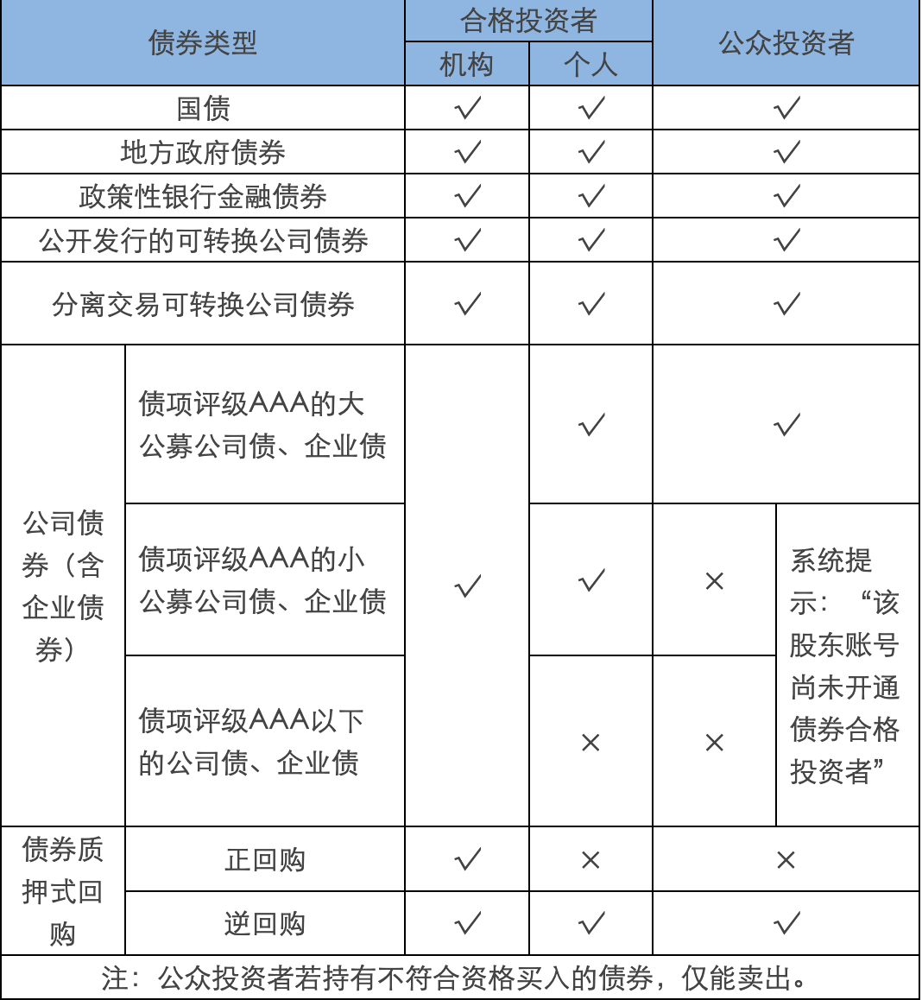
合格投资者开通
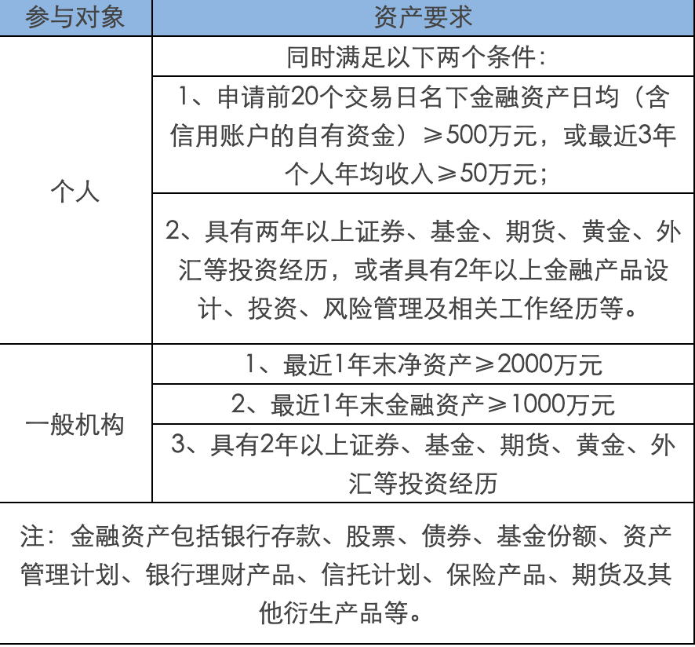
特殊法人机构
注：以下3类机构客户为合格投资者
（一）经有关金融监管部门批准设立的金融机构，包括证券公司、期货公司、基金管理公司及其子公司、商业银行、保险公司、信托公司、财务公司等；经行业协会备案或者登记的证券公司子公司、期货公司子公司、私募基金管理人。
（二）上述机构面向投资者发行的理财产品，包括但不限于证券公司资产管理产品、基金管理公司及其子公司产品、期货公司资产管理产品、银行理财产品、保险产品、信托产品、经行业协会备案的私募基金。
（三）社会保障基金、企业年金等养老基金，慈善基金等社会公益基金，合格境外机构投资者（QFII）、人民币合格境外机构投资者（RQFII）。
债券的发行
发行条件
根据《公司法》的规定，我国债券发行的主体，主要是公司制企业和国有企业。企业发行债券的条件是：
- 股份有限公司的净资产额不低于人民币3000万元，有限责任公司的净资产额不低于人民币6000万元。
- 累计债券总额不超过净资产的40%.
- 公司3年平均可分配利润足以支付公司债券1年的利息。
- 筹资的资金投向符合国家的产业政策。
- 债券利息率不得超过国务院限定的利率水平。
- 其他条件。
发行价格
债券的发行价格，是指债券原始投资者购入债券时应支付的市场价格，它与债券的面值可能一致也可能不一致。理论上，债券发行价格是债券的面值和要支付的年利息按发行当时的市场利率折现所得到的现值。
由此可见，票面利率和市场利率的关系影响到债券的发行价格。
当债券票面利率等于市场利率时，债券发行价格等于面值；
当债券票面利率低于市场利率时，企业仍以面值发行就不能吸引投资者，故一般要折价发行；
反之，当债券票面利率高于市场利率时，企业仍以面值发行就会增加发行成本，故一般要溢价发行。
在实务中，根据上述公式计算的发行价格一般是确定实际发行价格的基础，还要结合发行公司自身的信誉情况。
债券评级
公司公开发行债券通常需要由债券评信机构评定等级。债券的信用等级对于发行公司和购买人都有重要影响。这是因为：
（1）债券评级是度量违约风险的一个重要指标，债券的等级对于债务融资的利率以及公司债务成本有着直接的影响。一般说来，资信等级高的债券，能够以较低的利率发行；资信等级低的债券，风险较大，只能以较高的利率发行。另外，许多机构投资者将投资范围限制在特定等级的债券之内。
（2）债券评级方便投资者进行债券投资决策。对广大投资者尤其是中小投资者来说，由于受时间、知识和信息的限制，无法对众多债券进行分析和选择，因此需要专业机构对债券的还本付息的可靠程度进行客观、公正和权威的评定，为投资者决策提供参考。
国际上流行的债券等级是3等9级。AAA级为最高级，AA级为高级，A级为上中级，BBB级为中级，BB级为中下级，B级为投机级，CCC级为完全投机级，CC级为最大投机级，C级为最低级。
债券交易规则
债券交易方式
委托申报规则
深市：

沪市:

可交换债券定义
可交换债券全称为“可交换他公司股票的债券”，是指上市公司股份的持有者通过抵押其持有的股票给托管机构进而发行的公司债券，该债券的持有者在将来的某个时期内，能按照债券发行时约定的条件用持有的债券换取发债人抵押的上市公司股权。目前二级市场交易代码为：132XXX。
可转债和可交换债都是一种附有选择权的一种债券，如果债券行情好的情况下，可以选择持有债券获得收益，如果股票行情好的话，可以转变持有对应的股票获得收益。
可转债券定义
可转债券全称为“可转换公司债券”，是指上市公司发行的含有转换特征的公司债券，该债券的持有者在将来的某个时期内，能按照债券发行时约定的条件用持有的债券换取上市公司股票。
将持有的债券按转股价格转换成上市公司股票，是可转债的一种特性。一般情况下，在可转债发行结束后的6个月开始，您可以就可以进行转股操作了，具体以上市公司公告为准。
规则
-
当日买入，当日可申请转股；当日转股，下一个交易日到账；
-
当日可多次申报转股，日终清算时将合并计算数量；
-
申报数量必须为10张或其整数倍；
-
转股后，不足1股的部分，将折成现金到账，详见上市公司公告。
-
转股费用：不收费
操作
通过交易软件中“转股回售”菜单操作转股，输入相应的转股代码及数量即可，无需输入转股价格。需要注意的是深圳市场债转股申报后可以撤单，上海市场债转股申报后无法撤单转股公式如下：
股数=债券张数×100元（债券面值）÷转股价格。
债券质押式回购
债券正回购就是投资者抵押出合格的债券，经过一定比例折算后，计算出可以融入的资金，然后通过市场借入资金，并且在约定的时间归还本金和约定的利息的交易。与其对应的，把资金借给正回购方，到期以后获得本金加收益的投资者就是逆回购回购方。作为回购当事人的正、逆回购方是相互对应的，有进行主动交易的正回购方就一定有接受该交易的逆回购方。由此，我们可以简单地说：正回购方就是抵押出债券，取得资金的融入方；而逆回购方就是接受债券质押，借出资金的融出方。
目前债券正回购对投资者要求较高，必须是具有债券市场合格投资者资格的机构客户才能够参与正回购业务，普通投资者无法参与。
逆回购普通投资者都可以参与。个人及机构客户交易债券质押式逆回购需要单独开通逆回购权限。权限开通要求：已在我司开通了沪深A股股东账户，通过临柜或者互联网的方式操作申请，申请后立刻生效可以交易逆回购。
逆回购交易规则
实际占款天数：是指当次回购交易的首次交收日（含）至到期交收日（不含）的实际日历天数。即：成交日的下一个交易日（含）至到期日的下一个交易日（不含）之间的实际自然天数。
首次交收日：首次交收日为首次清算日（即购买当日T日）的下一交易日。
到期清算日：到期清算日为首次清算日加上回购期限天数（按自然日）。若到期日为非交易日，则顺延至下一交易日清算。
到期交收日：到期交收日为到期清算日的下一个交易日。
案例说明
（1）客户周一购买3天期限的逆回购，资金周四可用，周五可取。首次交收日为周二 ，到期清算日为周四 ，到期交收日为周五，计算收益时，天数为从周二（含）至周五（不含），即为周二、周三、周四3天。

（2）客户周四购买1天期限的逆回购，资金周五可用，下周一可取。首次交收日为周五，到期清算日为周五，到期交收日为下周一，计算收益时，天数为从周五（含）至下周一（不含），即为周五、周六、周日3天。
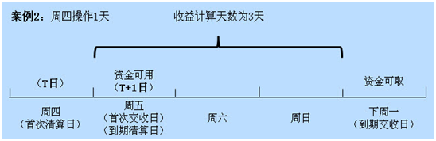
（3）客户周五购买1天期限的逆回购，资金下周一可用，下周二可取。首次交收日为下周一，到期清算日为下周一，到期交收日为下周二，计算收益时，天数为从下周一（含）至下周二（不含），即为下周一1天。
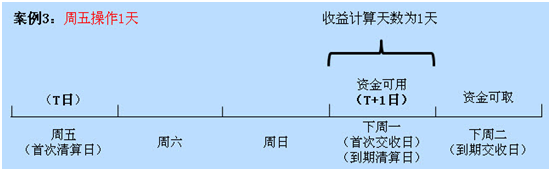
（4）客户周五购买3天期限的逆回购，资金下周一可用，下周二可取。首次交收日为下周一，到期清算日为下周一，到期交收日为下周二，计算收益时，天数为从下周一（含）至下周二（不含），即为下周一1天。
现有品种

交易费用

债券回售
债券发行人承诺，当触发债券招募书中回售条件时，发行人按约定的价格，向债券持有人收回债券，您可以选择回售或继续持有到还本付息。
债券回售操作深市选择“转股回售”菜单，沪市选择“卖出或转股回售”菜单，申报数量为10张（1手）或其整数倍，具体操作注意事项及各项规定请参见各债券公告。
债券回售操作不收手续费。
市场利率和债券价格关系
市场利率指的是资金市场上实际借贷的利率，根据市场资金供求关系决定，能够真实的反应市场的资金需求情况。如果市场资金供给量高，需求量少，利率就会下降；反之，利率升高。
债券估值模型

- P是债券现价
- T是债券距到期日时间
- t是现金流到达时间
- C是每期收益的现金流入
- F是本金
- y是利率
可见债券价格和市场利率成反比，市场利率越小，债券价格越高；市场利率越低，债券价格越高。
什么是债券久期
债券久期是指由于决定债券价格利率风险大小的因素主要包括偿还期和息票利率，因此需要找到某种简单的方法，准确直观地反映出债券价格的利率风险程度。经过长期研究，人们提出“久期”的概念，把所有影响利率风险的因素全部考虑进去。这一概念最早是由经济学家麦考雷于1938年提出的，所以又称麦考雷久期（简记为D）。麦考雷久期是使用加权平均数的形式计算债券的平均到期时间。它是债券在未来产生现金流的时间的加权平均,其权重是各期现金值在债券价格中所占的比重。
公式

- M acD是麦考雷久期，
- P是债券当前的市场价格，
- PV（Ct）是债券未来第t期可现金流（利息或资本）的现值，
- T是债券的到期时间。
- t为从当前到t时刻现金流发生的持续时间。
- y为债券的风险程度相适应的收益率。假设未来所有现金流的贴现率都固定为y。
债券久期规则
票面利率、到期时间、初始收益率是影响债券价格的利率敏感性的三个重要因素，它们与久期之间的关系也表现出一些规则。
-
保持其它因素不变，票面利率越低，息票债券的久期越长。
票面利率越高时，早期的现金流现值越大，占债券价格的权重越高，使时间的加权平均值越低，即久期越短。
-
保持其它因素不变，到期收益率越低，息票债券的久期越长。
到期收益率越低时，后期的现金流现值越大，在债券价格中所占的比重也越高，时间的加权平均值越高，久期越长。
-
一般来说，在其它因素不变的情况下，到期时间越长，久期越长。
债券的到期时间越长，价格的利率敏感性越强，这与债券的到期时间越长久期越长是一致的。但是，久期并不一定总随着到期时间的增长而增长。
债券久期的作用
在债券分析中，久期用来衡量债券价格变动对利率变化的敏感度，并且经过一定的修正，以使其能精确地量化利率变动给债券价格造成的影响。修正久期越大，债券价格对收益率的变动就越敏感，收益率上升所引起的债券价格下降幅度就越大，而收益率下降所引起的债券价格上升幅度也越大。可见，同等要素条件下，修正久期小的债券比修正久期大的债券抗利率上升风险能力强，但抗利率下降风险能力较弱。
久期是一种测度债券发生现金流的加权平均期限的方法。由于债券价格敏感性会随着到期时间的增长而增加，久期也可用来测度债券对利率变化的敏感性，根据债券的每次息票利息或本金的支付时间的加权平均来计算久期。
决定久期即影响债券价格对市场利率变化的敏感性包括三要素：到期时间、息票利率和到期收益率。
不同债券价格对市场利率变动的敏感性不一样。债券久期是衡量这种敏感性最重要和最主要的标准。久期等于利率变动一个单位所引起的价格变动。如市场利率变动1%，债券的价格变动3，则久期是3。
可转债发行新规
2017年9月8日开始实施可转债发行的新规后，投资者可以体验到0成本，无条件的顶格申购。这样的条件几乎是人人都可以参与，广大的散户投资者成为最直接的受益对象。
首先了解一下什么是可转债：
“可转换公司债券”简称可转债，是上市公司发行的一种特殊债券，该债券可以根据合同条款，转换成该上市公司对应数量的股份。通常可转债的票面利率较低。可转债既有债券的性质，又有股票的性质。它可以像普通债券一样上市交易，持有到期收取固定利息，这样可以取得稳定收益。一旦投资者把债券转换成股票，即意味着投资者持有的债权变成股权，获得参与股票分红，参与公司决策等权利。
新规发布以来，已经有两支采用信用申购的可转债发行，分别是雨虹转债和林洋转债。并且即将迎来第三支可转债的发行（金禾转债）。在新规下，投资者无需持有股票，也无需持有资金，照样可以顶格申购。
新规下发行的第一支可转债是由北京东方雨虹防水技术股份有限公司（股票代码：002271）发行的雨虹转债（债券代码：128016），发行的总量是18.40 亿元（共计 18,400,000 张），发行日期为 2017 年 9 月 25 日。
其发行结果如下：
1、向原 A 股股东优先配售结果
原股东共优先配售雨虹转债 15,731,339 张，共计 1,573,133,900 元，占本次发行总量的 85.50%。
2、网上向一般社会公众投资者发售结果
本次发行最终确定的网上向社会公众投资者发行的雨虹转债为 266,866,000 元（2,668,660 张），占本次发行总量的 14.50%，网上中签率为0.0013187948%。

雨虹转债上市日期是2017年10月20日，上市首日最高价格到达124.1元，也就是说如果投资者中签后在上市首日卖出就可以获得最高24%的收益水平。
发行可转债的对象可以分为原股东配债，和向社会公众发债两种模式，向原股东配债的，拥有优先认购权利。从结果可以看到，雨虹转债原股东配债占总发行量的85.5%。（第二支可转债林洋转债的原股东配债占比也要达到78.47%），也就是说，发行的总额度大部分由股东配售申购，分给普通投资者的比例只有在20%左右，如果想要申购债券的，可以购买该上市公司A股股票，通过配售的方式来购买债券更加有利。
具体申购规则：
-
向原股东配售
（1）适用对象：原股东（即在股权登记日日终持有该股票的客户）
（2）发行日前一日晚，配售权利将会转入客户账户内。客户也可放弃配债的操作权利。
（3）配售权利的数量，是以客户持有该上市公司的股票数量，按一定的配售比例进行核定的。沪市为10张的整数倍；深市为1张的整数倍。
（4）股东参与配债申购，一定可以获得对应数量的债券，同时仍可继续参与该债券对社会公众发行部分的申购。
（5）原股东参与配售时需在其优配额度之内根据优先配售的可转债数量足额缴付资金。
-
向社会公众发售
（1）适用对象：任意投资者（含配债的老股东）
（2）发行日当天通过发债代码申购该债券，中签方式类似新股申购。
（3）参与发债时，无需缴付申购资金；中签的客户需在T+2日（T日为申购日）日终保证账户有足额的认购资金。
（4）参与发债时，委托数量需为10张整数倍（可以顶格申购）。
向原股东配售和向社会公众发售在操作的时候分别有自己的申购代码，投资者按照自己参与的方式，通过股票买入菜单输入对应的代码就可以申购可转债。
注意事项：
-
如果是社会公众发债的方式参与的，投资者可以顶格申购，也就是按照申购上限数量申报，不用担心要缴款几百万，通常一个账户只会中一个号，且在中签后缴款，中一个号只要1000元。
-
对于参与配售的客户，在配售当日需要留足配售额度内的缴款资金；对于参与社会公众发债的客户，申购日可以无资金要求，如果确认自己中签，需在T+2日（T日为申购日）日终保证账户有足额的认购资金。
-
投资者连续 12 个月内累计出现 3 次中签但未足额缴款的情形时，自结算参与人最近一次申报其放弃认购的次日起 6 个月（按 180 个自然日计算，含次日）内不得参与网上新股、可转债及可交换债申购。放弃认购的次数按照投资者实际放弃认购的新股、可转债、可交换债的只数合并计算。 投资者一定要关心缴款时间。
-
每个证券账户只能申购一次，多次申购的，以第一笔为有效，其他都视为无效。
-
投资者需要注意理性投资，切勿盲目申购，为了获得原股东有限配售权，盲目买入上市公司的股票，导致股票套路就得不偿失了。
-
注意投资流动性风险，申购到债券以后，还需要等待上市公司公告该债券的上市日期。雨虹转债的上市日期和发行日期中间相隔近一个月时间。
-
可转债通常本身利率较低，投资者也要及时了解，债券投资风险，以及相应的转换条款、债券回售条款、提前赎回条款和利率对付条款等。
后续的可转债概念股票：
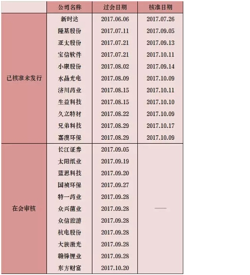
债券融资产品风险介绍
债券投资风险主要包括信用风险、利率风险、通货膨胀风险、流动性风险等等；
债券投资风险与收益并存，投资者应独立判断投资价值，自行承担投资风险。
-
信用风险
信用风险又叫违约风险，指债券发行人未按照契约的规定支付债券的本金和利息，给债券投资者带来损失的可能性。一般财务状况越差，债券违约风险越大。
-
利率风险
利率风险指利率变动引起债券价格波动的风险。债券价格与利率呈反向变动关系：利率上升时，债券价格下降；利率下降时，债券价格上升。
-
通货膨胀风险
通货膨胀风险又称为购买力风险，是指通货膨胀使债券持有者获得的利息和本金的购买力下降的风险。
-
流动性风险
流动性风险是指未到期债券的持有者无法以市值，而只能以明显低于市值的价格变现债券形成的投资风险。
金融衍生工具
金融衍生品（derivatives)，是指一种金融合约，其价值取决于一种或多种基础资产或指数，合约的基本种类包括远期、期货、掉期（互换）和期权。金融衍生品还包括具有远期、期货、掉期（互换）和期权中一种或多种特征的混合金融工具。
这种合约可以是标准化的，也可以是非标准化的。标准化合约是指其标的物(基础资产）的交易价格、交易时间、资产特征、交易方式等都是事先标准化的，因此此类合约大多在交易所上市交易，如期货。非标准化合约是指以上各项由交易的双方自行约定，因此具有很强的灵活性，比如远期协议。
金融衍生产品是与金融相关的派生物，通常是指从原生资产（英文为Underlying Assets）派生出来的金融工具。其共同特征是保证金交易，即只要支付一定比例的保证金就可进行全额交易，不需实际上的本金转移，合约的了结一般也采用现金差价结算的方式进行，只有在满期日以实物交割方式履约的合约才需要买方交足贷款。因此，金融衍生产品交易具有杠杆效应。保证金越低，杠杆效应越大，风险也就越大。
金融衍生工具的特征
金融衍生工具具有四个显著特征：
（1）跨期性。金融衍生工具是交易双方通过对利率、汇率、股价等因素变动趋势的预测，约定在未来某一时间按照一定条件进行交易或是否交易的合约。无论是哪一种金融衍生工具，都会影响交易者在未来一段时间内或未来某时点上的现金流，跨期交易的特点十分突出。
（2）杠杆性。金融衍生工具交易一般只需要支付少量的保证金或权利金就可签订远期大额合约或互换不同的金融工具。
（3）联动性。这是指金融衍生工具的价值与基础产品或基础变量紧密联系、规则变动。
（4）不确定性或高风险性。金融衍生工具的交易后果取决于交易者对基础工具（变量）未来价格（数值）的预测和判断的准确程度。基础工具价格的变幻莫测决定了金融衍生工具交易盈亏的不稳定性，这是金融衍生工具高风险性的重要诱因。
金融衍生工具的功能
金融衍生工具具有四项基本功能：
（1）套期保值功能。利用金融衍生工具进行套期保值，就是通过在标的物市场与衍生工具市场建立相反的头寸，从而锁定未来现金流或公允价值的交易行为。
（2）价格发现功能。价格发现功能是指在一个公开、公平、高效、竞争的衍生市场中，通过集中竞价形成衍生价格的功能。
（3）投机功能。与所有有价证券交易相同，衍生工具市场上的投机者也会利用对未来期货价格趋势的预期进行投机交易，预计价格上涨的投机者会建立期货多头，反之则建立空头。
（4）套利功能。严格意义上的衍生工具套利是指利用同一合约在不同市场上可能存在的短暂价格差异进行买卖，赚取差价，称为跨市场套利。
期权
期权 又称为选择权，是一种衍生性金融工具。
是指买方向卖方支付期权费（指权利金）后拥有的在未来一段时间内（指美式期权）或未来某一特定日期（指欧式期权）以事先规定好的价格（指履约价格）向卖方购买或出售一定数量的特定商品的权利，但不负有必须买进或卖出的义务（即期权买方拥有选择是否行使买入或卖出的权利，而期权卖方都必须无条件服从买方的选择并履行成交时的允诺）。
期货
期货 由现货衍生而来。期货不是真的货，期货是指以某种大宗商品及金融资产为标的的标准化可交易合约。
一般指期货合约，是由期货交易所统一制定的、规定在将来某一特定的时间和地点交割一定数量标的物的标准化合约。
目前我国的期货分别在上海期货交易所，郑州商品交易所，大连商品交易所以及中国金融期货交易所上市，品种包括农副产品，金属产品，能源产品及金融产品数十种交易品种。
期权和期货的不同点
（一）标的物不同
期货交易的标的物是商品或期货合约，而期权交易的标的物则是一种商品或期货合约选择权的买卖权利。
（二）投资者权利与义务的对称性不同
期权是单向合约，期权的买方在支付保险金后即取得履行或不履行买卖期权合约的权利，而不必承担义务；期货合同则是双向合约，交易双方都要承担期货合约到期交割的义务。如果不愿实际交割，则必须在有效期内对冲。
（三）履约保证不同
期货合约的买卖双方都要交纳一定数额的履约保证金；而在期权交易中，买方不需交纳履约保证金，只要求卖方交纳履约保证金，以表明他具有相应的履行期权合约的财力。
（四）现金流转不同
在期权交易中，买方要向卖方支付保险费，这是期权的价格，大约为交易商品或期货合约价格的5％～10％；期权合约可以流通，其保险费则要根据交易商品或期货合约市场价格的变化而变化。在期货交易中，买卖双方都要交纳期货合约面值5％～10%的初始保证金，在交易期间还要根据价格变动对亏损方收取追加保证金；盈利方则可提取多余保证金。
（五）盈亏的特点不同
期权买方的收益随市场价格的变化而波动，是不固定的，其亏损则只限于购买期权的保险费；卖方的收益只是出售期权的保险费，其亏损则是不固定的。期货的交易双方则都面临着无限的盈利和无止境的亏损。
（六）套期保值的作用与效果不同
期货的套期保值不是对期货而是对期货合约的标的金融工具的实物（现货）进行保值，由于期货和现货价格的运动方向会最终趋同，故套期保值能收到保护现货价格和边际利润的效果。期权也能套期保值，对买方来说，即使放弃履约，也只损失保险费，对其购买资金保了值；对卖方来说，要么按原价出售商品，要么得到保险费也同样保了值。
股票期权
目前我国股票期权处于试运行阶段，只有1个品种，就是上证50ETF期权。
股票期权合约为上交所统一制定的、规定买方有权在将来特定时间以特定价格买入或者卖出约定股票或者跟踪股票指数的交易型开放式指数基金（ETF）等标的物的标准化合约。
期权是交易双方关于未来买卖权利达成的合约。就个股期权来说，期权的买方（权利方）通过向卖方（义务方）支付一定的费用（权利金），获得一种权利，即有权在约定的时间以约定的价格向期权卖方买入或卖出约定数量的特定股票或ETF。当然，买方（权利方）也可以选择放弃行使权利。如果买方决定行使权利，卖方就有义务配合。
我国的商品期权
商品期货期权是指“商品期货合约的期权”，商品期货期权合约表示在期权到期日或之前，以协议价格购买或卖出一定数量的特定商品期货合同。商品期货期权的基础是商品期货合同，期货期权合同实施时要求交易的不是期货合同所代表的商品，而是期货合同本身。如果执行的是一份期货看涨期权，持有者将获得该期货合约的多头头寸外加一笔数额等于当前期货结算价格减去执行价格的现金。
目前我国的期货期权处于起步阶段，目前只有两个品种可以交易，一个是大连商品期货交易所的豆粕期权，另一个是郑州商品期货交易所的白糖期权。
我国的金融期货
在我国目前通过中国金融期货交易所上市交易的品种有一下几种：
沪深300股指期货，中证500股指期货，上证50股指期货，5年期国债期货，10年期国债期货。
沪深300指数是由上海和深圳证券市场中选取300只A股作为样本编制而成的成份股指数。沪深300指数样本覆盖了沪深市场六成左右的市值，具有良好的市场代表性。沪深300指数是沪深证券交易所第一次联合发布的反映A股市场整体走势的指数。它的推出，丰富了市场现有的指数体系，增加了一项用于观察市场走势的指标，有利于投资者全面把握市场运行状况，也进一步为指数投资产品的创新和发展提供了基础条件。
中证500指数是根据科学客观的方法，挑选沪深证券市场内具有代表性的中小市值公司组成样本股，以便综合反映沪深证券市场内中小市值公司的整体状况。其样本空间内股票扣除沪深300指数样本股及最近一年日均总市值排名前300名的股票，剩余股票按照最近一年（新股为上市以来）的日均成交金额由高到低排名，剔除排名后20%的股票，然后将剩余股票按照日均总市值由高到低进行排名，选取排名在前500名的股票作为中证500指数样本股。
上证50指数是根据科学客观的方法，挑选上海证券市场规模大、流动性好的最具代表性的50只股票组成样本股，以便综合反映上海证券市场最具市场影响力的一批龙头企业的整体状况。上证50指数自2004年1月2日起正式发布。其目标是建立一个成交活跃、规模较大、主要作为衍生金融工具基础的投资指数。
5年期国债期货和10年期国债期货就是以面值为100万元人民币、票面利率为3%的名义中期国债为标的物的期货合约。
个股期权开户条件

除法律、法规、规章以及监管机构另有规定外，下列专业机构投资者参与期权交易，不对其进行综合评估：
（一）商业银行、期权经营机构、保险机构、信托公司、基金管理公司、财务公司、合格境外机构投资者等专业机构及其分支机构；
（二）证券投资基金、社保基金、养老基金、企业年金、信托计划、资产管理计划、银行及保险理财产品，以及由第一项所列专业机构担任管理人的其他基金或者委托投资资产；
（三）监管机构及本所规定的其他专业机构投资者。
股指期货开户条件
开通商品期货期权的条件
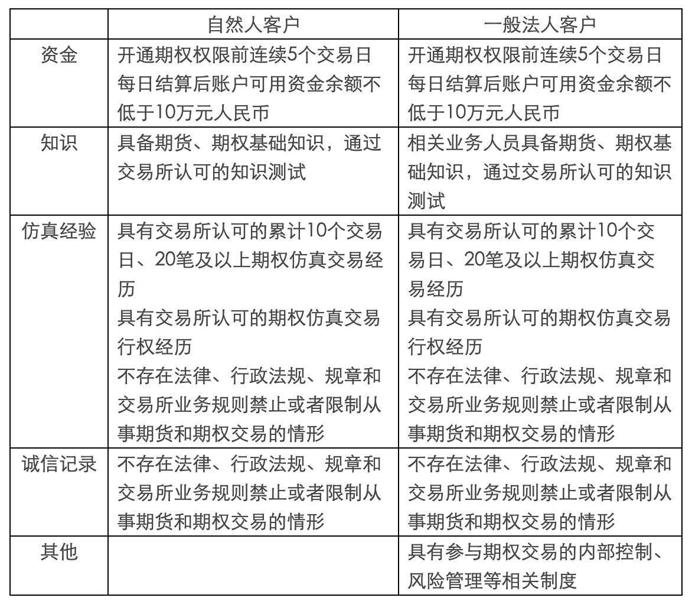
特殊法人，做市商，最近三年具有期权真实交易记录的客户这三类客户开户条件只要满足以下两个条件就可以开户：
1.不存在法律、行政法规、规章和交易所业务规则禁止或者限制从事期货和期权交易的情形；
2.具有参与期权交易的内部控制、风险管理等相关制度。
国内期货交易所介绍
-
大连商品交易所成立于1993年2月28日，并于同年11月18日正式开业，是经国务院批准并由中国证监会监督管理的四家期货交易所之一，也是中国东北地区唯一一家期货交易所。经中国证监会批准，目前上市交易的有玉米、玉米淀粉、黄大豆1号、黄大豆2号、豆粕、豆油、棕榈油、鸡蛋、纤维板、胶合板、线型低密度聚乙烯、聚氯乙烯、聚丙烯、焦炭、焦煤和铁矿石共计16个期货品种。大连商品交易所的官方网址为http://www.dce.com.cn。 -
郑州商品交易所是经国务院批准成立的我国首家期货市场试点单位。是目前全国四家期货交易所之一，郑商所隶属中国证券监督管理委员会管理。郑商所目前上市交易期货品种有普通小麦、优质强筋小麦、早籼稻、晚籼稻、粳稻、棉花、油菜籽、菜籽油、菜籽粕、白糖、动力煤、甲醇、精对苯二甲酸（PTA）、玻璃、硅铁和锰硅。基本形成的综合性品种体系覆盖农业、能源、化工、建材和冶金等国民经济重要领域。郑州商品交易所的官方网址为http://www.czce.com.cn/。 -
上海期货交易所是依照有关法规设立的，履行有关法规规定的职责，受中国证监会集中统一监督管理，并按照其章程实行自律管理的法人。上海期货交易所目前上市交易的有黄金、白银、铜、铝、锌、铅、螺纹钢、线材、燃料油、天然橡胶、石油沥青、热轧卷板、镍、锡等14种期货合约，并推出了黄金、白银和有色金属的连续交易。上海期货交易所的官方网址为http://www.shfe.com.cn/。 -
中国金融期货交易所是经国务院同意，中国证监会批准设立的，专门从事金融期货、期权等金融衍生品交易与结算的公司制交易所。中金所由上海期货交易所、郑州商品交易所、大连商品交易所、上海证券交易所和深圳证券交易所共同发起，于2006年9月8日在上海正式挂牌成立。成立中金所，发展金融期货，对于深化金融市场改革，完善金融市场体系，发挥金融市场功能，适应经济新常态，具有重要的战略意义。中国金融期货交易所的官方网站为http://www.cffex.com.cn/。
个股期权交易规则

买卖类型
-
买入开仓：买入认购或者认沽期权，获得权力仓。
-
买入平仓：已经有义务仓，买入期权，了解对应数量的义务仓位。
-
卖出开仓：卖出认购或认沽期权，形成义务仓。
-
卖出平仓：已经有权利仓，卖出期权，了解对应数量的权利仓。
-
备兑开仓：已经持有有标的证券的情况下，卖出对应数量的认购期权，形成义务仓。
-
备兑平仓：有备兑义务仓的情况下，买入期权，了解对应数量的义务仓。
股票期权交易费用
除事先需要缴纳足额保证金外，交易时需要缴纳佣金、结算费、过户费及经手费。
-
【结算费】
-
【交易的结算费】：合约标的为股票的，每张0.45元；合约标的为ETF的，每张0.3元。交易双方都要收取。
-
【行权的结算费】：合约标的为股票的，每张0.9元；合约标的为ETF的，每张0.6元，向行权方收取。
-
-
【过户费】-合约标的为股票的，按股票面值0.5‰向过入方收取行权过户费。合约标的为ETF的暂不收取过户费。
-
【经手费】-合约标的为股票的，每张3元；合约标的为交易所交易基金的，每张2元。股票期权试点初期，对上证50ETF期权合约进行卖出开仓的，暂免收取卖出开仓交易的相应交易经手费。
个股期权强平
当结算参与人、投资者出现下列情形之一时，登记公司、交易所有权对其相关持仓进行强行平仓：
- 结算参与人结算准备金余额小于零，且未能在规定时间内（次一交易日上午11：30前）补足；
- 备兑证券数量不足，且未能在规定时间内（除权除息日次一交易日11：30前）补足并锁定足额数量标的证券或自行平仓；
- 持仓量超过限仓规定，且未能在规定时间内自行平仓；
- 因违规、违约被交易所和登记公司要求强行平仓；
- 根据交易所的紧急措施应予强行平仓；
- 应予强行平仓的其他情形。
个股期权行权规则
个股期权行权时间：欧式期权。同合约到期日，行权指令提交时间为9:15-9:25，9:30-11:30，13:00-15:30。
在交易时间内，可以撤单。
期权合约行权的申报数量为1张或其整数倍。当日多次申报行权的，按照累计有效申报数量行权。
当日买入的期权合约，当日可以行权。当日行权申报指令，当日有效，当日可以撤销。
投资者申报行权，应当确保其相应账户在规定时间内有足额合约、合约标的或者资金，用于行权结算。
投资者相应账户内用于行权的合约或者合约标的不能满足其所有行权申报的，不足部分所对应的行权申报无效。
备兑开仓和备兑平仓问答
问：操作备兑开仓、备兑平仓，有哪些限制要求？
答：
a.备兑开仓，应先提交合约标的备兑锁定指令，将其证券账户中的合约标的提交为用于备兑开仓的证券（即“备兑备用证券”）。交易所实时锁定相应数量的备兑备用证券，锁定后的备兑备用证券不得卖出，仅可用于备兑开仓或者解除备兑锁定，交易所、中国结算另有规定的除外;
b.备兑开仓时备兑备用证券数量不足的，该备兑开仓指令无效;
c.备兑开仓的合约进行平仓后，当日可以提交备兑备用证券解除锁定指令；当日未提交的，于当日日终自动解除锁定。
问：什么时间可操作备兑备用证券的锁定和解锁？
答：交易所接受备兑备用证券锁定与解除锁定的时间为每个交易日9:15至9:25、9:30至11:30、13:00至15:00。
问：当天买入的合约标的，当天可以备兑锁定吗？
答：可以。交易所、中国结算公司另有规定除外。
问：当天锁定了备兑备用证券，但是没有操作备兑开仓，会自动解锁吗？
答：会。当日日终会自动解除锁定。
问：期权合约标的发生除权除息，对应的期权合约单位发生变化时备兑证券数量会调整吗？
答：会。中国结算于每日日终根据投资者备兑开仓的持仓情况，对投资者证券账户中相应数量的合约标的进行备兑交割锁定。合约标的发生除权、除息导致期权合约单位调整的，按照调整后的合约单位计算该合约对应的备兑证券数量。
问：当天解锁的备兑备用证券，当天还可以正常交易吗？
答：a.当日解除锁定的备兑备用证券当日可以卖出，但当日买入的合约标的、当日备兑锁定后又解除锁定的除外。
b.当日买入的合约标的，当日备兑锁定后又解除锁定的，当日可以用于交易所交易基金的申购或者赎回，但不得卖出；当日申购的交易所交易基金，当日备兑锁定后又解除锁定的，当日可以卖出，但不得赎回。
c.实行日内回转交易的合约标的，不受前款规定限制。
问：有限售条件的流通股可以作为备兑备用证券吗？
答：不可以。
个股期权风险
-
杠杆风险
个股期权交易采用保证金交易的方式，投资者的潜在损失和收益都可能成倍放大，尤其是卖出开仓期权的投资者面临的损失总额可能超过其支付的全部初始保证金以及追加的保证金，具有杠杆性风险。
-
价格波动的风险
投资者在参与个股期权交易时，应当关注股票现货市场的价格波动、个股期权的价格波动和其他市场风险以及可能造成的损失。比如，期权卖方要承担实际行权交割的义务，那么价格波动导致的损失可能远大于其收取的权利金。
-
个股期权无法平仓的风险
投资者应当关注个股期权合约可能难以或无法平仓的风险，及其可能造成的损失。比如，当市场上的交易量不足或者当没有办法在市场上找到合理的交易价格时，投资者作为期权合约的持有者可能面临无法平仓的风险。
-
合约到期权利失效的风险
投资者应当关注个股期权合约的最后交易日。如果个股期权的买方在合约最后交易日没有行权，那么，由于期权价值在到期后将归零，合约权利将失效，所以，在这里，提示投资者关注在合约到期日是否行权，否则期权买方可能会损失掉付出的所有权利金以及可能获得的收益。
-
个股期权交易被停牌的风险
投资者应当关注当个股期权交易出现异常波动或者涉嫌违法违规等情形时，个股期权交易可能被停牌等风险。
股指期货合约及规则
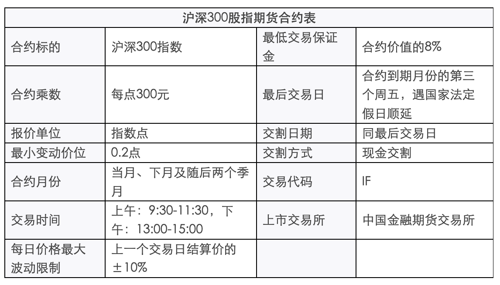
交易细则
股指期货合约内容主要条款包括合约标的、合约乘数、报价单位、最小变动价位、合约月份、交易时间、每日价格最大 波动限制、最低交易保证金、最后交易日、交割日期、交割方式、交易代码、上市交易所等。
沪深300股指期货合约的合约乘数为每点人民币300元。股指期货合约价值为股指期货指数点乘以合约乘数。
沪深300股指期货合约的最小变动价位为0.2指数点，合约交易报价指数点为0.2点的整数倍。
沪深300股指期货合约的合约月份为当月、下月及随后两个季月。季月是指3月、6月、9月、12月。
沪深300股指期货合约的每日价格最大 波动限制是指其每日价格涨跌停板幅度，为上一交易日结算价的±10%。
沪深300股指期货合约到期时采用现金交割方式。
交易指令分为市价指令、限价指令及交易所规定的其他指令。
市价指令是指不限定价格的、按照当时市场上可执行的最优报价成交的指令。市价指令的未成交部分自动撤销。
限价指令是指按照限定价格或者更优价格成交的指令。限价指令在买入时，必须在其限价或者限价以下的价格成交；在卖出时，必须在其限价或者限价以上的价格成交。限价指令当日有效，未成交部分可以撤销。
交易指令每次最小下单数量为1手，市价指令每次最大下单数量为50手，限价指令每次最大下单数量为100手。
期货连续竞价交易按照价格优先、时间优先的原则撮合成交。以涨跌停板价格申报的指令，按照平仓优先、时间优先的原则撮合成交。
开盘集合竞价中的未成交指令自动参与连续竞价交易。
限价指令连续竞价交易时，交易所系统将买卖申报指令以价格优先、时间优先的原则进行排序, 当买入价大于、等于卖出价则自动撮合成交。撮合成交价等于买入价(bp)、卖出价(sp)和前一成交价(cp)三者中居中的一个价格。即：
当 bp≥sp≥cp,则：最新成交价=sp
bp≥cp≥sp, 最新成交价=cp
cp≥bp≥sp, 最新成交价=bp
结算细则
无负债结算制度。
当日收市后，交易所按照当日结算价对结算会员所有合约的盈亏、交易保证金及手续费、税金等费用进行清算，对应收应付的款项实行净额一次划转，相应增加或者减少结算准备金。
结算会员在交易所结算完成后，按照前款原则对客户、交易会员进行结算；交易会员按照前款原则对客户进行结算。
当日结算价
当日结算价是指某一 期货合约最后一小时成交价格按照成交量的加权平均 价。计算结果保留至小数点后一位。
最后一小时因系统故障等原因导致交易中断的，扣除中断时间后向前取满一小时视为最后一小时。
合约最后一小时无成交的，以前一小时成交价格按照成交量的加权平均 价作为当日结算价。该时段仍无成交的，则再往前推一小时。以此类推。合约当日最后一笔成交距开盘时间不足一小时的，则取全天成交量的加权平均 价作为当日结算价。
合约当日无成交的，当日结算价计算公式为：当日结算价=该合约上一交易日结算价+基准合约当日结算价－基准合约上一交易日结算价，其中，基准合约为当日有成交的离交割月最近的合约。合约为新上市合约的，取其挂盘基准价为上一交易日结算价。基准合约为当日交割合约的，取其交割结算价为基准合约当日结算价。根据本公式计算出的当日结算价超出合约涨跌停板价格的，取涨跌停板价格作为当日结算价。
采用上述方法仍无法确定当日结算价或者计算出的结算价明显不合理的，交易所有权决定当日结算价。
当日盈亏=∑[（卖出成交价-当日结算价）×卖出量×合约乘数]+∑[（当日结算价-买入成交价）×买入量×合约乘数]+（上一交易日结算价-当日结算价）×（上一交易日卖出持仓量-上一交易日买入持仓量）×合约乘数
当日盈亏在当日结算时进行划转，盈利划入结算会员结算准备金，亏损从结算会员结算准备金中扣划。
当日结算时，结算会员账户中的交易保证金超过上一交易日结算时的交易保证金部分从结算准备金中扣划，交易保证金低于上一交易日结算时的交易保证金部分划入结算准备金。
手续费、税金等各项费用从结算准备金中扣划。
当日结算准备金余额=上一交易日结算准备金余额+上一交易日交易保证金－当日交易保证金+当日盈亏+入金－出金－手续费等。
结算完毕后，结算会员的结算准备金余额低于最低余额标准时，该结算结果即视为交易所向结算会员发出的追加保证金通知，两者的差额即为追加保证金金额。
商品期货合约内容
期货合约内容一般包括了一下几个要素（以螺纹钢为例）
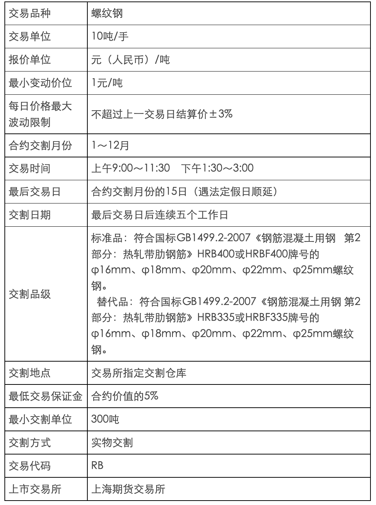
交易代码
商品期货的交易代码表示了合约的交易品种和交割月份。例如：
RM1801 RM表示是品种是菜粕 1801表示交割月是2018年1月
期货账户休眠
休眠账户的认定是指截至认定日，同时符合开户时间一年以上、最近一年以上无持仓、最近一年以上无交易（含一年）、认定日的客户权益在1000元以下（含1000元）四个条件的账户。其中，“无交易”是指没有开平仓成交，客户虽已委托但最终无开平仓交易的属于“无交易”。
按照证监会《期货市场账户规范工作实施细则》的规定，若期货账户变为休眠账户后满足激活条件后，可以向营业部提出激活申请，申请后1-2个交易日即可开仓交易。
具体激活条件如下：
① 商品期货：客户入金1000元以上，然后电话联系开户营业部激活，1-2个交易日生效可用；
② 金融期货：客户入金50万以上，然后电话联系开户营业部激活。
注：如果客户同时开通了商品和金融2个账户，休眠后若只想激活商品期货账户，也要按照金融期货激活标准转入50万才能激活。
强行平仓
强行平仓是指交易所按照有关规定对会员、客户持仓实行平仓的一项强制性措施。交易所会随当日结算数据向期货公司下达“强行平仓通知书"。需要执行强行平仓的头寸先由交易所会员在开市后第一节结束前执行，交易所另有规定的除外。若期货公司未在规定时限内执行完毕的，由交易所强制执行。
在期货交易中发生强行平仓的原因较多，包括客户未及时追加保证金、违反交易所持仓限额规定等。在规范的期货市场上，最为常见的强行平仓主要发生在客户保证金不足，即客户持仓所需的持仓保证金不足，而又未能按照期货公司要求及时追加相应保证金或者主动减仓时，期货公司为避免损失扩大导致风险扩散而强行平掉客户部分或全部持仓，将所得资金填补保证金缺口。
商品期货期权-白糖
白糖期权
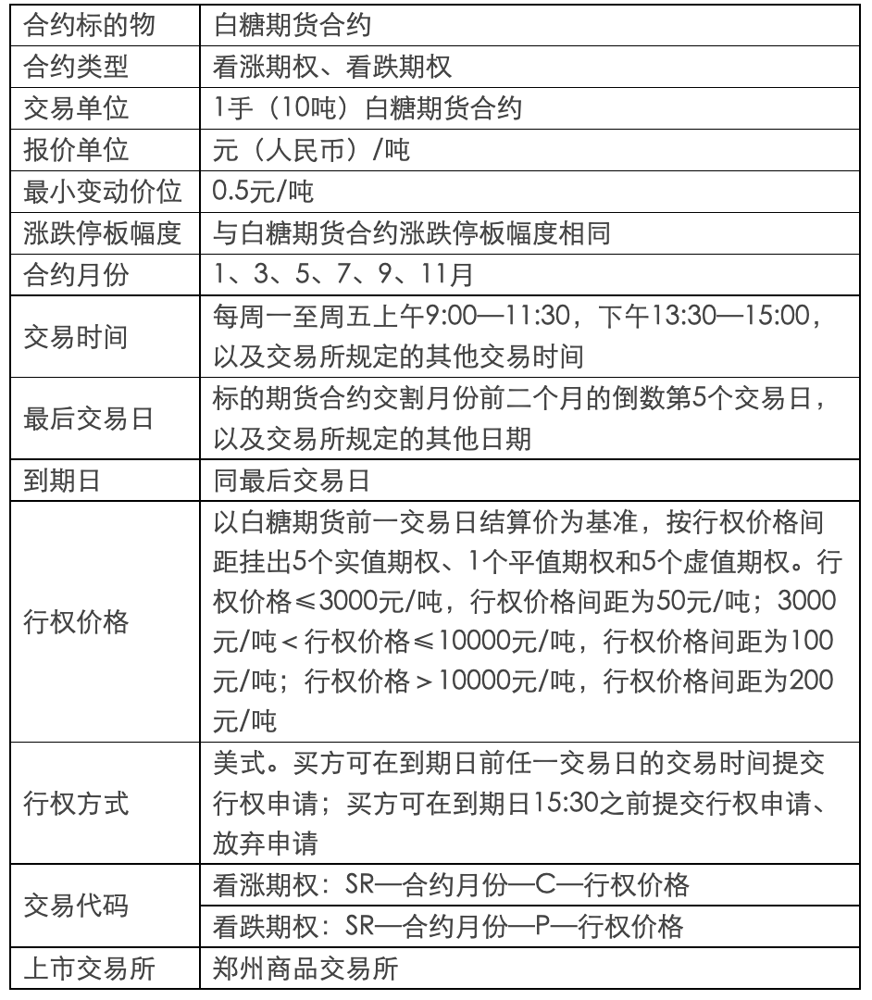
交易细则
期权交易实行做市商制度。
期权交易限价指令、市价指令和套利指令的每次最大下单数量与期货有关规定相同，交易所可以根据市场情况进行调整。
期权套利指令须附加指令属性。指令属性包括立即成交剩余指令自动撤销、立即全部成交否则自动撤销等。
期权套利指令包括：
（一）买入跨式套利，是指同时买入相同数量的同一标的物、同到期日、同行权价格的看涨期权和看跌期权；
（二）卖出跨式套利，是指同时卖出相同数量的同一标的物、同到期日、同行权价格的看涨期权和看跌期权；
（三）买入宽跨式套利，是指同时买入相同数量的同一标的物、同到期日、较高行权价格看涨期权和较低行权价格看跌期权；
（四）卖出宽跨式套利，是指同时卖出相同数量的同一标的物、同到期日、较高行权价格看涨期权和较低行权价格看跌期权。
集合竞价期间，交易所不接受套利指令。
期权合约了结方式包括平仓、行权和放弃。
平仓是指客户买入或卖出与其所持期权合约数量相同、方向相反的相同期权合约以了结期权持仓的方式。相同期权是指标的物、类型、月份、到期日和行权价格相同的期权合约。
行权是指买方按照规定行使权利，以行权价格买入或者卖出标的物，或者按照规定的结算价格进行现金差价结算以了结期权持仓的方式。
放弃是指期权合约到期，买方不行使权利以了结期权持仓的方式。
商品期货期权——豆粕

交易细则
期权合约的主要条款包括：合约标的物、合约类型、交易单位、报价单位、最小变动价位、涨跌停板幅度、合约月份、交易时间、最后交易日、到期日、行权价格、行权方式、交易代码和上市交易所。
期权合约类型包括看涨期权和看跌期权。
看涨期权是指买方有权在将来某一时间以特定价格买入标的期货合约，而卖方需要履行相应义务的期权合约。
看跌期权是指买方有权在将来某一时间以特定价格卖出标的期货合约，而卖方需要履行相应义务的期权合约。
交易所对期权合约提供限价指令和限价止损（盈）等指令。限价指令可以附加立即全部成交否则自动撤销和立即成交剩余指令自动撤销两种指令属性。
期权合约交易指令每次最大下单数量与标的期货合约交易指令每次最大下单数量相同。
交易所可以根据市场情况对期权合约交易指令的种类和每次最大下单数量进行调整并公布。
期权合约了结方式包括平仓、行权和放弃。
平仓是指买入或者卖出与所持期权合约的数量、标的物、月份、到期日、类型和行权价格相同但交易方向相反的期权合约，了结期权合约的方式。
行权是指期权买方按照规定行使权利，以行权价格买入或者卖出标的期货合约，了结期权合约的方式。
放弃是指期权合约到期，买方不行使权利以了结期权合约的方式。
期权买方可以申请对其同一交易编码下行权后的双向期货持仓进行对冲平仓，对冲数量不超过行权获得的期货持仓量。对冲结果从当日期货持仓量中扣除，并计入成交量。
期权卖方可以申请对其同一交易编码下履约后的双向期货持仓进行对冲平仓，对冲数量不超过履约获得的期货持仓量。对冲结果从当日期货持仓量中扣除，并计入成交量。
在交易所规定时间内，期权买方可以提出行权申请。
期权卖方有履约义务。履约是指当期权买方提出行权时，期权卖方有义务按合约规定的行权价格买入或者卖出一定数量的标的期货合约。
每日交易闭市后，交易所按照随机均匀抽取原则进行行权配对。
看涨期权行权与履约后，期权买方按行权价格获得期货买持仓，卖方按同一行权价格获得期货卖持仓。
看跌期权行权与履约后，期权买方按行权价格获得期货卖持仓，卖方按同一行权价格获得期货买持仓。
到期日闭市后，交易所进行如下处理：
（一）行权价格小于当日标的期货合约结算价的看涨期权持仓自动申请行权；
（二）行权价格大于当日标的期货合约结算价的看跌期权持仓自动申请行权。
期权买方也可以取消自动申请行权。
每日交易闭市后，交易所根据闭市时的期权买方持仓及其所在会员的结算准备金余额，以申请时间优先的原则按照以下步骤确定期权能否行权：
（一）期权行权建立的期货合约持仓与原期货合约持仓之和不得超过该期货合约的持仓限额，否则实行部分行权或者不予行权；
（二）期权行权后期权买方会员的结算准备金余额不得低于零，否则实行部分行权或者不予行权，具体要求如下：
1.行权价格小于（大于）标的期货合约当日结算价的看涨（跌）期权以及行权价格等于标的期货合约当日结算价的期权行权时，结算准备金余额应当满足相应期货合约上一交易日结算时的交易保证金要求；
2.行权价格大于（小于）标的期货合约当日结算价的看涨（跌）期权行权时，结算准备金余额应当满足相应期货合约上一交易日结算时的交易保证金要求，并能弥补虚值额。虚值额的计算方法如下：
看涨期权的虚值额=M ax（期权合约行权价格-标的期货合约结算价，0）×标的期货合约交易单位；
看跌期权的虚值额=M ax(标的期货合约结算价-期权合约行权价格，0）×标的期货合约交易单位。
结算细则
期权交易的买方支付权利金，不交纳交易保证金；期权交易的卖方收取权利金，交纳交易保证金。
期权买方（卖方）开仓时，按照开仓成交价支付（收取）权利金；期权买方（卖方）平仓时，按照平仓成交价收取（支付）权利金。
期权卖方开仓时，交易所按照上一交易日结算时该期权合约保证金收取期权卖方交易保证金；期权卖方平仓时，交易所释放期权卖方所平期权合约的交易保证金。
每日结算时，交易所按期权、期货合约当日结算价计收期权卖方的交易保证金，根据成交量和行权量（履约量）计收买卖双方的交易手续费和行权（履约）手续费，并对应收应付的款项实行净额一次划转，相应增加或减少会员的结算准备金。
对于行权或放弃的买卖双方，交易所于结算时减少各自相应的期权合约持仓，同时释放期权卖方交易保证金。
由期权行权转化的期货持仓不参与当日期货结算价计算。
风险控制
交易所风险管理实行保证金制度、涨跌停板制度、限仓制度、交易限额制度、大户报告制度、强行平仓制度和风险警示制度。
期权交易实行保证金制度。期权卖方交易保证金的收取标准为下列两者中较大者：
（一）期权合约结算价×标的期货合约交易单位+标的期货合约交易保证金－（1/2）×期权虚值额；
（二）期权合约结算价×标的期货合约交易单位+（1/2）×标的期货合约交易保证金。
期权交易实行涨跌停板制度。停板价格计算公式如下：
（一）涨停板价格 = 期权合约上一交易日结算价+标的期货合约涨跌停板幅度；
（二）跌停板价格 = M ax（期权合约上一交易日结算价-标的期货合约涨跌停板幅度，期权合约最小变动价位）。
涨（跌）停板单边无连续报价是指某一 期权合约在某一交易日收盘前5分钟内出现只有停板价位的买入(卖出)申报、没有停板价位的卖出(买入)申报，或者一有卖出(买入)申报就成交、但未打开停板价位的情况。
如果某期权合约上一交易日结算价小于等于当日涨跌停板幅度，且当日收盘前5分钟内出现只有最低报价的卖出申报、没有最低报价的买入申报，或者一有买入申报就成交、但未打开最低报价的情况，交易所不将其按照跌停板单边无连续报价处理。
期权交易实行限仓制度。期权限仓是指交易所规定非期货公司会员或者客户可以持有的，按单边计算的某月份期权合约投机持仓的最大数量。
期权合约与期货合约不合并限仓。期权合约在其交易过程中的不同时间阶段，分别适用不同的持仓限额。时间阶段的划分与标的期货合约相同。
当会员、客户出现下列情形之一时，交易所有权对其持仓进行强行平仓：
（一）会员结算准备金余额小于零，并未能在规定时限内补足的；
（二）非期货公司会员或客户持仓量超出限仓规定的；
（三）因违规受到交易所强行平仓处罚的；
（四）根据交易所的紧急措施应予强行平仓的；
（五）其他应予强行平仓的。
强行平仓前先由会员自己执行，除交易所特别规定外，对开设夜盘交易的品种，其时限为夜盘交易小节和第一节交易时间内；对未开设夜盘交易的品种，其时限为第一节交易时间内。若时限内会员未执行完毕，则由交易所强制执行。因结算准备金小于零而被要求强行平仓的，在保证金补足至最低结算准备金余额前，禁止相关会员的开仓交易。
保证金交易制度
客户交易衍生工具的时候，不用缴纳衍生工具合约的全部价值的资金，只需要按照规定缴纳一定比例的资金，就可以进行交易。因此金融衍生工具具有杠杆性，把衍生工具的收益和风险成倍的放大。一旦把保证金亏损到一定程度，就面临被强行平仓的风险。
保证金是指会员按规定标准交纳的资金，用于结算和保证履约。
保证金分为结算准备金和交易保证金。
结算准备金是指会员为了交易结算在交易所专用结算帐户中预先准备的资金，是未被合约占用的保证金。结算准备金的最低余额由交易所决定。
交易保证金是指会员在交易所专用结算帐户中确保合约履行的资金，是已被合约占用的保证金。当买卖双方成交后，交易所按持仓合约价值的一定比率收取交易保证金。
保证金比例因不同品种合约而不同，商品期货的保证金一般在5%到20%不等，股指期货的一般在20%，国债期货的保证金一般在2%左右，并且交易所会根据产品的投资风险和合约到期情况而调整各个合约的保证金比例，具体参照各个交易所公告。
各个衍生工具交易时间
-
商品期货交易时间：
09:00--11：30，13:30---15:00；其中10:15---10:30为商品期货小节休息时间。部分商品期货有夜盘交易，一般夜盘交易时间从晚上9点开始到第二天凌晨2点30左右（不同商品结束时间可能不同，具体以各品种合约为准）。
-
股指期货交易时间：
交易日的上午9:30-11:30,下午13:00-15:00。
-
国债期货交易时间：
交易日的9:15-11:30，13:00-15:15，最后一个交易日的09:15-11:30。
-
个股期权交易时间：
上午9:15-9:25，9:30-11:30（9:15-9:25为开盘集合竞价时间）；下午13:00-15:00（14:57-15:00为收盘集合竞价时间）。
-
个股期权行权时间：
欧式期权的行权时间同合约到期日，行权指令提交时间为9:15-9:25，9:30-11:30，13:00-15:30。
-
商品期权交易时间：
每周一至周五上午9:00～11:30，下午13:30～15:00，以及交易所规定的其他时间。
-
商品期权行权时间：
美式期权。买方可以在到期日之前任一交易日的交易时间，以及到期日15:30之前提出行权申请。
期货分析技术
期货交易可以采用K线图、线形图、点数图和移动平均线法等技术因素分析法，具体分析如下：
（1）利用技术分析抉择时机
利用技术分析来选择交易机会其实并不新鲜，唯一的区别是，出、入市时机抉择问题是针对很短暂的时期而言的。这里所关心的时间范围，是以天、小时乃至分钟来计算的，这与逐周、逐月的筹划正好相对立。但是所采用的技术方法依然是一致的。
（2）关于突破信 号的策略
关于突破信 号，交易者永远都得面对一个左右为难的问题：究竟在突破发生之前预先入市呢？还是正当突破发生的时候当场入市呢？或是等突破发生后市场反扑或反弹时伺机入市呢？三种做法各有各的门道，而且也有综合采用三种方式的办法。如果交易者可以买卖数张合约，那么不妨每样各做一个单位。假定预期市场将发生向上突破，采取预先方式的好处就在于，如果突破果真如愿发生了，那么头寸就具备有利的价值。但是在另一方面，交易失败的风险也相应地较大。如果正当突破发生时才入市，则成功的把握较大，但是代价是，入市的价位也不利。如果等市场在突破后出现反扑时再伺机入市，那么只要果真能够发生反扑，这就不失为合理的折衷方案。可惜的是，许多势头凶猛的市场（通常也是最有利可图的）并不给那些耐心的交易商第二个机会。因此，采取伺机方式的风险小，但是错过重要的入市机会的可能性较大。
这也是一个很好的例子，说明使用复合头寸的办法大大地化解了左右为难的程度。在突破前"预先"入市时，交易者不妨开立一点小头寸；然后，在突破时，再添一点头寸；最后，等突破后再追加一点头寸。但是，如果交易者只有一点小头寸，那么他将难于摆布。在很大程度上，他的决定取决于他愿意在这笔交易上冒多少风险，以及他愿意采取什么样交易风格。最保守的方式可能是在市场突破后出现反扑时伺机入市。碰上这种情况，完全要看交易者本人如何决策了。
（3）趋势线的突破
这是一种新头寸，或者正找机会平仓了结原有头寸的话，那么，紧凑趋势线的突破常常构成绝妙的下手信 号。当然，始终也必须考虑其他技术信 号。另外，在趋势线起支撑或阻挡作用的时候，也可以用作入市点。在主要的上升趋势线的上侧买入，或者在主要的下降趋势线的下侧卖出，均不失为有效的时机抉择的对策。
（4）支撑和阻挡水平的利用
在选择出、入市点方面，支撑和阻挡水平是行之有效的图表工具。当阻挡被击破时，可能构成开立新的多头的信 号。而这个新头寸的保护性止损指令就可以设置在最近的支撑点的下方，甚至还可以更接近地设置止损指令，把它安排在实际的突破点之下，因为这个水平现在应该起到支撑作用了。如果在下降趋势中市场上冲至阻挡水平，或者在上升趋势中价格下跌到支撑水平，那么，均可以据此开立新头寸，或者把已有帐面利润的原有头寸加以扩大。另外，在设置止损指令的时候，支撑和阻挡水平也是最有参考价值的。
（5）百分比回撤的利用
在上升趋势中，向下的调整常常回撤到前面的上涨进程的40%-60%的位置。可以利用这一点来开立新的多头头寸或扩大原有的多头头寸。因为现在主要是时机抉择问题，所以把百分比回撤也应用于非常短期的变化。比如说，在牛市突破之后的40%回撤，或许正是绝妙的买入点。而在下降趋势中，40%-60%的向上反弹通常提供了优越的抛空机会。同时，在日内价格图上，也可以应用百分比回撤的概念。
（6）价格跳空的利用
还可以利用技术图形上出现的价格跳空来有效地抉择买卖时机，例如，在上升运动之后，其下方的价格跳空通常起到支撑作用。当价格跌回价格跳空的上边缘、或者回到价格跳空之内的时候买入。然后，把止损指令放置在跳空之下。在下跌运作之后，当市场反弹到上面价格跳空的下边缘、或进入到跳空之内的时候卖出，然后，再把止损指令安排在跳空的上方。
（7）综合各项技术概念
利用各项技术概念的最有效的办法，是把它们综合起来。我们讨论的是时机抉择问题，关于买或者卖的基本决定早已经确定了。此处所做的一切，就是要对入市和出市点进行细致的调整。如果采纳了买入信 号，那么，就会力求以最低的价格入市。假定价格跌回了40%-60%的买进区域，此处又存在一个显著的支撑水平，或者一个潜在的支撑性价格跌空，那就妙不可言。如果附近就有一条重要的上升趋势线，那就更好。
把所有这一切因素综合在一起，就能增加交易时机抉择的有效性。在上升趋势中，在支撑区附近买进，但是如果该支撑被击溃，就尽快平仓出市。而在下降趋势中，我们应尽可能在接近阻挡区之处卖出，但是如果该阻挡被冲破，也尽快平仓出市。在上升趋势的向下调整中，如果沿着调整阶段中的高点所连成的紧凑下降趋势线被向上突破了，也可用作买入信 号。而在下降趋势的向上调整中，如果调整阶段的紧凑趋势线被向下突破了，也可能是做空头的机会。
期权策略篇之“保险策略（一）”
期权保险策略，又称保护性买入认沽策略，是指投资者在已经拥有标的证券、或者买入标的证券的同时，买入相应数量的认沽期权。
该策略的成本等于股票的购买成本加上认沽期权的权利金支出成本。由于在保护性买入认沽策略中，认沽期权为买入持仓，即权利仓，投资者只有权利，没有义务，因此在采用保护性买入认沽策略时，不需要缴纳现金保证金，也不会面临强行平仓风险。
通常情况下，大家习惯把这一策略理解为“为手中持有的股票购买保险”，这也是期权为现货投资者管理投资风险的最常用策略之一。我们先来举个简单易懂的例子，直观地说明一下认沽期权的保护作用。
王先生以每股12元的价格买入了5000股X股票，同时买入一张该股票认沽期权（行权价为12元，合约单位为5000）。
如果到期日X股票价格出现上涨，那么王先生直接抛售手中的股票即可，认沽期权到期失效。
而如果到期日X股票价格跌至12元以下，王先生则可以选择行权，仍然以每股12元的价格卖出5000股股票，从而避免了12元以下的损失。
从上面这一简单的例子中，我们发现认沽期权就好像为股票下跌这一事件买了一个“保险”。当股价上涨的时候，保险并不发生作用，当然“保费”也不会退回；而当股价出现下跌时，这份保险便起到了保护股价的功能。它与购买财产保险类似，投资者在认沽期权的有效期内可以放心地持有股票头寸，不必再担心股价下跌。对比现实生活中的保险，“保护性买入认沽”中认沽期权的行权价格，类似于保险中的“免赔额”；投资者购买认沽期权所付出的权利金，类似于保险中的“保费”；而认沽期权的到期时间，则类似于保险中的“保险期限”。因此，“保护性买入认沽”策略也称为“保险策略”。
从海外成熟市场经验看，该策略是个人投资者应用最为广泛的期权交易策略之一。风险较小，易于掌握，属于期权投资的入门策略，有助于投资者熟悉期权市场的基本特点，了解认沽期权的基本保险功能。
那么，投资者在什么样的情形下可以使用保护性策略？这一策略会给投资者带来什么样的收益或者损失？使用这一策略又需要注意什么呢？
李先生是一名有经验的、但厌恶风险的投资者，他一直在分析X股票走势，并根据公司的季度报告和整体宏观经济因素，预期未来一个月内X股价会出现明显上扬。基于这一判断，李先生希望能够买入5000股X股票，但又担心大盘在一个月内出现意外下跌，因此李先生希望能够控制住股价下跌的风险。
此时，李先生可以选择采取保护性买入认沽策略。具体操作如下：
假设目前股价为每股13.90元，1月到期、行权价为14元的认沽期权权利金为0.15元/股，合约单位为5000。李先生在买入5000股股票的同时，买入一张该认沽期权合约。
投资者可能会有几点小疑问：
1.为什么只买入一张认沽期权呢？
因为合约单位为5000，保护性买入认沽策略中股票的数量一般和期权合约对应股票的数量是一致的。
2.为什么买入1月份到期而不是其他到期月份的期权呢？
因为李先生希望保护X股票在一个月内的价格下跌风险。
3.为什么选择的行权价为14元而不是其他行权价呢？
这是因为，通常行权价选的越低，股价下跌时亏损值越大，所保险的范围就越小（类似于保险中的免赔额。如果免赔额越低，那么保险的范围就越小）；但行权价如果选的太高，一方面，权利金将会很贵，同时股价上涨收益的空间也会被压缩。因此，一般我们会选择轻度实值、平值或轻度虚值的认沽期权来保护手中的现货头寸。这一点，我们将在后续内容通过具体计算加以详细解释。
期权策略篇之“保险策略（二）”
沿用上一篇的例子，李先生以每股13.90元的价格买入5000股X股票，同时买入1月到期、行权价为14元的认沽期权，权利金为0.15元/股，合约单位为5000。
到期日当X股票出现不同价格时，李先生的股票和期权头寸各自损益将出现不同情形（以下损益为每股损益，单位：元）

根据上述表格，我们可以得到策略的损益图如下图所示（为了简单起见，分析和计算均忽略了交易成本和分红等情况）。
李先生通过保护性买入认沽策略，每股最大的亏损为0.05元，最大的盈利理论上是无限的，若不考虑交易成本，则该策略的盈亏平衡点为14.05元/股（即：13.90元+0.15元）。如果股价高于14.05元，李先生的组合头寸就开始出现盈利，股价涨得越多，盈利也越多；如果股价低于14.05元，李先生的这一策略就开始出现亏损，但是并不是“跌的越多、损失越多”，而是在跌破14元行权价以后，无论股价如何下跌，每股亏损已锁定在0.05元。
因此，保护性买入认沽策略的盈亏平衡点和最大亏损分别为：
盈亏平衡点=购买股票时的价格+认沽期权的权利金；
投资者的最大亏损额=认沽期权的行权价－（购买股票时的价格+认沽期权的权利金）。
投资者或许会问，在实战操作中，应该在哪些情景下使用保护性买入认沽策略呢？接下来我们将列举常用的几种使用场景。
场景一：王先生持有10000份180ETF，当初的买入价格为1.910元/份。由于王先生同时参与了融资融券业务，在融资业务上已经把180ETF作为了可充抵保证金证券，因此该基金份额无法卖出。王先生担心在这段质押期内，180ETF的价格会出现下跌。
此时，他可以使用保护性买入认沽策略。
假设目前市场上有一份行权价为1.9元/份的近月认沽期权“180ETF沽4月1900”，权利金大约为0.037元/份，合约单位为10000。
那么王先生可以以370元的成本买入一张“180ETF沽4月1900”合约，其中370元等于每股权利金0.037元乘以合约单位10000。
根据公式，我们便可推知王先生的最大亏损＝[行权价格（即1.900元）－ETF买入成本（即1.910元）－认沽期权权利金（即0.037元）]*10000＝－470元，表明最大亏损额为470元；
盈亏平衡点＝ETF买入成本（即1.910元）+认沽期权权利金（即0.037元）＝1.947元。
由此，王先生就不必担心180ETF在质押期内可能出现的下跌。同时，如果180ETF价格上涨，王先生仍然可以获益。
场景二：沈先生长期看好X股票股价，想买入1000股，但他担心短期受到大盘的拖累或黑天鹅事件的影响导致股价下跌。
此时他也可以使用保护性买入认沽策略。
假设目前市场上X股票为每股39元，有一份行权价为37.50元/股的近月认沽期权“X股票沽4月3750”，权利金大约为0.59元/股，合约单位为1000。
那么沈先生的操作是：以39000元的成本买入1000股股票，同时以590元的成本买入一张“X股票沽4月3750”合约，其中590元等于每股权利金0.59元乘以合约单位1000。
根据公式，我们可以推知沈先生的最大亏损额为2090元，盈亏平衡点为39.59元。同样，沈先生也无需担心X股票短期可能出现的下跌。
场景三：袁先生持有5000股Y股票（买入价为每股14元）,他得知该公司将在一个月内分红。为了获得此次股息和红利，袁先生打算在今后一个月内继续持有该股票，可是他又不想因股价下跌而蒙受市值上的损失。
假设目前市场上有一份行权价为14元/股的近月认沽期权“Y股票沽4月1400”，权利金大约为0.35元/股，合约单位为5000。
那么袁先生可以以1750元的成本买入一张该合约，此时袁先生的最大亏损额为1750元，盈亏平衡点为14.35元。
有了这样的操作，袁先生可以安心地持有股票以获得股息和红利。在期权到期日，如果股价低于14元，而且不管跌得多低，袁先生都可以将股票以14元的固定价格（即期权的行权价）卖给期权的义务方。相反，如果到期日股价高于14元，那么袁先生在得到股息和红利的同时，还可以获得股票上涨的收益。为获得这样的“保障”，袁先生付出了1750元的“保费”。
场景四：许先生以1.480元/份的价格买入了10000份50ETF，目前该ETF已经涨到了1.550元/份。这时，许先生担心如果卖出后价格继续上涨，他会为此而感到后悔；如果不卖出，又担心价格回落。他希望既能锁定现有收益，又能保留潜在收益。
面对许先生这一投资需求，保护性买入认沽策略可能比较适合。
假设目前市场上有一份行权价为1.550元/份的近月认沽期权“50ETF沽4月1550”，权利金大约为0.02元/份，合约单位为10000。
那么许先生以200元的成本买入一张合约。如果50ETF跌破1.550元，不管跌的多低，许先生都可以以每份1.550元的价格卖出手中的50ETF，扣除买入ETF的成本以及期权权利金的成本，我们便可推知他的收益至少为500元，即（1.550-1.480-0.02）*10000。如果50ETF继续上涨，许先生可以仍然享受ETF价格上涨的收益。
总结而言，保护性认沽策略可以为投资者在短期难以出售手中股票，或犹豫在上涨时是否卖出持有股票的情况下，提供一种既避免下跌损失、又保留上涨收益的选择。当然，这一策略的使用还需要注意几个问题，我们将在下一篇中介绍。
期权策略篇之“保险策略（三）”
保险策略是个人投资者使用非常广泛的策略，在实际应用中，投资者可能会遇到一些问题。
-
保险策略对什么样的投资者具有吸引力？
这一策略可能对两类投资者而言更为需要。第一类投资者是不想卖出股票的长期持有者，他们可以运用认沽期权的保护来限制短期内可能下跌而导致的亏损。第二类投资者是在买入股票时举棋不定、生怕自己错买的投资者，他们往往希望有某种“保险”，以防看错个股的走向。
-
简单地直接买入股票与保险策略孰优孰劣？
这个问题没有肯定的答案，这就好比我们是否要为自己的财产买一份保险一样，更多地取决于投资者自身的风险偏好程度和对市场判断的自信程度。如果投资者对自己买入的股票十分有信心，风险偏好程度较高，那么他完全可以不买认沽期权作保护；而对于风险承受能力较差的投资者，他们在买入股票或持有股票的同时，往往担心后市的下跌风险，此时采用保险策略将是一个不错的选择。
-
保险策略具有止损的功能，那么与“止损订单”有何区别呢？
止损订单是被动的止损方式，是价格依赖的。它的优点在于没有止损成本，但缺点在于：若股价跳空止损价位后一直下跌，则投资者将无法及时止损，或者若股价触及止损价位后开始回升，则投资者将不得不以止损价位割抛手中的股票，反而失去回升反弹的收益。
保险策略是一种主动的止损方式，是时间依赖的。它的优点在于投资者通过预先支付权利金，锁定股票在到期日的卖出价位，从而在到期日前可“高枕无忧”；但缺点在于其止损功能具有时间限制，随着合约到期而失效，同时它是一种有成本的止损方式。
-
从损益图看，保险策略和买入认购期权类似，这两个策略是不是一回事呢？
答案是否定的。损益图的相似只是告诉我们这两个策略的潜在盈亏是相似的。但从头寸的角度来说，这两个策略具有本质的不同。
认购期权的建仓成本只有权利金，而保险策略的建仓成本等于股票的购买价格加上认沽期权的权利金，相比之下，后者高出很多。
保险策略的建仓者实际持有股票，因此享有股票分红派息收益权，而认购期权的建仓者在到期前未持有股票，所以认购期权的持有者无法得到股票分红收益。
-
市场上有这么多认沽期权合约，应该选择哪一个合约对股票作保护呢？
（1）到期日的选择
首先，这就像买保险的保险期，取决于投资者想要保护手中股票的时间段。
其次，通常而言，长期保险的保费一定会比短期保险的保费贵，因此远月的一般比近月的贵。
在实际操作过程中，比较常见的做法是：先买入近月的认沽期权，待合约到期时，再行判断是否要买入下一个月的认沽期权。这一操作的优点在于降低了保险的成本，灵活地根据标的股票的价格走势而作判断。
（2）行权价的选择
首先，深度虚值的认沽期权虽然成本很低，但它所提供的下跌保护范围很小。它更像是一份“灾难保险”，当股价仅为小幅下跌时，它提供不了保护。
其次，深度实值的认沽期权虽然保护的范围很大，但它的权利金太高，严重限制了投资者的潜在盈利。这是一种过度保守的策略，其较高的权利金支出很大程度上抵消了股价的上涨收益。
因此，在实际操作中，投资者通常可以买入轻度虚值、平值或轻度实值的认沽期权。这样，投资者可以在保护股票下跌风险和保留股票上涨收益之间达到一种平衡。
小结
保险策略是一种风险有限、潜在收益无限的保守型套保策略，适合于希望持有股票，但风险承受能力较弱的投资者。一方面防范了后市的下跌风险，另一方面又保留了股价的上涨收益。投资者在实际投资过程中，可根据自身对股价的判断和风险偏好，选择是否买入认沽期权作保护性对冲，以及如何合适地选择期权合约的行权价和到期日，逐步学会巧用认沽期权穿越牛熊市。
资讯网站
转自: https://zhuanlan.zhihu.com/p/28331731
推荐10个最实用的财经资讯类网站
在做策略、行业研究的时候，我经常需要看市场观点、查找一些数据，这里罗列一下我经常去、觉得比较实用的几个网站。其实就算是一个门外汉，只想想提高一下理财和投资能力，不至于上一些无良理财的当，也是很推荐多上去看看的。
-
雪球 - 聪明的投资者都在这里
毫无疑问，雪球是我最喜欢的业内网站，口碑极好，当行业出了新闻或者最近某个概念比较热门的时候，就会上去看看大家的看法，然后再综合一下自己的判断，这个过程中，经常会发现一些自己之前没想到的地方。
总的来讲这个网站的讨论，质量都非常高。
-
这个懂的自然懂，证监会制定的信息披露网站，再加上它的东家是深交所，上面的资讯都是第一手的，非常及时和关键，所以推荐多去看看，没有坏处。
-
同花顺 - 让投资变得更简单
同花顺也是业内老牌的财经资讯网站了，现在在向移动端发展，App的功能很全面，不过毕竟网站上有数据，偶尔需要的时候上去查一下，也是很方便的。
-
东方财富 - 中国财经门户，提供专业的财经、股票、行情、证券、基金、理财、银行、保险、信托、期货、黄金、股吧、博客等各类财经资讯及数据
东方财富其实和同花顺差不多，两个网站的功能和作用严重同质化，虽然很全面，基本什么方面的内容都能在上面涉及到，但是就是太全了，每个小方面都很难做好，所以现在也只是用来查一些数据和资料。
-
慧博网 - 中国最大最专业的投资研究平台
提到慧博网，主要是因为它的特色之一就是研报，免费而且很全面的研报，在需要的时候，上去看看别人的研报，还是很有帮助的。
-
凤凰财经 - 离用户最近的财经媒体-凤凰网
凤凰财经是我认为财经网站中风格最鲜明，而且尺度最大的，经常能看到很多深入的报道，是别的资讯网站或者杂志写不出来的，当然这也和网站母公司是香港公司有关。
-
新浪财经 - 新浪网
新浪财经也是我经常会去看的财经网站之一，主要是因为它提供了很多的数据接口，供别人使用，这就很方便那些有编程能力的人，去自动更新和下载数据了。
-
虎嗅网虽然偏创业创投圈，不是二级市场的范畴，但因为市场的热点总是联动的，所以上去看看大家最近关心什么，哪些概念最近比较火，也是很有帮助的。
-
Yahoo - Business Finance, Stock Market, Quotes, News
Yahoo就不用说了，老牌的财经网站，主要用来看国外的新闻。
-
雪球／投资者教育基地 - 投资者教育基地
雪球之前就已经谈过了，但我这里还是要再谈一遍，因为它的投资者教育版块。有很多人咨询过我投资和理财方面的内容，我发现很多都是非常基础的，完全可以通过看一些最简单的科普就能解决。雪球的投资者教育基地对初学者来说，非常实用。
-
国泰君安-投资者教育基地 - 国泰君安证券投资者教育基地
国泰君安证券股份有限公司，于1999年8月18日合并设立，是中国证券行业长期、持续、全面领先的综合金融服务商。